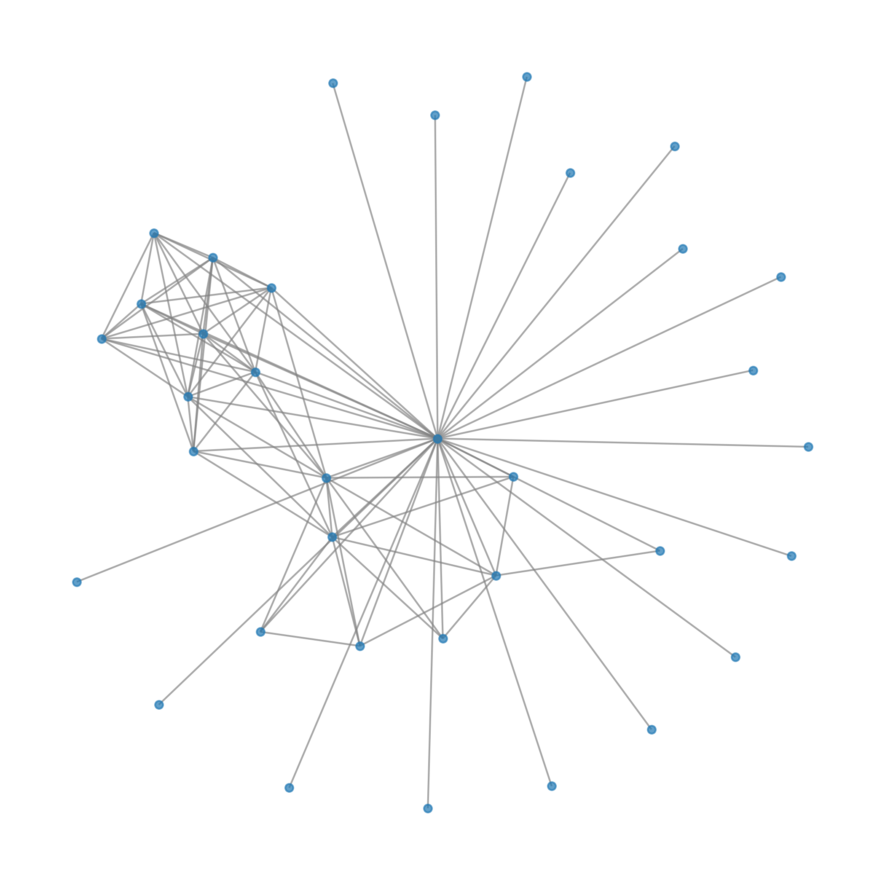
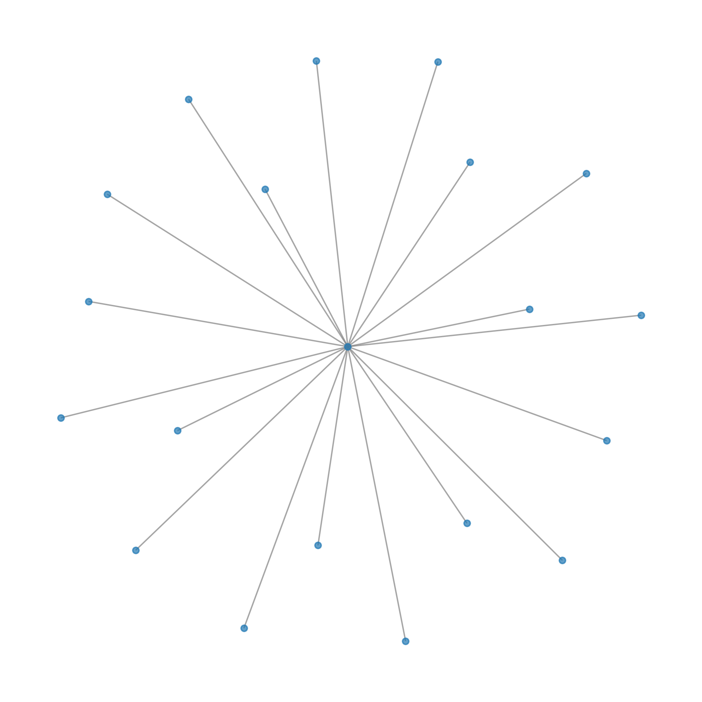

Reference (biogrid+hippie)

Community 0
GO:BP
| source | term_id | annotation | description | intersection_size | p_value | community |
|---|---|---|---|---|---|---|
| GO:BP | GO:0051086 | chaperone mediated protein folding independent of cofactor | "The process of assisting in the correct noncovalent assembly of posttranslational proteins and does not depend on additional protein cofactors. This function occurs over one or more cycles of nucleotide-dependent binding and release." [GOC:rb] | 8 | 1.056929e-26 | 0 |
| GO:BP | GO:1904874 | positive regulation of telomerase RNA localization to Cajal body | "Any process that activates or increases the frequency, rate or extent of telomerase RNA localization to Cajal body." [GO_REF:0000058, GOC:BHF, GOC:BHF_telomere, GOC:nc, GOC:TermGenie, PMID:25467444] | 8 | 9.511955e-26 | 0 |
| GO:BP | GO:1904869 | regulation of protein localization to Cajal body | "Any process that modulates the frequency, rate or extent of protein localization to Cajal body." [GO_REF:0000058, GOC:BHF, GOC:BHF_telomere, GOC:nc, GOC:TermGenie, PMID:25467444] | 8 | 4.755776e-25 | 0 |
| GO:BP | GO:1904871 | positive regulation of protein localization to Cajal body | "Any process that activates or increases the frequency, rate or extent of protein localization to Cajal body." [GO_REF:0000058, GOC:BHF, GOC:BHF_telomere, GOC:nc, GOC:TermGenie, PMID:25467444] | 8 | 4.755776e-25 | 0 |
| GO:BP | GO:1904867 | protein localization to Cajal body | "A process in which a protein is transported to, or maintained in, a location within a Cajal body." [GO_REF:0000087, GOC:BHF, GOC:BHF_telomere, GOC:nc, GOC:TermGenie, PMID:25467444] | 8 | 5.230912e-24 | 0 |
| GO:BP | GO:1903405 | protein localization to nuclear body | "A process in which a protein is transported to, or maintained in, a location within a nuclear body." [GO_REF:0000087, GOC:TermGenie, PMID:24713849] | 8 | 5.230912e-24 | 0 |
| GO:BP | GO:1904872 | regulation of telomerase RNA localization to Cajal body | "Any process that modulates the frequency, rate or extent of telomerase RNA localization to Cajal body." [GO_REF:0000058, GOC:BHF, GOC:BHF_telomere, GOC:nc, GOC:TermGenie, PMID:25467444] | 8 | 5.230912e-24 | 0 |
| GO:BP | GO:1990173 | protein localization to nucleoplasm | "A process in which a protein is transported to, or maintained in, a location within the nucleoplasm." [GOC:mah, PMID:22918952] | 8 | 3.173151e-23 | 0 |
| GO:BP | GO:0090672 | telomerase RNA localization | "Any process in which telomerase RNA is transported to, or maintained in, a specific location." [GOC:BHF, GOC:BHF_telomere, GOC:nc, PMID:25467444] | 8 | 7.984762e-22 | 0 |
| GO:BP | GO:0090670 | RNA localization to Cajal body | "A process in which an RNA is transported to, or maintained in, a Cajal body." [GOC:BHF, GOC:BHF_telomere, GOC:nc, PMID:25467444] | 8 | 7.984762e-22 | 0 |
| GO:BP | GO:0090671 | telomerase RNA localization to Cajal body | "A process in which telomerase RNA (TERC) is transported to, or maintained in, a Cajal body." [GOC:BHF, GOC:BHF_telomere, GOC:nc, PMID:25467444] | 8 | 7.984762e-22 | 0 |
| GO:BP | GO:0090685 | RNA localization to nucleus | "A macromolecular localization process in which RNA is transported to and maintained in a location within the nucleus." [GOC:mah, PMID:26305931] | 8 | 7.984762e-22 | 0 |
| GO:BP | GO:0032212 | positive regulation of telomere maintenance via telomerase | "Any process that activates or increases the frequency, rate or extent of the addition of telomeric repeats by telomerase." [GOC:mah] | 8 | 7.768143e-21 | 0 |
| GO:BP | GO:1904358 | positive regulation of telomere maintenance via telomere lengthening | "Any process that activates or increases the frequency, rate or extent of telomere maintenance via telomere lengthening." [GO_REF:0000058, GOC:BHF, GOC:BHF_telomere, GOC:nc, GOC:TermGenie, PMID:23959892] | 8 | 2.344575e-20 | 0 |
| GO:BP | GO:0051084 | 'de novo' post-translational protein folding | "The process of assisting in the correct noncovalent folding of newly formed polypeptides or folding intermediates of polypeptides that have exited the ribosome and/or have been stabilized and transferred by other chaperone proteins. This process could involve several cycles of ATP hydrolysis." [GOC:rb] | 8 | 1.530368e-18 | 0 |
| GO:BP | GO:0032210 | regulation of telomere maintenance via telomerase | "Any process that modulates the frequency, rate or extent of the addition of telomeric repeats by telomerase." [GOC:mah] | 8 | 2.753441e-18 | 0 |
| GO:BP | GO:0006458 | 'de novo' protein folding | "The process of assisting in the folding of a nascent peptide chain into its correct tertiary structure." [GOC:mb] | 8 | 3.981563e-18 | 0 |
| GO:BP | GO:2000573 | positive regulation of DNA biosynthetic process | "Any process that activates or increases the frequency, rate or extent of DNA biosynthetic process." [GOC:obol] | 8 | 6.717892e-18 | 0 |
| GO:BP | GO:1904356 | regulation of telomere maintenance via telomere lengthening | "Any process that modulates the frequency, rate or extent of telomere maintenance via telomere lengthening." [GO_REF:0000058, GOC:BHF, GOC:BHF_telomere, GOC:nc, GOC:TermGenie, PMID:23959892] | 8 | 1.284323e-17 | 0 |
| GO:BP | GO:0007004 | telomere maintenance via telomerase | "The maintenance of proper telomeric length by the addition of telomeric repeats by telomerase." [GOC:elh] | 8 | 2.698332e-17 | 0 |
| GO:BP | GO:0006278 | RNA-templated DNA biosynthetic process | "A DNA biosynthetic process that uses RNA as a template for RNA-dependent DNA polymerases (e.g. reverse transcriptase) that synthesize the new strand." [GOC:mah, ISBN:0198506732] | 8 | 4.083852e-17 | 0 |
| GO:BP | GO:0010833 | telomere maintenance via telomere lengthening | "Any process that contributes to the maintenance of proper telomeric length and structure by affecting and monitoring the activity of telomeric proteins and lengthening the telomeric DNA." [GOC:dph, GOC:tb] | 8 | 1.416831e-16 | 0 |
| GO:BP | GO:0061077 | chaperone-mediated protein folding | "The process of inhibiting aggregation and assisting in the covalent and noncovalent assembly of single chain polypeptides or multisubunit complexes into the correct tertiary structure that is dependent on interaction with a chaperone." [GOC:dph, GOC:vw] | 8 | 1.588501e-16 | 0 |
| GO:BP | GO:0032206 | positive regulation of telomere maintenance | "Any process that activates or increases the frequency, rate or extent of a process that affects and monitors the activity of telomeric proteins and the length of telomeric DNA." [GOC:mah] | 8 | 1.778097e-16 | 0 |
| GO:BP | GO:2000278 | regulation of DNA biosynthetic process | "Any process that modulates the frequency, rate or extent of DNA biosynthetic process." [GOC:obol] | 8 | 9.803036e-16 | 0 |
| GO:BP | GO:1900182 | positive regulation of protein localization to nucleus | "Any process that activates or increases the frequency, rate or extent of protein localization to nucleus." [GOC:TermGenie] | 8 | 1.279980e-15 | 0 |
| GO:BP | GO:0007339 | binding of sperm to zona pellucida | "The process in which the sperm binds to the zona pellucida glycoprotein layer of the egg. The process begins with the attachment of the sperm plasma membrane to the zona pellucida and includes attachment of the acrosome inner membrane to the zona pellucida after the acrosomal reaction takes place." [GOC:dph, ISBN:0878932437] | 7 | 2.065202e-15 | 0 |
| GO:BP | GO:2001252 | positive regulation of chromosome organization | "Any process that activates or increases the frequency, rate or extent of chromosome organization." [GOC:obol] | 8 | 2.934827e-15 | 0 |
| GO:BP | GO:0032204 | regulation of telomere maintenance | "Any process that modulates the frequency, rate or extent of a process that affects and monitors the activity of telomeric proteins and the length of telomeric DNA." [GOC:mah] | 8 | 5.003497e-15 | 0 |
| GO:BP | GO:0035036 | sperm-egg recognition | "The initial contact step made between the sperm plasma membrane and outer layer of the egg during fertilization." [GOC:bf] | 7 | 1.705638e-14 | 0 |
| GO:BP | GO:1900180 | regulation of protein localization to nucleus | "Any process that modulates the frequency, rate or extent of protein localization to nucleus." [GOC:TermGenie] | 8 | 4.426421e-14 | 0 |
| GO:BP | GO:0000723 | telomere maintenance | "Any process that contributes to the maintenance of proper telomeric length and structure by affecting and monitoring the activity of telomeric proteins, the length of telomeric DNA and the replication and repair of the DNA. These processes includes those that shorten, lengthen, replicate and repair the telomeric DNA sequences." [GOC:BHF, GOC:BHF_telomere, GOC:elh, GOC:rl, PMID:11092831] | 8 | 1.145768e-13 | 0 |
| GO:BP | GO:0071897 | DNA biosynthetic process | "The biosynthetic process resulting in the formation of DNA." [GOC:mah] | 8 | 1.690365e-13 | 0 |
| GO:BP | GO:0009988 | cell-cell recognition | "Cell recognition between cells. May involve the formation of specialized cell junctions." [ISBN:0824072820] | 7 | 2.192243e-13 | 0 |
| GO:BP | GO:0032200 | telomere organization | "A process that is carried out at the cellular level which results in the assembly, arrangement of constituent parts, or disassembly of telomeres, terminal regions of a linear chromosome that include the telomeric DNA repeats and associated proteins." [GOC:dph, GOC:jl, GOC:mah] | 8 | 3.971016e-13 | 0 |
| GO:BP | GO:0006403 | RNA localization | "A process in which RNA is transported to, or maintained in, a specific location." [GOC:ai] | 8 | 5.776283e-13 | 0 |
| GO:BP | GO:0006457 | protein folding | "The process of assisting in the covalent and noncovalent assembly of single chain polypeptides or multisubunit complexes into the correct tertiary structure." [GOC:go_curators, GOC:rb] | 8 | 1.207853e-12 | 0 |
| GO:BP | GO:0050821 | protein stabilization | "Any process involved in maintaining the structure and integrity of a protein and preventing it from degradation or aggregation." [GOC:ai] | 8 | 1.450844e-12 | 0 |
| GO:BP | GO:0033044 | regulation of chromosome organization | "Any process that modulates the frequency, rate or extent of a process involved in the formation, arrangement of constituent parts, or disassembly of a chromosome." [GOC:mah] | 8 | 2.716142e-12 | 0 |
| GO:BP | GO:0051054 | positive regulation of DNA metabolic process | "Any process that activates or increases the frequency, rate or extent of the chemical reactions and pathways involving DNA." [GOC:ai] | 8 | 1.208616e-11 | 0 |
| GO:BP | GO:0034504 | protein localization to nucleus | "A process in which a protein transports or maintains the localization of another protein to the nucleus." [GOC:ecd] | 8 | 2.475521e-11 | 0 |
| GO:BP | GO:0031647 | regulation of protein stability | "Any process that affects the structure and integrity of a protein, altering the likelihood of its degradation or aggregation." [GOC:dph, GOC:mah, GOC:tb] | 8 | 3.769315e-11 | 0 |
| GO:BP | GO:0008037 | cell recognition | "The process in which a cell in an organism interprets its surroundings." [GOC:go_curators] | 7 | 4.889969e-11 | 0 |
| GO:BP | GO:0007338 | single fertilization | "The union of male and female gametes to form a zygote." [GOC:ems, GOC:mtg_sensu] | 7 | 9.287582e-11 | 0 |
| GO:BP | GO:0009566 | fertilization | "The union of gametes of opposite sexes during the process of sexual reproduction to form a zygote. It involves the fusion of the gametic nuclei (karyogamy) and cytoplasm (plasmogamy)." [GOC:tb, ISBN:0198506732] | 7 | 4.449739e-10 | 0 |
| GO:BP | GO:0010638 | positive regulation of organelle organization | "Any process that increases the frequency, rate or extent of a process involved in the formation, arrangement of constituent parts, or disassembly of an organelle." [GOC:dph, GOC:tb] | 8 | 8.325715e-10 | 0 |
| GO:BP | GO:1903829 | positive regulation of protein localization | "Any process that activates or increases the frequency, rate or extent of a protein localization." [GO_REF:0000058, GOC:TermGenie, GOC:vw] | 8 | 9.326615e-10 | 0 |
| GO:BP | GO:0051052 | regulation of DNA metabolic process | "Any process that modulates the frequency, rate or extent of the chemical reactions and pathways involving DNA." [GOC:ai] | 8 | 9.477858e-10 | 0 |
| GO:BP | GO:0051604 | protein maturation | "Any process leading to the attainment of the full functional capacity of a protein." [GOC:ai] | 8 | 1.732627e-09 | 0 |
| GO:BP | GO:0051276 | chromosome organization | "A process that is carried out at the cellular level that results in the assembly, arrangement of constituent parts, or disassembly of chromosomes, structures composed of a very long molecule of DNA and associated proteins that carries hereditary information. This term covers covalent modifications at the molecular level as well as spatial relationships among the major components of a chromosome." [GOC:ai, GOC:dph, GOC:jl, GOC:mah] | 8 | 2.870913e-09 | 0 |
| GO:BP | GO:0032880 | regulation of protein localization | "Any process that modulates the frequency, rate or extent of any process in which a protein is transported to, or maintained in, a specific location." [GOC:dph, GOC:mah, GOC:tb] | 8 | 1.119709e-07 | 0 |
| GO:BP | GO:0006259 | DNA metabolic process | "Any cellular metabolic process involving deoxyribonucleic acid. This is one of the two main types of nucleic acid, consisting of a long, unbranched macromolecule formed from one, or more commonly, two, strands of linked deoxyribonucleotides." [ISBN:0198506732] | 8 | 2.541057e-07 | 0 |
| GO:BP | GO:0060341 | regulation of cellular localization | "Any process that modulates the frequency, rate or extent of a process in which a cell, a substance, or a cellular entity is transported to, or maintained in a specific location within or in the membrane of a cell." [GOC:dph, GOC:tb] | 8 | 2.707099e-07 | 0 |
| GO:BP | GO:0051130 | positive regulation of cellular component organization | "Any process that activates or increases the frequency, rate or extent of a process involved in the formation, arrangement of constituent parts, or disassembly of cell structures, including the plasma membrane and any external encapsulating structures such as the cell wall and cell envelope." [GOC:ai] | 8 | 5.417046e-07 | 0 |
| GO:BP | GO:0090666 | scaRNA localization to Cajal body | "A process in which a small Cajal body-specific RNA is transported to, or maintained in, a Cajal body." [GOC:BHF, GOC:BHF_telomere, GOC:nc, PMID:25467444] | 3 | 6.022739e-07 | 0 |
| GO:BP | GO:0033043 | regulation of organelle organization | "Any process that modulates the frequency, rate or extent of a process involved in the formation, arrangement of constituent parts, or disassembly of an organelle." [GOC:mah] | 8 | 7.344876e-07 | 0 |
| GO:BP | GO:0033365 | protein localization to organelle | "A process in which a protein is transported to, or maintained in, a location within an organelle." [GOC:mah] | 8 | 1.109731e-06 | 0 |
| GO:BP | GO:0019953 | sexual reproduction | "A type of reproduction that combines the genetic material of two gametes (such as a sperm or egg cell or fungal spores). The gametes have an haploid genome (with a single set of chromosomes, the product of a meiotic division) and combines with one another to produce a zygote (diploid)." [Wikipedia:Sexual_reproduction] | 7 | 4.402871e-05 | 0 |
| GO:BP | GO:0032879 | regulation of localization | "Any process that modulates the frequency, rate or extent of any process in which a cell, a substance, or a cellular entity is transported to, or maintained in, a specific location." [GOC:mah] | 8 | 6.791693e-05 | 0 |
| GO:BP | GO:0045935 | positive regulation of nucleobase-containing compound metabolic process | "Any cellular process that activates or increases the frequency, rate or extent of the chemical reactions and pathways involving nucleobases, nucleosides, nucleotides and nucleic acids." [GOC:go_curators] | 8 | 6.979493e-05 | 0 |
| GO:BP | GO:0051128 | regulation of cellular component organization | "Any process that modulates the frequency, rate or extent of a process involved in the formation, arrangement of constituent parts, or disassembly of cell structures, including the plasma membrane and any external encapsulating structures such as the cell wall and cell envelope." [GOC:ai] | 8 | 2.855390e-04 | 0 |
| GO:BP | GO:0010557 | positive regulation of macromolecule biosynthetic process | "Any process that increases the rate, frequency or extent of the chemical reactions and pathways resulting in the formation of a macromolecule, any molecule of high relative molecular mass, the structure of which essentially comprises the multiple repetition of units derived, actually or conceptually, from molecules of low relative molecular mass." [GOC:dph, GOC:tb] | 8 | 4.720312e-04 | 0 |
| GO:BP | GO:0022414 | reproductive process | "A biological process that directly contributes to the process of producing new individuals by one or two organisms. The new individuals inherit some proportion of their genetic material from the parent or parents." [GOC:dph, GOC:isa_complete] | 7 | 5.267988e-04 | 0 |
| GO:BP | GO:1904851 | positive regulation of establishment of protein localization to telomere | "Any process that activates or increases the frequency, rate or extent of establishment of protein localization to telomere." [GO_REF:0000058, GOC:BHF, GOC:BHF_telomere, GOC:nc, GOC:TermGenie, PMID:25467444] | 2 | 5.427779e-04 | 0 |
| GO:BP | GO:0009891 | positive regulation of biosynthetic process | "Any process that activates or increases the frequency, rate or extent of the chemical reactions and pathways resulting in the formation of substances." [GOC:go_curators] | 8 | 6.417412e-04 | 0 |
| GO:BP | GO:0008104 | protein localization | "Any process in which a protein is transported to, or maintained in, a specific location." [GOC:ai] | 8 | 7.943712e-04 | 0 |
| GO:BP | GO:0070727 | cellular macromolecule localization | "Any process in which a macromolecule is transported to, and/or maintained in, a specific location at the level of a cell. Localization at the cellular level encompasses movement within the cell, from within the cell to the cell surface, or from one location to another at the surface of a cell." [GOC:mah] | 8 | 8.218862e-04 | 0 |
| GO:BP | GO:0065008 | regulation of biological quality | "Any process that modulates a qualitative or quantitative trait of a biological quality. A biological quality is a measurable attribute of an organism or part of an organism, such as size, mass, shape, color, etc." [GOC:dph, GOC:isa_complete, GOC:mah, GOC:pr, GOC:vw] | 8 | 1.293582e-03 | 0 |
| GO:BP | GO:0019538 | protein metabolic process | "The chemical reactions and pathways involving a protein. Includes protein modification." [GOC:ma] | 9 | 1.602078e-03 | 0 |
| GO:BP | GO:0033036 | macromolecule localization | "Any process in which a macromolecule is transported to, or maintained in, a specific location." [GOC:mah] | 8 | 2.646347e-03 | 0 |
| GO:BP | GO:1904816 | positive regulation of protein localization to chromosome, telomeric region | "Any process that activates or increases the frequency, rate or extent of protein localization to chromosome, telomeric region." [GO_REF:0000058, GOC:BHF, GOC:BHF_telomere, GOC:nc, GOC:TermGenie, PMID:19487455] | 2 | 2.712083e-03 | 0 |
| GO:BP | GO:0070203 | regulation of establishment of protein localization to telomere | "Any process that modulates the frequency, rate or extent of the directed movement of a protein to a specific location in the telomeric region of a chromosome." [GOC:BHF, GOC:mah] | 2 | 2.712083e-03 | 0 |
| GO:BP | GO:0010604 | positive regulation of macromolecule metabolic process | "Any process that increases the frequency, rate or extent of the chemical reactions and pathways involving macromolecules, any molecule of high relative molecular mass, the structure of which essentially comprises the multiple repetition of units derived, actually or conceptually, from molecules of low relative molecular mass." [GOC:dph, GOC:tb] | 8 | 3.057907e-03 | 0 |
| GO:BP | GO:0070202 | regulation of establishment of protein localization to chromosome | "Any process that modulates the frequency, rate or extent of the directed movement of a protein to a specific location on a chromosome." [GOC:BHF, GOC:mah] | 2 | 3.796073e-03 | 0 |
| GO:BP | GO:0006996 | organelle organization | "A process that is carried out at the cellular level which results in the assembly, arrangement of constituent parts, or disassembly of an organelle within a cell. An organelle is an organized structure of distinctive morphology and function. Includes the nucleus, mitochondria, plastids, vacuoles, vesicles, ribosomes and the cytoskeleton. Excludes the plasma membrane." [GOC:mah] | 8 | 6.142351e-03 | 0 |
| GO:BP | GO:0009893 | positive regulation of metabolic process | "Any process that activates or increases the frequency, rate or extent of the chemical reactions and pathways within a cell or an organism." [GOC:go_curators] | 8 | 6.182604e-03 | 0 |
| GO:BP | GO:0051641 | cellular localization | "A cellular localization process whereby a substance or cellular entity, such as a protein complex or organelle, is transported to, and/or maintained in, a specific location within a cell including the localization of substances or cellular entities to the cell membrane." [GOC:tb, GOC:vw] | 8 | 7.097688e-03 | 0 |
| GO:BP | GO:1904814 | regulation of protein localization to chromosome, telomeric region | "Any process that modulates the frequency, rate or extent of protein localization to chromosome, telomeric region." [GO_REF:0000058, GOC:BHF, GOC:BHF_telomere, GOC:nc, GOC:TermGenie, PMID:19487455] | 2 | 8.129026e-03 | 0 |
| GO:BP | GO:0070200 | establishment of protein localization to telomere | "The directed movement of a protein to a specific location in the telomeric region of a chromosome." [GOC:BHF, GOC:mah] | 2 | 1.191728e-02 | 0 |
| GO:BP | GO:0019219 | regulation of nucleobase-containing compound metabolic process | "Any cellular process that modulates the frequency, rate or extent of the chemical reactions and pathways involving nucleobases, nucleosides, nucleotides and nucleic acids." [GOC:go_curators] | 8 | 1.390497e-02 | 0 |
| GO:BP | GO:0070199 | establishment of protein localization to chromosome | "The directed movement of a protein to a specific location on a chromosome." [GOC:BHF, GOC:mah] | 2 | 4.161798e-02 | 0 |
GO:CC
| source | term_id | annotation | description | intersection_size | p_value | community |
|---|---|---|---|---|---|---|
| GO:CC | GO:0005832 | chaperonin-containing T-complex | "A multisubunit ring-shaped complex that mediates protein folding in the cytosol without a cofactor." [GOC:sgd_curators, PMID:11580267] | 8 | 3.467627e-26 | 0 |
| GO:CC | GO:0101031 | protein folding chaperone complex | "A protein complex required for the non-covalent folding or unfolding, maturation, stabilization or assembly or disassembly of macromolecular structures. Usually active during or immediately after completion of translation. Many chaperone complexes contain heat shock proteins." [GOC:bhm, PMID:21855797] | 8 | 7.353629e-20 | 0 |
| GO:CC | GO:0002199 | zona pellucida receptor complex | "A multisubunit complex comprising the chaperonin-containing T-complex and several other components involved in mediating sperm-oocyte Interaction." [GOC:hjd, PMID:21880732] | 5 | 1.951393e-14 | 0 |
| GO:CC | GO:0005874 | microtubule | "Any of the long, generally straight, hollow tubes of internal diameter 12-15 nm and external diameter 24 nm found in a wide variety of eukaryotic cells; each consists (usually) of 13 protofilaments of polymeric tubulin, staggered in such a manner that the tubulin monomers are arranged in a helical pattern on the microtubular surface, and with the alpha/beta axes of the tubulin subunits parallel to the long axis of the tubule; exist in equilibrium with pool of tubulin monomers and can be rapidly assembled or disassembled in response to physiological stimuli; concerned with force generation, e.g. in the spindle." [ISBN:0879693568] | 8 | 6.077020e-11 | 0 |
| GO:CC | GO:0099513 | polymeric cytoskeletal fiber | "A component of the cytoskeleton consisting of a homo or heteropolymeric fiber constructed from an indeterminate number of protein subunits." [GOC:dos] | 8 | 3.724264e-09 | 0 |
| GO:CC | GO:0140535 | intracellular protein-containing complex | "A protein-containing complex located intracellularly." [GOC:pg] | 8 | 1.145261e-08 | 0 |
| GO:CC | GO:0044297 | cell body | "The portion of a cell bearing surface projections such as axons, dendrites, cilia, or flagella that includes the nucleus, but excludes all cell projections." [GOC:go_curators] | 7 | 2.974826e-08 | 0 |
| GO:CC | GO:0099512 | supramolecular fiber | "A polymer consisting of an indefinite number of protein or protein complex subunits that have polymerised to form a fiber-shaped structure." [GOC:dos] | 8 | 3.017207e-08 | 0 |
| GO:CC | GO:0099081 | supramolecular polymer | "A polymeric supramolecular structure." [GOC:dos] | 8 | 3.202378e-08 | 0 |
| GO:CC | GO:0015630 | microtubule cytoskeleton | "The part of the cytoskeleton (the internal framework of a cell) composed of microtubules and associated proteins." [GOC:jl, ISBN:0395825172] | 8 | 3.194822e-07 | 0 |
| GO:CC | GO:0099080 | supramolecular complex | "A cellular component that consists of an indeterminate number of proteins or macromolecular complexes, organized into a regular, higher-order structure such as a polymer, sheet, network or a fiber." [GOC:dos] | 8 | 3.413564e-07 | 0 |
| GO:CC | GO:0070062 | extracellular exosome | "A vesicle that is released into the extracellular region by fusion of the limiting endosomal membrane of a multivesicular body with the plasma membrane. Extracellular exosomes, also simply called exosomes, have a diameter of about 40-100 nm." [GOC:BHF, GOC:mah, GOC:vesicles, PMID:15908444, PMID:17641064, PMID:19442504, PMID:19498381, PMID:22418571, PMID:24009894] | 8 | 6.810281e-06 | 0 |
| GO:CC | GO:1903561 | extracellular vesicle | "Any vesicle that is part of the extracellular region." [GO_REF:0000064, GOC:pm, GOC:TermGenie, PMID:24769233] | 8 | 7.615558e-06 | 0 |
| GO:CC | GO:0043230 | extracellular organelle | "Organized structure of distinctive morphology and function, occurring outside the cell. Includes, for example, extracellular membrane vesicles (EMVs) and the cellulosomes of anaerobic bacteria and fungi." [GOC:jl, PMID:9914479] | 8 | 7.643772e-06 | 0 |
| GO:CC | GO:0065010 | extracellular membrane-bounded organelle | "Organized structure of distinctive morphology and function, bounded by a lipid bilayer membrane and occurring outside the cell." [GOC:isa_complete] | 8 | 7.643772e-06 | 0 |
| GO:CC | GO:0005856 | cytoskeleton | "A cellular structure that forms the internal framework of eukaryotic and prokaryotic cells. The cytoskeleton includes intermediate filaments, microfilaments, microtubules, the microtrabecular lattice, and other structures characterized by a polymeric filamentous nature and long-range order within the cell. The various elements of the cytoskeleton not only serve in the maintenance of cellular shape but also have roles in other cellular functions, including cellular movement, cell division, endocytosis, and movement of organelles." [GOC:mah, PMID:16959967, PMID:27419875] | 8 | 2.389656e-05 | 0 |
| GO:CC | GO:0005615 | extracellular space | "That part of a multicellular organism outside the cells proper, usually taken to be outside the plasma membranes, and occupied by fluid." [ISBN:0198547684] | 8 | 2.397000e-04 | 0 |
| GO:CC | GO:0031982 | vesicle | "Any small, fluid-filled, spherical organelle enclosed by membrane." [GOC:mah, GOC:pz, GOC:vesicles] | 8 | 1.113779e-03 | 0 |
| GO:CC | GO:0005576 | extracellular region | "The space external to the outermost structure of a cell. For cells without external protective or external encapsulating structures this refers to space outside of the plasma membrane. This term covers the host cell environment outside an intracellular parasite." [GOC:go_curators] | 8 | 1.701663e-03 | 0 |
| GO:CC | GO:0005829 | cytosol | "The part of the cytoplasm that does not contain organelles but which does contain other particulate matter, such as protein complexes." [GOC:hjd, GOC:jl] | 8 | 1.301703e-02 | 0 |
| GO:CC | GO:0005813 | centrosome | "A structure comprised of a core structure (in most organisms, a pair of centrioles) and peripheral material from which a microtubule-based structure, such as a spindle apparatus, is organized. Centrosomes occur close to the nucleus during interphase in many eukaryotic cells, though in animal cells it changes continually during the cell-division cycle." [GOC:mah, ISBN:0198547684] | 4 | 1.725984e-02 | 0 |
| GO:CC | GO:0005815 | microtubule organizing center | "An intracellular structure that can catalyze gamma-tubulin-dependent microtubule nucleation and that can anchor microtubules by interacting with their minus ends, plus ends or sides." [GOC:vw, ISBN:0815316194, PMID:17072892, PMID:17245416, Wikipedia:Microtubule_organizing_center] | 4 | 3.350534e-02 | 0 |
REAC
| source | term_id | annotation | description | intersection_size | p_value | community |
|---|---|---|---|---|---|---|
| REAC | REAC:R-HSA-390450 | Folding of actin by CCT/TriC | Folding of actin by CCT/TriC | 8 | 2.115309e-24 | 0 |
| REAC | REAC:R-HSA-389960 | Formation of tubulin folding intermediates by CCT/TriC | Formation of tubulin folding intermediates by CCT/TriC | 8 | 7.343764e-20 | 0 |
| REAC | REAC:R-HSA-389957 | Prefoldin mediated transfer of substrate to CCT/TriC | Prefoldin mediated transfer of substrate to CCT/TriC | 8 | 1.461022e-19 | 0 |
| REAC | REAC:R-HSA-389958 | Cooperation of Prefoldin and TriC/CCT in actin and tubulin folding | Cooperation of Prefoldin and TriC/CCT in actin and tubulin folding | 8 | 6.526505e-19 | 0 |
| REAC | REAC:R-HSA-6814122 | Cooperation of PDCL (PhLP1) and TRiC/CCT in G-protein beta folding | Cooperation of PDCL (PhLP1) and TRiC/CCT in G-protein beta folding | 8 | 2.298799e-18 | 0 |
| REAC | REAC:R-HSA-390471 | Association of TriC/CCT with target proteins during biosynthesis | Association of TriC/CCT with target proteins during biosynthesis | 8 | 2.298799e-18 | 0 |
| REAC | REAC:R-HSA-390466 | Chaperonin-mediated protein folding | Chaperonin-mediated protein folding | 8 | 3.994967e-15 | 0 |
| REAC | REAC:R-HSA-391251 | Protein folding | Protein folding | 8 | 6.793441e-15 | 0 |
| REAC | REAC:R-HSA-5620922 | BBSome-mediated cargo-targeting to cilium | BBSome-mediated cargo-targeting to cilium | 6 | 2.861943e-13 | 0 |
| REAC | REAC:R-HSA-5620920 | Cargo trafficking to the periciliary membrane | Cargo trafficking to the periciliary membrane | 6 | 5.083563e-11 | 0 |
| REAC | REAC:R-HSA-5617833 | Cilium Assembly | Cilium Assembly | 6 | 2.272272e-07 | 0 |
| REAC | REAC:R-HSA-1852241 | Organelle biogenesis and maintenance | Organelle biogenesis and maintenance | 6 | 2.176253e-06 | 0 |
| REAC | REAC:R-HSA-9013418 | RHOBTB2 GTPase cycle | RHOBTB2 GTPase cycle | 3 | 1.109179e-04 | 0 |
| REAC | REAC:R-HSA-392499 | Metabolism of proteins | Metabolism of proteins | 8 | 3.788083e-04 | 0 |
| REAC | REAC:R-HSA-9706574 | RHOBTB GTPase Cycle | RHOBTB GTPase Cycle | 3 | 4.082383e-04 | 0 |
| REAC | REAC:R-HSA-9013422 | RHOBTB1 GTPase cycle | RHOBTB1 GTPase cycle | 2 | 2.903151e-02 | 0 |
CORUM
| source | term_id | annotation | description | intersection_size | p_value | community |
|---|---|---|---|---|---|---|
| CORUM | CORUM:126 | CCT complex (chaperonin containing TCP1 complex) | CCT complex (chaperonin containing TCP1 complex) | 8 | 3.702727e-22 | 0 |
| CORUM | CORUM:6247 | BBS-chaperonin complex | BBS-chaperonin complex | 6 | 4.423460e-13 | 0 |
GO:MF
| source | term_id | annotation | description | intersection_size | p_value | community |
|---|---|---|---|---|---|---|
| GO:MF | GO:0140662 | ATP-dependent protein folding chaperone | "Binding to a protein or a protein-containing complex to assist the protein folding process, driven by ATP hydrolysis." [PMID:27365453] | 8 | 1.707778e-20 | 0 |
| GO:MF | GO:0044183 | protein folding chaperone | "Binding to a protein or a protein-containing complex to assist the protein folding process." [GOC:mtg_cambridge_2009] | 8 | 1.597644e-17 | 0 |
| GO:MF | GO:0051082 | unfolded protein binding | "Binding to an unfolded protein." [GOC:ai] | 8 | 1.103792e-15 | 0 |
| GO:MF | GO:0016887 | ATP hydrolysis activity | "Catalysis of the reaction: ATP + H2O = ADP + H+ phosphate. ATP hydrolysis is used in some reactions as an energy source, for example to catalyze a reaction or drive transport against a concentration gradient." [RHEA:13065] | 8 | 4.013773e-11 | 0 |
| GO:MF | GO:0140657 | ATP-dependent activity | "A molecular function characterized by the coupling of ATP hydrolysis to other steps of a reaction mechanism to make the reaction energetically favorable, for example to catalyze a reaction or drive transport against a concentration gradient." [PMID:24878343, PMID:25750732, PMID:32933017, PMID:33818025, PMID:33873056, PMID:33988324] | 8 | 1.178916e-09 | 0 |
| GO:MF | GO:0005524 | ATP binding | "Binding to ATP, adenosine 5'-triphosphate, a universally important coenzyme and enzyme regulator." [ISBN:0198506732] | 9 | 1.218690e-08 | 0 |
| GO:MF | GO:0032559 | adenyl ribonucleotide binding | "Binding to an adenyl ribonucleotide, any compound consisting of adenosine esterified with (ortho)phosphate or an oligophosphate at any hydroxyl group on the ribose moiety." [GOC:mah] | 9 | 1.559504e-08 | 0 |
| GO:MF | GO:0030554 | adenyl nucleotide binding | "Binding to an adenyl nucleotide, an adenosine esterified with (ortho)phosphate." [ISBN:0198506732] | 9 | 2.631300e-08 | 0 |
| GO:MF | GO:0017111 | ribonucleoside triphosphate phosphatase activity | "Catalysis of the reaction: a ribonucleoside triphosphate + H2O = a ribonucleoside diphosphate + H+ + phosphate." [RHEA:23680] | 8 | 2.153607e-07 | 0 |
| GO:MF | GO:0035639 | purine ribonucleoside triphosphate binding | "Binding to a purine ribonucleoside triphosphate, a compound consisting of a purine base linked to a ribose sugar esterified with triphosphate on the sugar." [GOC:BHF, GOC:ebc, ISBN:0198506732] | 9 | 2.178378e-07 | 0 |
| GO:MF | GO:0032555 | purine ribonucleotide binding | "Binding to a purine ribonucleotide, any compound consisting of a purine ribonucleoside that is esterified with (ortho)phosphate or an oligophosphate at any hydroxyl group on the ribose moiety." [GOC:mah] | 9 | 2.812739e-07 | 0 |
| GO:MF | GO:0032553 | ribonucleotide binding | "Binding to a ribonucleotide, any compound consisting of a ribonucleoside that is esterified with (ortho)phosphate or an oligophosphate at any hydroxyl group on the ribose moiety." [GOC:mah] | 9 | 3.020047e-07 | 0 |
| GO:MF | GO:0016462 | pyrophosphatase activity | "Catalysis of the hydrolysis of a pyrophosphate bond (diphosphate bond) between two phosphate groups." [GOC:curators, https://en.wikipedia.org/wiki/Pyrophosphatase] | 8 | 3.175538e-07 | 0 |
| GO:MF | GO:0016817 | hydrolase activity, acting on acid anhydrides | "Catalysis of the hydrolysis of any acid anhydride." [GOC:jl] | 8 | 3.195648e-07 | 0 |
| GO:MF | GO:0016818 | hydrolase activity, acting on acid anhydrides, in phosphorus-containing anhydrides | "Catalysis of the hydrolysis of any acid anhydride which contains phosphorus." [GOC:jl] | 8 | 3.195648e-07 | 0 |
| GO:MF | GO:0017076 | purine nucleotide binding | "Binding to a purine nucleotide, a compound consisting of a purine nucleoside esterified with (ortho)phosphate." [GOC:ai] | 9 | 4.139273e-07 | 0 |
| GO:MF | GO:0000166 | nucleotide binding | "Binding to a nucleotide, any compound consisting of a nucleoside that is esterified with (ortho)phosphate or an oligophosphate at any hydroxyl group on the ribose or deoxyribose." [GOC:mah, ISBN:0198547684] | 9 | 7.853940e-07 | 0 |
| GO:MF | GO:1901265 | nucleoside phosphate binding | "Binding to nucleoside phosphate." [GOC:TermGenie] | 9 | 8.399799e-07 | 0 |
| GO:MF | GO:0097367 | carbohydrate derivative binding | "Binding to a carbohydrate derivative." [GOC:pr] | 9 | 1.262130e-06 | 0 |
| GO:MF | GO:1901363 | heterocyclic compound binding | "Binding to heterocyclic compound." [GOC:TermGenie] | 9 | 1.364328e-06 | 0 |
| GO:MF | GO:0043168 | anion binding | "Binding to an anion, a charged atom or group of atoms with a net negative charge." [GOC:jl] | 9 | 2.111555e-06 | 0 |
| GO:MF | GO:0016787 | hydrolase activity | "Catalysis of the hydrolysis of various bonds, e.g. C-O, C-N, C-C, phosphoric anhydride bonds, etc." [ISBN:0198506732] | 8 | 5.756897e-04 | 0 |
| GO:MF | GO:0043167 | ion binding | "Binding to an ion, a charged atoms or groups of atoms." [GOC:jl] | 9 | 5.117145e-03 | 0 |
| GO:MF | GO:0036094 | small molecule binding | "Binding to a small molecule, any low molecular weight, monomeric, non-encoded molecule." [GOC:curators, GOC:pde, GOC:pm] | 9 | 6.757798e-03 | 0 |
| GO:MF | GO:0003824 | catalytic activity | "Catalysis of a biochemical reaction at physiological temperatures. In biologically catalyzed reactions, the reactants are known as substrates, and the catalysts are naturally occurring macromolecular substances known as enzymes. Enzymes possess specific binding sites for substrates, and are usually composed wholly or largely of protein, but RNA that has catalytic activity (ribozyme) is often also regarded as enzymatic." [GOC:vw, ISBN:0198506732] | 9 | 9.332071e-03 | 0 |
WP
| source | term_id | annotation | description | intersection_size | p_value | community |
|---|---|---|---|---|---|---|
| WP | WP:WP4949 | 16p11 2 proximal deletion syndrome | 16p11 2 proximal deletion syndrome | 8 | 2.907661e-15 | 0 |
HP
| source | term_id | annotation | description | intersection_size | p_value | community |
|---|---|---|---|---|---|---|
| HP | HP:0034075 | Decreased circulating apolipoprotein B concentration | Reduced circulating level of apolipoprotein B, which is the main apolipoprotein of chylomicrons and low density lipoproteins. It occurs in plasma as two main isoforms, apoB-48 and apoB-100. | 1 | 0.049962 | 0 |
Community 1
CORUM
| source | term_id | annotation | description | intersection_size | p_value | community |
|---|---|---|---|---|---|---|
| CORUM | CORUM:5269 | TNF-alpha/NF-kappa B signaling complex 8 | TNF-alpha/NF-kappa B signaling complex 8 | 4 | 1.156879e-10 | 1 |
| CORUM | CORUM:5268 | TNF-alpha/NF-kappa B signaling complex 7 | TNF-alpha/NF-kappa B signaling complex 7 | 4 | 5.398770e-10 | 1 |
| CORUM | CORUM:2112 | CDC37-HSP90AA1-HSP90AB1-MAP3K11 complex | CDC37-HSP90AA1-HSP90AB1-MAP3K11 complex | 3 | 1.042503e-07 | 1 |
| CORUM | CORUM:5285 | TNF-alpha/NF-kappa B signaling complex 9 | TNF-alpha/NF-kappa B signaling complex 9 | 3 | 2.605678e-07 | 1 |
| CORUM | CORUM:5234 | IKBKB-CDC37-KIAA1967-HSP90AB1-HSP90AA1 complex | IKBKB-CDC37-KIAA1967-HSP90AB1-HSP90AA1 complex | 3 | 2.605678e-07 | 1 |
| CORUM | CORUM:5212 | Kinase maturation complex 2 | Kinase maturation complex 2 | 3 | 1.458208e-06 | 1 |
| CORUM | CORUM:5286 | TNF-alpha/NF-kappa B signaling complex 10 | TNF-alpha/NF-kappa B signaling complex 10 | 3 | 3.123343e-06 | 1 |
| CORUM | CORUM:5266 | TNF-alpha/NF-kappa B signaling complex 6 | TNF-alpha/NF-kappa B signaling complex 6 | 3 | 7.439004e-06 | 1 |
| CORUM | CORUM:5199 | Kinase maturation complex 1 | Kinase maturation complex 1 | 3 | 1.455616e-05 | 1 |
| CORUM | CORUM:6512 | ILK-HSP90-CDC37 complex | ILK-HSP90-CDC37 complex | 2 | 1.321535e-04 | 1 |
| CORUM | CORUM:5849 | HSP90-CDC37-LRRK2 complex | HSP90-CDC37-LRRK2 complex | 2 | 1.321535e-04 | 1 |
| CORUM | CORUM:5716 | NOS3-HSP90 complex, VEGF induced | NOS3-HSP90 complex, VEGF induced | 1 | 4.967994e-02 | 1 |
GO:CC
| source | term_id | annotation | description | intersection_size | p_value | community |
|---|---|---|---|---|---|---|
| GO:CC | GO:1990565 | HSP90-CDC37 chaperone complex | "A protein kinase chaperone complex required for the proper folding, maturation and stabilization of target proteins (mostly signaling protein kinases, some steroid hormone receptors), usually during or immediately after completion of translation. The highly conserved, phosphorylated CDC37-Ser13 (vertebrates) or cdc37-Ser14 (yeast) is essential for complex assembly and target protein binding. CDC37-Ser13 (Ser14) is phosphorylated by Casein kinase II (CK2), which in turn is a target of CDC37 creating a positive feedback loop. Complex binding also prevents rapid ubiquitin-dependent proteosomal degradation of target proteins." [GOC:bhm, GOC:pad, GOC:PARL, PMID:21855797, PMID:22939624] | 2 | 0.000009 | 1 |
| GO:CC | GO:0044294 | dendritic growth cone | "The migrating motile tip of a growing nerve cell dendrite." [GOC:jl] | 2 | 0.000325 | 1 |
| GO:CC | GO:0044292 | dendrite terminus | "A structure at the distal end of a dendrite adapted to carry out a specific function, e.g. dendriole." [GOC:jl, NIF_Subcellular:sao28175134] | 2 | 0.000820 | 1 |
| GO:CC | GO:0044295 | axonal growth cone | "The migrating motile tip of a growing nerve cell axon." [GOC:jl, NIF_Subcellular:sao203987954] | 2 | 0.003914 | 1 |
| GO:CC | GO:0101031 | protein folding chaperone complex | "A protein complex required for the non-covalent folding or unfolding, maturation, stabilization or assembly or disassembly of macromolecular structures. Usually active during or immediately after completion of translation. Many chaperone complexes contain heat shock proteins." [GOC:bhm, PMID:21855797] | 2 | 0.007370 | 1 |
REAC
| source | term_id | annotation | description | intersection_size | p_value | community |
|---|---|---|---|---|---|---|
| REAC | REAC:R-HSA-9013418 | RHOBTB2 GTPase cycle | RHOBTB2 GTPase cycle | 3 | 0.000016 | 1 |
| REAC | REAC:R-HSA-9820962 | Assembly and release of respiratory syncytial virus (RSV) virions | Assembly and release of respiratory syncytial virus (RSV) virions | 2 | 0.000033 | 1 |
| REAC | REAC:R-HSA-9834752 | Respiratory syncytial virus genome replication | Respiratory syncytial virus genome replication | 2 | 0.000033 | 1 |
| REAC | REAC:R-HSA-9706574 | RHOBTB GTPase Cycle | RHOBTB GTPase Cycle | 3 | 0.000058 | 1 |
| REAC | REAC:R-HSA-1227986 | Signaling by ERBB2 | Signaling by ERBB2 | 3 | 0.000135 | 1 |
| REAC | REAC:R-HSA-9665246 | Resistance of ERBB2 KD mutants to neratinib | Resistance of ERBB2 KD mutants to neratinib | 2 | 0.000197 | 1 |
| REAC | REAC:R-HSA-9665251 | Resistance of ERBB2 KD mutants to lapatinib | Resistance of ERBB2 KD mutants to lapatinib | 2 | 0.000197 | 1 |
| REAC | REAC:R-HSA-9665249 | Resistance of ERBB2 KD mutants to afatinib | Resistance of ERBB2 KD mutants to afatinib | 2 | 0.000197 | 1 |
| REAC | REAC:R-HSA-9665250 | Resistance of ERBB2 KD mutants to AEE788 | Resistance of ERBB2 KD mutants to AEE788 | 2 | 0.000197 | 1 |
| REAC | REAC:R-HSA-9665244 | Resistance of ERBB2 KD mutants to sapitinib | Resistance of ERBB2 KD mutants to sapitinib | 2 | 0.000197 | 1 |
| REAC | REAC:R-HSA-9665233 | Resistance of ERBB2 KD mutants to trastuzumab | Resistance of ERBB2 KD mutants to trastuzumab | 2 | 0.000197 | 1 |
| REAC | REAC:R-HSA-9652282 | Drug-mediated inhibition of ERBB2 signaling | Drug-mediated inhibition of ERBB2 signaling | 2 | 0.000197 | 1 |
| REAC | REAC:R-HSA-9665230 | Drug resistance in ERBB2 KD mutants | Drug resistance in ERBB2 KD mutants | 2 | 0.000197 | 1 |
| REAC | REAC:R-HSA-9665247 | Resistance of ERBB2 KD mutants to osimertinib | Resistance of ERBB2 KD mutants to osimertinib | 2 | 0.000197 | 1 |
| REAC | REAC:R-HSA-9665245 | Resistance of ERBB2 KD mutants to tesevatinib | Resistance of ERBB2 KD mutants to tesevatinib | 2 | 0.000197 | 1 |
| REAC | REAC:R-HSA-9665737 | Drug resistance in ERBB2 TMD/JMD mutants | Drug resistance in ERBB2 TMD/JMD mutants | 2 | 0.000197 | 1 |
| REAC | REAC:R-HSA-3371497 | HSP90 chaperone cycle for steroid hormone receptors (SHR) in the presence of ligand | HSP90 chaperone cycle for steroid hormone receptors (SHR) in the presence of ligand | 3 | 0.000260 | 1 |
| REAC | REAC:R-HSA-5336415 | Uptake and function of diphtheria toxin | Uptake and function of diphtheria toxin | 2 | 0.000491 | 1 |
| REAC | REAC:R-HSA-9634285 | Constitutive Signaling by Overexpressed ERBB2 | Constitutive Signaling by Overexpressed ERBB2 | 2 | 0.001178 | 1 |
| REAC | REAC:R-HSA-3371511 | HSF1 activation | HSF1 activation | 2 | 0.002159 | 1 |
| REAC | REAC:R-HSA-5637812 | Signaling by EGFRvIII in Cancer | Signaling by EGFRvIII in Cancer | 2 | 0.002551 | 1 |
| REAC | REAC:R-HSA-5637810 | Constitutive Signaling by EGFRvIII | Constitutive Signaling by EGFRvIII | 2 | 0.002551 | 1 |
| REAC | REAC:R-HSA-9665348 | Signaling by ERBB2 ECD mutants | Signaling by ERBB2 ECD mutants | 2 | 0.002976 | 1 |
| REAC | REAC:R-HSA-3371568 | Attenuation phase | Attenuation phase | 2 | 0.002976 | 1 |
| REAC | REAC:R-HSA-399954 | Sema3A PAK dependent Axon repulsion | Sema3A PAK dependent Axon repulsion | 2 | 0.003923 | 1 |
| REAC | REAC:R-HSA-9820965 | Respiratory syncytial virus (RSV) genome replication, transcription and translation | Respiratory syncytial virus (RSV) genome replication, transcription and translation | 2 | 0.003923 | 1 |
| REAC | REAC:R-HSA-2029480 | Fcgamma receptor (FCGR) dependent phagocytosis | Fcgamma receptor (FCGR) dependent phagocytosis | 3 | 0.003926 | 1 |
| REAC | REAC:R-HSA-1236382 | Constitutive Signaling by Ligand-Responsive EGFR Cancer Variants | Constitutive Signaling by Ligand-Responsive EGFR Cancer Variants | 2 | 0.004445 | 1 |
| REAC | REAC:R-HSA-5637815 | Signaling by Ligand-Responsive EGFR Variants in Cancer | Signaling by Ligand-Responsive EGFR Variants in Cancer | 2 | 0.004445 | 1 |
| REAC | REAC:R-HSA-9665686 | Signaling by ERBB2 TMD/JMD mutants | Signaling by ERBB2 TMD/JMD mutants | 2 | 0.005000 | 1 |
| REAC | REAC:R-HSA-9664565 | Signaling by ERBB2 KD Mutants | Signaling by ERBB2 KD Mutants | 2 | 0.006859 | 1 |
| REAC | REAC:R-HSA-1227990 | Signaling by ERBB2 in Cancer | Signaling by ERBB2 in Cancer | 2 | 0.007543 | 1 |
| REAC | REAC:R-HSA-9613829 | Chaperone Mediated Autophagy | Chaperone Mediated Autophagy | 2 | 0.007543 | 1 |
| REAC | REAC:R-HSA-1643713 | Signaling by EGFR in Cancer | Signaling by EGFR in Cancer | 2 | 0.008260 | 1 |
| REAC | REAC:R-HSA-3371571 | HSF1-dependent transactivation | HSF1-dependent transactivation | 2 | 0.009010 | 1 |
| REAC | REAC:R-HSA-5339562 | Uptake and actions of bacterial toxins | Uptake and actions of bacterial toxins | 2 | 0.009791 | 1 |
| REAC | REAC:R-HSA-8863795 | Downregulation of ERBB2 signaling | Downregulation of ERBB2 signaling | 2 | 0.011452 | 1 |
| REAC | REAC:R-HSA-8939211 | ESR-mediated signaling | ESR-mediated signaling | 3 | 0.014178 | 1 |
| REAC | REAC:R-HSA-5675482 | Regulation of necroptotic cell death | Regulation of necroptotic cell death | 2 | 0.015160 | 1 |
| REAC | REAC:R-HSA-5213460 | RIPK1-mediated regulated necrosis | RIPK1-mediated regulated necrosis | 2 | 0.015160 | 1 |
| REAC | REAC:R-HSA-9006931 | Signaling by Nuclear Receptors | Signaling by Nuclear Receptors | 3 | 0.034207 | 1 |
GO:BP
| source | term_id | annotation | description | intersection_size | p_value | community |
|---|---|---|---|---|---|---|
| GO:BP | GO:0006457 | protein folding | "The process of assisting in the covalent and noncovalent assembly of single chain polypeptides or multisubunit complexes into the correct tertiary structure." [GOC:go_curators, GOC:rb] | 4 | 0.000045 | 1 |
| GO:BP | GO:1905323 | telomerase holoenzyme complex assembly | "The aggregation, arrangement and bonding together of a set of components to form a telomerase holoenzyme complex." [GO_REF:0000079, GOC:TermGenie, PMID:26305931] | 2 | 0.000754 | 1 |
| GO:BP | GO:0043279 | response to alkaloid | "Any process that results in a change in state or activity of a cell or an organism (in terms of movement, secretion, enzyme production, gene expression, etc.) as a result of an alkaloid stimulus. Alkaloids are a large group of nitrogenous substances found in naturally in plants, many of which have extracts that are pharmacologically active." [GOC:jl] | 3 | 0.000900 | 1 |
| GO:BP | GO:0051604 | protein maturation | "Any process leading to the attainment of the full functional capacity of a protein." [GOC:ai] | 4 | 0.001661 | 1 |
| GO:BP | GO:0044419 | biological process involved in interspecies interaction between organisms | "Any process evolved to enable an interaction with an organism of a different species." [GOC:cc] | 5 | 0.003235 | 1 |
| GO:BP | GO:0031396 | regulation of protein ubiquitination | "Any process that modulates the frequency, rate or extent of the addition of ubiquitin groups to a protein." [GOC:mah] | 3 | 0.006341 | 1 |
| GO:BP | GO:0050821 | protein stabilization | "Any process involved in maintaining the structure and integrity of a protein and preventing it from degradation or aggregation." [GOC:ai] | 3 | 0.009321 | 1 |
| GO:BP | GO:0051131 | chaperone-mediated protein complex assembly | "The aggregation, arrangement and bonding together of a set of components to form a protein complex, mediated by chaperone molecules that do not form part of the finished complex." [GOC:ai] | 2 | 0.009889 | 1 |
| GO:BP | GO:1903320 | regulation of protein modification by small protein conjugation or removal | "Any process that modulates the frequency, rate or extent of protein modification by small protein conjugation or removal." [GO_REF:0000058, GOC:TermGenie, GOC:vw] | 3 | 0.011319 | 1 |
| GO:BP | GO:1901873 | regulation of post-translational protein modification | "Any process that modulates the frequency, rate or extent of post-translational protein modification." [GOC:TermGenie, GOC:yaf, PMID:21209915] | 3 | 0.012043 | 1 |
| GO:BP | GO:0031399 | regulation of protein modification process | "Any process that modulates the frequency, rate or extent of the covalent alteration of one or more amino acid residues within a protein." [GOC:mah, GOC:tb] | 4 | 0.023479 | 1 |
| GO:BP | GO:0045429 | positive regulation of nitric oxide biosynthetic process | "Any process that activates or increases the frequency, rate or extent of the chemical reactions and pathways resulting in the formation of nitric oxide." [GOC:go_curators] | 2 | 0.025156 | 1 |
| GO:BP | GO:1904407 | positive regulation of nitric oxide metabolic process | "Any process that activates or increases the frequency, rate or extent of nitric oxide metabolic process." [GO_REF:0000058, GOC:TermGenie, PMID:11991626] | 2 | 0.026513 | 1 |
| GO:BP | GO:0031647 | regulation of protein stability | "Any process that affects the structure and integrity of a protein, altering the likelihood of its degradation or aggregation." [GOC:dph, GOC:mah, GOC:tb] | 3 | 0.031068 | 1 |
GO:MF
| source | term_id | annotation | description | intersection_size | p_value | community |
|---|---|---|---|---|---|---|
| GO:MF | GO:0030911 | TPR domain binding | "Binding to a tetratricopeptide repeat (TPR) domain of a protein, the consensus sequence of which is defined by a pattern of small and large hydrophobic amino acids and a structure composed of helices." [GOC:mah] | 2 | 0.000207 | 1 |
| GO:MF | GO:0030235 | nitric-oxide synthase regulator activity | "Binds to and modulates the activity of nitric oxide synthase." [GOC:mah] | 2 | 0.000207 | 1 |
| GO:MF | GO:0051082 | unfolded protein binding | "Binding to an unfolded protein." [GOC:ai] | 3 | 0.000340 | 1 |
| GO:MF | GO:0004517 | nitric-oxide synthase activity | "Catalysis of the reaction: L-arginine + n NADPH + n H+ + m O2 = citrulline + nitric oxide + n NADP+." [EC:1.14.13.39, RHEA:19897] | 2 | 0.000444 | 1 |
| GO:MF | GO:0031072 | heat shock protein binding | "Binding to a heat shock protein, a protein synthesized or activated in response to heat shock." [GOC:mah, GOC:vw] | 3 | 0.000531 | 1 |
| GO:MF | GO:0070182 | DNA polymerase binding | "Binding to a DNA polymerase." [GOC:BHF, GOC:mah] | 2 | 0.001873 | 1 |
| GO:MF | GO:0023026 | MHC class II protein complex binding | "Binding to a class II major histocompatibility complex." [GOC:mtg_signal, GOC:vw] | 2 | 0.002720 | 1 |
| GO:MF | GO:0097718 | disordered domain specific binding | "Binding to a disordered domain of a protein." [GOC:gg, PMID:11746698] | 2 | 0.004000 | 1 |
| GO:MF | GO:0140662 | ATP-dependent protein folding chaperone | "Binding to a protein or a protein-containing complex to assist the protein folding process, driven by ATP hydrolysis." [PMID:27365453] | 2 | 0.004580 | 1 |
| GO:MF | GO:0023023 | MHC protein complex binding | "Binding to a major histocompatibility complex." [GOC:mtg_signal, GOC:vw] | 2 | 0.005199 | 1 |
| GO:MF | GO:0016709 | oxidoreductase activity, acting on paired donors, with incorporation or reduction of molecular oxygen, NAD(P)H as one donor, and incorporation of one atom of oxygen | "Catalysis of an oxidation-reduction (redox) reaction in which hydrogen or electrons are transferred from NADH or NADPH and one other donor, and one atom of oxygen is incorporated into one donor." [EC:1.14.13.-] | 2 | 0.008471 | 1 |
| GO:MF | GO:0048156 | tau protein binding | "Binding to tau protein. tau is a microtubule-associated protein, implicated in Alzheimer's disease, Down Syndrome and ALS." [GOC:jid] | 2 | 0.008883 | 1 |
| GO:MF | GO:0030234 | enzyme regulator activity | "Binds to and modulates the activity of an enzyme." [GOC:dph, GOC:mah, GOC:tb] | 4 | 0.018266 | 1 |
| GO:MF | GO:0044183 | protein folding chaperone | "Binding to a protein or a protein-containing complex to assist the protein folding process." [GOC:mtg_cambridge_2009] | 2 | 0.022355 | 1 |
| GO:MF | GO:0097110 | scaffold protein binding | "Binding to a scaffold protein. Scaffold proteins are crucial regulators of many key signaling pathways. Although not strictly defined in function, they are known to interact and/or bind with multiple members of a signaling pathway, tethering them into complexes." [GOC:BHF, GOC:sjp, PMID:10433269, Wikipedia:Scaffold_protein] | 2 | 0.023694 | 1 |
| GO:MF | GO:0032564 | dATP binding | "Binding to dATP, deoxyadenosine triphosphate." [GOC:mah] | 1 | 0.049992 | 1 |
| GO:MF | GO:0002135 | CTP binding | "Binding to CTP, cytidine 5'-triphosphate." [GOC:hjd, ISBN:0124020607] | 1 | 0.049992 | 1 |
WP
| source | term_id | annotation | description | intersection_size | p_value | community |
|---|---|---|---|---|---|---|
| WP | WP:WP2882 | Nuclear receptors meta pathway | Nuclear receptors meta pathway | 4 | 0.000750 | 1 |
| WP | WP:WP2873 | Aryl hydrocarbon receptor pathway | Aryl hydrocarbon receptor pathway | 2 | 0.024615 | 1 |
| WP | WP:WP2586 | Aryl hydrocarbon receptor pathway | Aryl hydrocarbon receptor pathway | 2 | 0.025728 | 1 |
| WP | WP:WP3932 | Focal adhesion PI3K Akt mTOR signaling | Focal adhesion PI3K Akt mTOR signaling | 3 | 0.037150 | 1 |
KEGG
| source | term_id | annotation | description | intersection_size | p_value | community |
|---|---|---|---|---|---|---|
| KEGG | KEGG:04915 | Estrogen signaling pathway | Estrogen signaling pathway | 3 | 0.001929 | 1 |
| KEGG | KEGG:04612 | Antigen processing and presentation | Antigen processing and presentation | 2 | 0.031456 | 1 |
| KEGG | KEGG:04151 | PI3K-Akt signaling pathway | PI3K-Akt signaling pathway | 3 | 0.033720 | 1 |
Reference (biogrid+hippie)

Community 0
CORUM
| source | term_id | annotation | description | intersection_size | p_value | community |
|---|---|---|---|---|---|---|
| CORUM | CORUM:5269 | TNF-alpha/NF-kappa B signaling complex 8 | TNF-alpha/NF-kappa B signaling complex 8 | 4 | 1.156879e-10 | 0 |
| CORUM | CORUM:5268 | TNF-alpha/NF-kappa B signaling complex 7 | TNF-alpha/NF-kappa B signaling complex 7 | 4 | 5.398770e-10 | 0 |
| CORUM | CORUM:2112 | CDC37-HSP90AA1-HSP90AB1-MAP3K11 complex | CDC37-HSP90AA1-HSP90AB1-MAP3K11 complex | 3 | 1.042503e-07 | 0 |
| CORUM | CORUM:5285 | TNF-alpha/NF-kappa B signaling complex 9 | TNF-alpha/NF-kappa B signaling complex 9 | 3 | 2.605678e-07 | 0 |
| CORUM | CORUM:5234 | IKBKB-CDC37-KIAA1967-HSP90AB1-HSP90AA1 complex | IKBKB-CDC37-KIAA1967-HSP90AB1-HSP90AA1 complex | 3 | 2.605678e-07 | 0 |
| CORUM | CORUM:5212 | Kinase maturation complex 2 | Kinase maturation complex 2 | 3 | 1.458208e-06 | 0 |
| CORUM | CORUM:5286 | TNF-alpha/NF-kappa B signaling complex 10 | TNF-alpha/NF-kappa B signaling complex 10 | 3 | 3.123343e-06 | 0 |
| CORUM | CORUM:5266 | TNF-alpha/NF-kappa B signaling complex 6 | TNF-alpha/NF-kappa B signaling complex 6 | 3 | 7.439004e-06 | 0 |
| CORUM | CORUM:5199 | Kinase maturation complex 1 | Kinase maturation complex 1 | 3 | 1.455616e-05 | 0 |
| CORUM | CORUM:5849 | HSP90-CDC37-LRRK2 complex | HSP90-CDC37-LRRK2 complex | 2 | 1.321535e-04 | 0 |
| CORUM | CORUM:6512 | ILK-HSP90-CDC37 complex | ILK-HSP90-CDC37 complex | 2 | 1.321535e-04 | 0 |
| CORUM | CORUM:5716 | NOS3-HSP90 complex, VEGF induced | NOS3-HSP90 complex, VEGF induced | 1 | 4.967994e-02 | 0 |
GO:CC
| source | term_id | annotation | description | intersection_size | p_value | community |
|---|---|---|---|---|---|---|
| GO:CC | GO:1990565 | HSP90-CDC37 chaperone complex | "A protein kinase chaperone complex required for the proper folding, maturation and stabilization of target proteins (mostly signaling protein kinases, some steroid hormone receptors), usually during or immediately after completion of translation. The highly conserved, phosphorylated CDC37-Ser13 (vertebrates) or cdc37-Ser14 (yeast) is essential for complex assembly and target protein binding. CDC37-Ser13 (Ser14) is phosphorylated by Casein kinase II (CK2), which in turn is a target of CDC37 creating a positive feedback loop. Complex binding also prevents rapid ubiquitin-dependent proteosomal degradation of target proteins." [GOC:bhm, GOC:pad, GOC:PARL, PMID:21855797, PMID:22939624] | 2 | 0.000014 | 0 |
| GO:CC | GO:0044294 | dendritic growth cone | "The migrating motile tip of a growing nerve cell dendrite." [GOC:jl] | 2 | 0.000486 | 0 |
| GO:CC | GO:0044292 | dendrite terminus | "A structure at the distal end of a dendrite adapted to carry out a specific function, e.g. dendriole." [GOC:jl, NIF_Subcellular:sao28175134] | 2 | 0.001227 | 0 |
| GO:CC | GO:0044295 | axonal growth cone | "The migrating motile tip of a growing nerve cell axon." [GOC:jl, NIF_Subcellular:sao203987954] | 2 | 0.005850 | 0 |
| GO:CC | GO:0101031 | protein folding chaperone complex | "A protein complex required for the non-covalent folding or unfolding, maturation, stabilization or assembly or disassembly of macromolecular structures. Usually active during or immediately after completion of translation. Many chaperone complexes contain heat shock proteins." [GOC:bhm, PMID:21855797] | 2 | 0.011009 | 0 |
REAC
| source | term_id | annotation | description | intersection_size | p_value | community |
|---|---|---|---|---|---|---|
| REAC | REAC:R-HSA-9013418 | RHOBTB2 GTPase cycle | RHOBTB2 GTPase cycle | 3 | 0.000016 | 0 |
| REAC | REAC:R-HSA-9820962 | Assembly and release of respiratory syncytial virus (RSV) virions | Assembly and release of respiratory syncytial virus (RSV) virions | 2 | 0.000033 | 0 |
| REAC | REAC:R-HSA-9834752 | Respiratory syncytial virus genome replication | Respiratory syncytial virus genome replication | 2 | 0.000033 | 0 |
| REAC | REAC:R-HSA-9706574 | RHOBTB GTPase Cycle | RHOBTB GTPase Cycle | 3 | 0.000058 | 0 |
| REAC | REAC:R-HSA-1227986 | Signaling by ERBB2 | Signaling by ERBB2 | 3 | 0.000135 | 0 |
| REAC | REAC:R-HSA-9665230 | Drug resistance in ERBB2 KD mutants | Drug resistance in ERBB2 KD mutants | 2 | 0.000197 | 0 |
| REAC | REAC:R-HSA-9652282 | Drug-mediated inhibition of ERBB2 signaling | Drug-mediated inhibition of ERBB2 signaling | 2 | 0.000197 | 0 |
| REAC | REAC:R-HSA-9665233 | Resistance of ERBB2 KD mutants to trastuzumab | Resistance of ERBB2 KD mutants to trastuzumab | 2 | 0.000197 | 0 |
| REAC | REAC:R-HSA-9665249 | Resistance of ERBB2 KD mutants to afatinib | Resistance of ERBB2 KD mutants to afatinib | 2 | 0.000197 | 0 |
| REAC | REAC:R-HSA-9665251 | Resistance of ERBB2 KD mutants to lapatinib | Resistance of ERBB2 KD mutants to lapatinib | 2 | 0.000197 | 0 |
| REAC | REAC:R-HSA-9665247 | Resistance of ERBB2 KD mutants to osimertinib | Resistance of ERBB2 KD mutants to osimertinib | 2 | 0.000197 | 0 |
| REAC | REAC:R-HSA-9665244 | Resistance of ERBB2 KD mutants to sapitinib | Resistance of ERBB2 KD mutants to sapitinib | 2 | 0.000197 | 0 |
| REAC | REAC:R-HSA-9665245 | Resistance of ERBB2 KD mutants to tesevatinib | Resistance of ERBB2 KD mutants to tesevatinib | 2 | 0.000197 | 0 |
| REAC | REAC:R-HSA-9665250 | Resistance of ERBB2 KD mutants to AEE788 | Resistance of ERBB2 KD mutants to AEE788 | 2 | 0.000197 | 0 |
| REAC | REAC:R-HSA-9665246 | Resistance of ERBB2 KD mutants to neratinib | Resistance of ERBB2 KD mutants to neratinib | 2 | 0.000197 | 0 |
| REAC | REAC:R-HSA-9665737 | Drug resistance in ERBB2 TMD/JMD mutants | Drug resistance in ERBB2 TMD/JMD mutants | 2 | 0.000197 | 0 |
| REAC | REAC:R-HSA-3371497 | HSP90 chaperone cycle for steroid hormone receptors (SHR) in the presence of ligand | HSP90 chaperone cycle for steroid hormone receptors (SHR) in the presence of ligand | 3 | 0.000260 | 0 |
| REAC | REAC:R-HSA-5336415 | Uptake and function of diphtheria toxin | Uptake and function of diphtheria toxin | 2 | 0.000491 | 0 |
| REAC | REAC:R-HSA-9634285 | Constitutive Signaling by Overexpressed ERBB2 | Constitutive Signaling by Overexpressed ERBB2 | 2 | 0.001178 | 0 |
| REAC | REAC:R-HSA-3371511 | HSF1 activation | HSF1 activation | 2 | 0.002159 | 0 |
| REAC | REAC:R-HSA-5637810 | Constitutive Signaling by EGFRvIII | Constitutive Signaling by EGFRvIII | 2 | 0.002551 | 0 |
| REAC | REAC:R-HSA-5637812 | Signaling by EGFRvIII in Cancer | Signaling by EGFRvIII in Cancer | 2 | 0.002551 | 0 |
| REAC | REAC:R-HSA-3371568 | Attenuation phase | Attenuation phase | 2 | 0.002976 | 0 |
| REAC | REAC:R-HSA-9665348 | Signaling by ERBB2 ECD mutants | Signaling by ERBB2 ECD mutants | 2 | 0.002976 | 0 |
| REAC | REAC:R-HSA-9820965 | Respiratory syncytial virus (RSV) genome replication, transcription and translation | Respiratory syncytial virus (RSV) genome replication, transcription and translation | 2 | 0.003923 | 0 |
| REAC | REAC:R-HSA-399954 | Sema3A PAK dependent Axon repulsion | Sema3A PAK dependent Axon repulsion | 2 | 0.003923 | 0 |
| REAC | REAC:R-HSA-2029480 | Fcgamma receptor (FCGR) dependent phagocytosis | Fcgamma receptor (FCGR) dependent phagocytosis | 3 | 0.003926 | 0 |
| REAC | REAC:R-HSA-5637815 | Signaling by Ligand-Responsive EGFR Variants in Cancer | Signaling by Ligand-Responsive EGFR Variants in Cancer | 2 | 0.004445 | 0 |
| REAC | REAC:R-HSA-1236382 | Constitutive Signaling by Ligand-Responsive EGFR Cancer Variants | Constitutive Signaling by Ligand-Responsive EGFR Cancer Variants | 2 | 0.004445 | 0 |
| REAC | REAC:R-HSA-9665686 | Signaling by ERBB2 TMD/JMD mutants | Signaling by ERBB2 TMD/JMD mutants | 2 | 0.005000 | 0 |
| REAC | REAC:R-HSA-9664565 | Signaling by ERBB2 KD Mutants | Signaling by ERBB2 KD Mutants | 2 | 0.006859 | 0 |
| REAC | REAC:R-HSA-1227990 | Signaling by ERBB2 in Cancer | Signaling by ERBB2 in Cancer | 2 | 0.007543 | 0 |
| REAC | REAC:R-HSA-9613829 | Chaperone Mediated Autophagy | Chaperone Mediated Autophagy | 2 | 0.007543 | 0 |
| REAC | REAC:R-HSA-1643713 | Signaling by EGFR in Cancer | Signaling by EGFR in Cancer | 2 | 0.008260 | 0 |
| REAC | REAC:R-HSA-3371571 | HSF1-dependent transactivation | HSF1-dependent transactivation | 2 | 0.009010 | 0 |
| REAC | REAC:R-HSA-5339562 | Uptake and actions of bacterial toxins | Uptake and actions of bacterial toxins | 2 | 0.009791 | 0 |
| REAC | REAC:R-HSA-8863795 | Downregulation of ERBB2 signaling | Downregulation of ERBB2 signaling | 2 | 0.011452 | 0 |
| REAC | REAC:R-HSA-8939211 | ESR-mediated signaling | ESR-mediated signaling | 3 | 0.014178 | 0 |
| REAC | REAC:R-HSA-5213460 | RIPK1-mediated regulated necrosis | RIPK1-mediated regulated necrosis | 2 | 0.015160 | 0 |
| REAC | REAC:R-HSA-5675482 | Regulation of necroptotic cell death | Regulation of necroptotic cell death | 2 | 0.015160 | 0 |
| REAC | REAC:R-HSA-9006931 | Signaling by Nuclear Receptors | Signaling by Nuclear Receptors | 3 | 0.034207 | 0 |
GO:MF
| source | term_id | annotation | description | intersection_size | p_value | community |
|---|---|---|---|---|---|---|
| GO:MF | GO:0030911 | TPR domain binding | "Binding to a tetratricopeptide repeat (TPR) domain of a protein, the consensus sequence of which is defined by a pattern of small and large hydrophobic amino acids and a structure composed of helices." [GOC:mah] | 2 | 0.000311 | 0 |
| GO:MF | GO:0030235 | nitric-oxide synthase regulator activity | "Binds to and modulates the activity of nitric oxide synthase." [GOC:mah] | 2 | 0.000311 | 0 |
| GO:MF | GO:0004517 | nitric-oxide synthase activity | "Catalysis of the reaction: L-arginine + n NADPH + n H+ + m O2 = citrulline + nitric oxide + n NADP+." [EC:1.14.13.39, RHEA:19897] | 2 | 0.000665 | 0 |
| GO:MF | GO:0051082 | unfolded protein binding | "Binding to an unfolded protein." [GOC:ai] | 3 | 0.000842 | 0 |
| GO:MF | GO:0031072 | heat shock protein binding | "Binding to a heat shock protein, a protein synthesized or activated in response to heat shock." [GOC:mah, GOC:vw] | 3 | 0.001314 | 0 |
| GO:MF | GO:0070182 | DNA polymerase binding | "Binding to a DNA polymerase." [GOC:BHF, GOC:mah] | 2 | 0.002805 | 0 |
| GO:MF | GO:0030234 | enzyme regulator activity | "Binds to and modulates the activity of an enzyme." [GOC:dph, GOC:mah, GOC:tb] | 5 | 0.003406 | 0 |
| GO:MF | GO:0023026 | MHC class II protein complex binding | "Binding to a class II major histocompatibility complex." [GOC:mtg_signal, GOC:vw] | 2 | 0.004072 | 0 |
| GO:MF | GO:0097718 | disordered domain specific binding | "Binding to a disordered domain of a protein." [GOC:gg, PMID:11746698] | 2 | 0.005985 | 0 |
| GO:MF | GO:0140662 | ATP-dependent protein folding chaperone | "Binding to a protein or a protein-containing complex to assist the protein folding process, driven by ATP hydrolysis." [PMID:27365453] | 2 | 0.006853 | 0 |
| GO:MF | GO:0140096 | catalytic activity, acting on a protein | "Catalytic activity that acts to modify a protein." [GOC:molecular_function_refactoring, GOC:pdt] | 6 | 0.006878 | 0 |
| GO:MF | GO:0023023 | MHC protein complex binding | "Binding to a major histocompatibility complex." [GOC:mtg_signal, GOC:vw] | 2 | 0.007779 | 0 |
| GO:MF | GO:0004672 | protein kinase activity | "Catalysis of the phosphorylation of an amino acid residue in a protein, usually according to the reaction: a protein + ATP = a phosphoprotein + ADP." [PMID:25399640] | 4 | 0.010381 | 0 |
| GO:MF | GO:0016709 | oxidoreductase activity, acting on paired donors, with incorporation or reduction of molecular oxygen, NAD(P)H as one donor, and incorporation of one atom of oxygen | "Catalysis of an oxidation-reduction (redox) reaction in which hydrogen or electrons are transferred from NADH or NADPH and one other donor, and one atom of oxygen is incorporated into one donor." [EC:1.14.13.-] | 2 | 0.012666 | 0 |
| GO:MF | GO:0048156 | tau protein binding | "Binding to tau protein. tau is a microtubule-associated protein, implicated in Alzheimer's disease, Down Syndrome and ALS." [GOC:jid] | 2 | 0.013281 | 0 |
| GO:MF | GO:0016773 | phosphotransferase activity, alcohol group as acceptor | "Catalysis of the transfer of a phosphorus-containing group from one compound (donor) to an alcohol group (acceptor)." [EC:2.7.1.-] | 4 | 0.018078 | 0 |
| GO:MF | GO:0016301 | kinase activity | "Catalysis of the transfer of a phosphate group, usually from ATP, to a substrate molecule." [ISBN:0198506732] | 4 | 0.026539 | 0 |
| GO:MF | GO:0044183 | protein folding chaperone | "Binding to a protein or a protein-containing complex to assist the protein folding process." [GOC:mtg_cambridge_2009] | 2 | 0.033367 | 0 |
| GO:MF | GO:0097110 | scaffold protein binding | "Binding to a scaffold protein. Scaffold proteins are crucial regulators of many key signaling pathways. Although not strictly defined in function, they are known to interact and/or bind with multiple members of a signaling pathway, tethering them into complexes." [GOC:BHF, GOC:sjp, PMID:10433269, Wikipedia:Scaffold_protein] | 2 | 0.035362 | 0 |
| GO:MF | GO:0098772 | molecular function regulator activity | "A molecular function regulator regulates the activity of its target via non-covalent binding that does not result in covalent modification to the target. Examples of molecular function regulators include regulatory subunits of multimeric enzymes and channels. Mechanisms of regulation include allosteric changes in the target and competitive inhibition." [GOC:dos, GOC:pt] | 5 | 0.037486 | 0 |
| GO:MF | GO:0016772 | transferase activity, transferring phosphorus-containing groups | "Catalysis of the transfer of a phosphorus-containing group from one compound (donor) to another (acceptor)." [GOC:jl, ISBN:0198506732] | 4 | 0.049714 | 0 |
| GO:MF | GO:0032564 | dATP binding | "Binding to dATP, deoxyadenosine triphosphate." [GOC:mah] | 1 | 0.049963 | 0 |
| GO:MF | GO:0002135 | CTP binding | "Binding to CTP, cytidine 5'-triphosphate." [GOC:hjd, ISBN:0124020607] | 1 | 0.049963 | 0 |
GO:BP
| source | term_id | annotation | description | intersection_size | p_value | community |
|---|---|---|---|---|---|---|
| GO:BP | GO:0006457 | protein folding | "The process of assisting in the covalent and noncovalent assembly of single chain polypeptides or multisubunit complexes into the correct tertiary structure." [GOC:go_curators, GOC:rb] | 4 | 0.000391 | 0 |
| GO:BP | GO:1905323 | telomerase holoenzyme complex assembly | "The aggregation, arrangement and bonding together of a set of components to form a telomerase holoenzyme complex." [GO_REF:0000079, GOC:TermGenie, PMID:26305931] | 2 | 0.001994 | 0 |
| GO:BP | GO:0043279 | response to alkaloid | "Any process that results in a change in state or activity of a cell or an organism (in terms of movement, secretion, enzyme production, gene expression, etc.) as a result of an alkaloid stimulus. Alkaloids are a large group of nitrogenous substances found in naturally in plants, many of which have extracts that are pharmacologically active." [GOC:jl] | 3 | 0.003939 | 0 |
| GO:BP | GO:0051604 | protein maturation | "Any process leading to the attainment of the full functional capacity of a protein." [GOC:ai] | 4 | 0.014057 | 0 |
| GO:BP | GO:0051131 | chaperone-mediated protein complex assembly | "The aggregation, arrangement and bonding together of a set of components to form a protein complex, mediated by chaperone molecules that do not form part of the finished complex." [GOC:ai] | 2 | 0.026131 | 0 |
| GO:BP | GO:0031396 | regulation of protein ubiquitination | "Any process that modulates the frequency, rate or extent of the addition of ubiquitin groups to a protein." [GOC:mah] | 3 | 0.027578 | 0 |
| GO:BP | GO:0019538 | protein metabolic process | "The chemical reactions and pathways involving a protein. Includes protein modification." [GOC:ma] | 7 | 0.028671 | 0 |
| GO:BP | GO:0050821 | protein stabilization | "Any process involved in maintaining the structure and integrity of a protein and preventing it from degradation or aggregation." [GOC:ai] | 3 | 0.040460 | 0 |
| GO:BP | GO:1903320 | regulation of protein modification by small protein conjugation or removal | "Any process that modulates the frequency, rate or extent of protein modification by small protein conjugation or removal." [GO_REF:0000058, GOC:TermGenie, GOC:vw] | 3 | 0.049080 | 0 |
WP
| source | term_id | annotation | description | intersection_size | p_value | community |
|---|---|---|---|---|---|---|
| WP | WP:WP2882 | Nuclear receptors meta pathway | Nuclear receptors meta pathway | 4 | 0.000750 | 0 |
| WP | WP:WP2873 | Aryl hydrocarbon receptor pathway | Aryl hydrocarbon receptor pathway | 2 | 0.024615 | 0 |
| WP | WP:WP2586 | Aryl hydrocarbon receptor pathway | Aryl hydrocarbon receptor pathway | 2 | 0.025728 | 0 |
| WP | WP:WP3932 | Focal adhesion PI3K Akt mTOR signaling | Focal adhesion PI3K Akt mTOR signaling | 3 | 0.037150 | 0 |
KEGG
| source | term_id | annotation | description | intersection_size | p_value | community |
|---|---|---|---|---|---|---|
| KEGG | KEGG:04915 | Estrogen signaling pathway | Estrogen signaling pathway | 3 | 0.001929 | 0 |
| KEGG | KEGG:04612 | Antigen processing and presentation | Antigen processing and presentation | 2 | 0.031456 | 0 |
| KEGG | KEGG:04151 | PI3K-Akt signaling pathway | PI3K-Akt signaling pathway | 3 | 0.033720 | 0 |
Community 1
GO:BP
| source | term_id | annotation | description | intersection_size | p_value | community |
|---|---|---|---|---|---|---|
| GO:BP | GO:0051086 | chaperone mediated protein folding independent of cofactor | "The process of assisting in the correct noncovalent assembly of posttranslational proteins and does not depend on additional protein cofactors. This function occurs over one or more cycles of nucleotide-dependent binding and release." [GOC:rb] | 8 | 1.100967e-27 | 1 |
| GO:BP | GO:1904874 | positive regulation of telomerase RNA localization to Cajal body | "Any process that activates or increases the frequency, rate or extent of telomerase RNA localization to Cajal body." [GO_REF:0000058, GOC:BHF, GOC:BHF_telomere, GOC:nc, GOC:TermGenie, PMID:25467444] | 8 | 9.908706e-27 | 1 |
| GO:BP | GO:1904869 | regulation of protein localization to Cajal body | "Any process that modulates the frequency, rate or extent of protein localization to Cajal body." [GO_REF:0000058, GOC:BHF, GOC:BHF_telomere, GOC:nc, GOC:TermGenie, PMID:25467444] | 8 | 4.954353e-26 | 1 |
| GO:BP | GO:1904871 | positive regulation of protein localization to Cajal body | "Any process that activates or increases the frequency, rate or extent of protein localization to Cajal body." [GO_REF:0000058, GOC:BHF, GOC:BHF_telomere, GOC:nc, GOC:TermGenie, PMID:25467444] | 8 | 4.954353e-26 | 1 |
| GO:BP | GO:1903405 | protein localization to nuclear body | "A process in which a protein is transported to, or maintained in, a location within a nuclear body." [GO_REF:0000087, GOC:TermGenie, PMID:24713849] | 8 | 5.449788e-25 | 1 |
| GO:BP | GO:1904867 | protein localization to Cajal body | "A process in which a protein is transported to, or maintained in, a location within a Cajal body." [GO_REF:0000087, GOC:BHF, GOC:BHF_telomere, GOC:nc, GOC:TermGenie, PMID:25467444] | 8 | 5.449788e-25 | 1 |
| GO:BP | GO:1904872 | regulation of telomerase RNA localization to Cajal body | "Any process that modulates the frequency, rate or extent of telomerase RNA localization to Cajal body." [GO_REF:0000058, GOC:BHF, GOC:BHF_telomere, GOC:nc, GOC:TermGenie, PMID:25467444] | 8 | 5.449788e-25 | 1 |
| GO:BP | GO:1990173 | protein localization to nucleoplasm | "A process in which a protein is transported to, or maintained in, a location within the nucleoplasm." [GOC:mah, PMID:22918952] | 8 | 3.306205e-24 | 1 |
| GO:BP | GO:0090671 | telomerase RNA localization to Cajal body | "A process in which telomerase RNA (TERC) is transported to, or maintained in, a Cajal body." [GOC:BHF, GOC:BHF_telomere, GOC:nc, PMID:25467444] | 8 | 8.321331e-23 | 1 |
| GO:BP | GO:0090670 | RNA localization to Cajal body | "A process in which an RNA is transported to, or maintained in, a Cajal body." [GOC:BHF, GOC:BHF_telomere, GOC:nc, PMID:25467444] | 8 | 8.321331e-23 | 1 |
| GO:BP | GO:0090672 | telomerase RNA localization | "Any process in which telomerase RNA is transported to, or maintained in, a specific location." [GOC:BHF, GOC:BHF_telomere, GOC:nc, PMID:25467444] | 8 | 8.321331e-23 | 1 |
| GO:BP | GO:0090685 | RNA localization to nucleus | "A macromolecular localization process in which RNA is transported to and maintained in a location within the nucleus." [GOC:mah, PMID:26305931] | 8 | 8.321331e-23 | 1 |
| GO:BP | GO:0032212 | positive regulation of telomere maintenance via telomerase | "Any process that activates or increases the frequency, rate or extent of the addition of telomeric repeats by telomerase." [GOC:mah] | 8 | 8.097295e-22 | 1 |
| GO:BP | GO:1904358 | positive regulation of telomere maintenance via telomere lengthening | "Any process that activates or increases the frequency, rate or extent of telomere maintenance via telomere lengthening." [GO_REF:0000058, GOC:BHF, GOC:BHF_telomere, GOC:nc, GOC:TermGenie, PMID:23959892] | 8 | 2.444230e-21 | 1 |
| GO:BP | GO:0051084 | 'de novo' post-translational protein folding | "The process of assisting in the correct noncovalent folding of newly formed polypeptides or folding intermediates of polypeptides that have exited the ribosome and/or have been stabilized and transferred by other chaperone proteins. This process could involve several cycles of ATP hydrolysis." [GOC:rb] | 8 | 1.596496e-19 | 1 |
| GO:BP | GO:0032210 | regulation of telomere maintenance via telomerase | "Any process that modulates the frequency, rate or extent of the addition of telomeric repeats by telomerase." [GOC:mah] | 8 | 2.872785e-19 | 1 |
| GO:BP | GO:0006458 | 'de novo' protein folding | "The process of assisting in the folding of a nascent peptide chain into its correct tertiary structure." [GOC:mb] | 8 | 4.154489e-19 | 1 |
| GO:BP | GO:2000573 | positive regulation of DNA biosynthetic process | "Any process that activates or increases the frequency, rate or extent of DNA biosynthetic process." [GOC:obol] | 8 | 7.010553e-19 | 1 |
| GO:BP | GO:1904356 | regulation of telomere maintenance via telomere lengthening | "Any process that modulates the frequency, rate or extent of telomere maintenance via telomere lengthening." [GO_REF:0000058, GOC:BHF, GOC:BHF_telomere, GOC:nc, GOC:TermGenie, PMID:23959892] | 8 | 1.340501e-18 | 1 |
| GO:BP | GO:0007004 | telomere maintenance via telomerase | "The maintenance of proper telomeric length by the addition of telomeric repeats by telomerase." [GOC:elh] | 8 | 2.816958e-18 | 1 |
| GO:BP | GO:0006278 | RNA-templated DNA biosynthetic process | "A DNA biosynthetic process that uses RNA as a template for RNA-dependent DNA polymerases (e.g. reverse transcriptase) that synthesize the new strand." [GOC:mah, ISBN:0198506732] | 8 | 4.263930e-18 | 1 |
| GO:BP | GO:0010833 | telomere maintenance via telomere lengthening | "Any process that contributes to the maintenance of proper telomeric length and structure by affecting and monitoring the activity of telomeric proteins and lengthening the telomeric DNA." [GOC:dph, GOC:tb] | 8 | 1.479934e-17 | 1 |
| GO:BP | GO:0061077 | chaperone-mediated protein folding | "The process of inhibiting aggregation and assisting in the covalent and noncovalent assembly of single chain polypeptides or multisubunit complexes into the correct tertiary structure that is dependent on interaction with a chaperone." [GOC:dph, GOC:vw] | 8 | 1.659320e-17 | 1 |
| GO:BP | GO:0032206 | positive regulation of telomere maintenance | "Any process that activates or increases the frequency, rate or extent of a process that affects and monitors the activity of telomeric proteins and the length of telomeric DNA." [GOC:mah] | 8 | 1.857448e-17 | 1 |
| GO:BP | GO:2000278 | regulation of DNA biosynthetic process | "Any process that modulates the frequency, rate or extent of DNA biosynthetic process." [GOC:obol] | 8 | 1.024790e-16 | 1 |
| GO:BP | GO:1900182 | positive regulation of protein localization to nucleus | "Any process that activates or increases the frequency, rate or extent of protein localization to nucleus." [GOC:TermGenie] | 8 | 1.338236e-16 | 1 |
| GO:BP | GO:2001252 | positive regulation of chromosome organization | "Any process that activates or increases the frequency, rate or extent of chromosome organization." [GOC:obol] | 8 | 3.069705e-16 | 1 |
| GO:BP | GO:0007339 | binding of sperm to zona pellucida | "The process in which the sperm binds to the zona pellucida glycoprotein layer of the egg. The process begins with the attachment of the sperm plasma membrane to the zona pellucida and includes attachment of the acrosome inner membrane to the zona pellucida after the acrosomal reaction takes place." [GOC:dph, ISBN:0878932437] | 7 | 4.308423e-16 | 1 |
| GO:BP | GO:0032204 | regulation of telomere maintenance | "Any process that modulates the frequency, rate or extent of a process that affects and monitors the activity of telomeric proteins and the length of telomeric DNA." [GOC:mah] | 8 | 5.235001e-16 | 1 |
| GO:BP | GO:0035036 | sperm-egg recognition | "The initial contact step made between the sperm plasma membrane and outer layer of the egg during fertilization." [GOC:bf] | 7 | 3.560230e-15 | 1 |
| GO:BP | GO:1900180 | regulation of protein localization to nucleus | "Any process that modulates the frequency, rate or extent of protein localization to nucleus." [GOC:TermGenie] | 8 | 4.637923e-15 | 1 |
| GO:BP | GO:0000723 | telomere maintenance | "Any process that contributes to the maintenance of proper telomeric length and structure by affecting and monitoring the activity of telomeric proteins, the length of telomeric DNA and the replication and repair of the DNA. These processes includes those that shorten, lengthen, replicate and repair the telomeric DNA sequences." [GOC:BHF, GOC:BHF_telomere, GOC:elh, GOC:rl, PMID:11092831] | 8 | 1.201434e-14 | 1 |
| GO:BP | GO:0071897 | DNA biosynthetic process | "The biosynthetic process resulting in the formation of DNA." [GOC:mah] | 8 | 1.773094e-14 | 1 |
| GO:BP | GO:0032200 | telomere organization | "A process that is carried out at the cellular level which results in the assembly, arrangement of constituent parts, or disassembly of telomeres, terminal regions of a linear chromosome that include the telomeric DNA repeats and associated proteins." [GOC:dph, GOC:jl, GOC:mah] | 8 | 4.168738e-14 | 1 |
| GO:BP | GO:0009988 | cell-cell recognition | "Cell recognition between cells. May involve the formation of specialized cell junctions." [ISBN:0824072820] | 7 | 4.580139e-14 | 1 |
| GO:BP | GO:0006403 | RNA localization | "A process in which RNA is transported to, or maintained in, a specific location." [GOC:ai] | 8 | 6.066219e-14 | 1 |
| GO:BP | GO:0006457 | protein folding | "The process of assisting in the covalent and noncovalent assembly of single chain polypeptides or multisubunit complexes into the correct tertiary structure." [GOC:go_curators, GOC:rb] | 8 | 1.269509e-13 | 1 |
| GO:BP | GO:0050821 | protein stabilization | "Any process involved in maintaining the structure and integrity of a protein and preventing it from degradation or aggregation." [GOC:ai] | 8 | 1.525229e-13 | 1 |
| GO:BP | GO:0033044 | regulation of chromosome organization | "Any process that modulates the frequency, rate or extent of a process involved in the formation, arrangement of constituent parts, or disassembly of a chromosome." [GOC:mah] | 8 | 2.857595e-13 | 1 |
| GO:BP | GO:0051054 | positive regulation of DNA metabolic process | "Any process that activates or increases the frequency, rate or extent of the chemical reactions and pathways involving DNA." [GOC:ai] | 8 | 1.274226e-12 | 1 |
| GO:BP | GO:0034504 | protein localization to nucleus | "A process in which a protein transports or maintains the localization of another protein to the nucleus." [GOC:ecd] | 8 | 2.612925e-12 | 1 |
| GO:BP | GO:0031647 | regulation of protein stability | "Any process that affects the structure and integrity of a protein, altering the likelihood of its degradation or aggregation." [GOC:dph, GOC:mah, GOC:tb] | 8 | 3.981431e-12 | 1 |
| GO:BP | GO:0008037 | cell recognition | "The process in which a cell in an organism interprets its surroundings." [GOC:go_curators] | 7 | 1.025230e-11 | 1 |
| GO:BP | GO:0007338 | single fertilization | "The union of male and female gametes to form a zygote." [GOC:ems, GOC:mtg_sensu] | 7 | 1.948458e-11 | 1 |
| GO:BP | GO:0010638 | positive regulation of organelle organization | "Any process that increases the frequency, rate or extent of a process involved in the formation, arrangement of constituent parts, or disassembly of an organelle." [GOC:dph, GOC:tb] | 8 | 8.853851e-11 | 1 |
| GO:BP | GO:0009566 | fertilization | "The union of gametes of opposite sexes during the process of sexual reproduction to form a zygote. It involves the fusion of the gametic nuclei (karyogamy) and cytoplasm (plasmogamy)." [GOC:tb, ISBN:0198506732] | 7 | 9.352037e-11 | 1 |
| GO:BP | GO:1903829 | positive regulation of protein localization | "Any process that activates or increases the frequency, rate or extent of a protein localization." [GO_REF:0000058, GOC:TermGenie, GOC:vw] | 8 | 9.921242e-11 | 1 |
| GO:BP | GO:0051052 | regulation of DNA metabolic process | "Any process that modulates the frequency, rate or extent of the chemical reactions and pathways involving DNA." [GOC:ai] | 8 | 1.008256e-10 | 1 |
| GO:BP | GO:0051604 | protein maturation | "Any process leading to the attainment of the full functional capacity of a protein." [GOC:ai] | 8 | 1.846281e-10 | 1 |
| GO:BP | GO:0051276 | chromosome organization | "A process that is carried out at the cellular level that results in the assembly, arrangement of constituent parts, or disassembly of chromosomes, structures composed of a very long molecule of DNA and associated proteins that carries hereditary information. This term covers covalent modifications at the molecular level as well as spatial relationships among the major components of a chromosome." [GOC:ai, GOC:dph, GOC:jl, GOC:mah] | 8 | 3.063875e-10 | 1 |
| GO:BP | GO:0032880 | regulation of protein localization | "Any process that modulates the frequency, rate or extent of any process in which a protein is transported to, or maintained in, a specific location." [GOC:dph, GOC:mah, GOC:tb] | 8 | 1.212462e-08 | 1 |
| GO:BP | GO:0006259 | DNA metabolic process | "Any cellular metabolic process involving deoxyribonucleic acid. This is one of the two main types of nucleic acid, consisting of a long, unbranched macromolecule formed from one, or more commonly, two, strands of linked deoxyribonucleotides." [ISBN:0198506732] | 8 | 2.763455e-08 | 1 |
| GO:BP | GO:0060341 | regulation of cellular localization | "Any process that modulates the frequency, rate or extent of a process in which a cell, a substance, or a cellular entity is transported to, or maintained in a specific location within or in the membrane of a cell." [GOC:dph, GOC:tb] | 8 | 2.945069e-08 | 1 |
| GO:BP | GO:0051130 | positive regulation of cellular component organization | "Any process that activates or increases the frequency, rate or extent of a process involved in the formation, arrangement of constituent parts, or disassembly of cell structures, including the plasma membrane and any external encapsulating structures such as the cell wall and cell envelope." [GOC:ai] | 8 | 5.917284e-08 | 1 |
| GO:BP | GO:0033043 | regulation of organelle organization | "Any process that modulates the frequency, rate or extent of a process involved in the formation, arrangement of constituent parts, or disassembly of an organelle." [GOC:mah] | 8 | 8.038468e-08 | 1 |
| GO:BP | GO:0033365 | protein localization to organelle | "A process in which a protein is transported to, or maintained in, a location within an organelle." [GOC:mah] | 8 | 1.217826e-07 | 1 |
| GO:BP | GO:0090666 | scaRNA localization to Cajal body | "A process in which a small Cajal body-specific RNA is transported to, or maintained in, a Cajal body." [GOC:BHF, GOC:BHF_telomere, GOC:nc, PMID:25467444] | 3 | 3.764481e-07 | 1 |
| GO:BP | GO:0032879 | regulation of localization | "Any process that modulates the frequency, rate or extent of any process in which a cell, a substance, or a cellular entity is transported to, or maintained in, a specific location." [GOC:mah] | 8 | 7.735879e-06 | 1 |
| GO:BP | GO:0045935 | positive regulation of nucleobase-containing compound metabolic process | "Any cellular process that activates or increases the frequency, rate or extent of the chemical reactions and pathways involving nucleobases, nucleosides, nucleotides and nucleic acids." [GOC:go_curators] | 8 | 7.952362e-06 | 1 |
| GO:BP | GO:0019953 | sexual reproduction | "A type of reproduction that combines the genetic material of two gametes (such as a sperm or egg cell or fungal spores). The gametes have an haploid genome (with a single set of chromosomes, the product of a meiotic division) and combines with one another to produce a zygote (diploid)." [Wikipedia:Sexual_reproduction] | 7 | 9.618791e-06 | 1 |
| GO:BP | GO:0051128 | regulation of cellular component organization | "Any process that modulates the frequency, rate or extent of a process involved in the formation, arrangement of constituent parts, or disassembly of cell structures, including the plasma membrane and any external encapsulating structures such as the cell wall and cell envelope." [GOC:ai] | 8 | 3.314268e-05 | 1 |
| GO:BP | GO:0010557 | positive regulation of macromolecule biosynthetic process | "Any process that increases the rate, frequency or extent of the chemical reactions and pathways resulting in the formation of a macromolecule, any molecule of high relative molecular mass, the structure of which essentially comprises the multiple repetition of units derived, actually or conceptually, from molecules of low relative molecular mass." [GOC:dph, GOC:tb] | 8 | 5.520518e-05 | 1 |
| GO:BP | GO:0009891 | positive regulation of biosynthetic process | "Any process that activates or increases the frequency, rate or extent of the chemical reactions and pathways resulting in the formation of substances." [GOC:go_curators] | 8 | 7.542205e-05 | 1 |
| GO:BP | GO:0008104 | protein localization | "Any process in which a protein is transported to, or maintained in, a specific location." [GOC:ai] | 8 | 9.369105e-05 | 1 |
| GO:BP | GO:0070727 | cellular macromolecule localization | "Any process in which a macromolecule is transported to, and/or maintained in, a specific location at the level of a cell. Localization at the cellular level encompasses movement within the cell, from within the cell to the cell surface, or from one location to another at the surface of a cell." [GOC:mah] | 8 | 9.699200e-05 | 1 |
| GO:BP | GO:0022414 | reproductive process | "A biological process that directly contributes to the process of producing new individuals by one or two organisms. The new individuals inherit some proportion of their genetic material from the parent or parents." [GOC:dph, GOC:isa_complete] | 7 | 1.175775e-04 | 1 |
| GO:BP | GO:0065008 | regulation of biological quality | "Any process that modulates a qualitative or quantitative trait of a biological quality. A biological quality is a measurable attribute of an organism or part of an organism, such as size, mass, shape, color, etc." [GOC:dph, GOC:isa_complete, GOC:mah, GOC:pr, GOC:vw] | 8 | 1.538740e-04 | 1 |
| GO:BP | GO:0033036 | macromolecule localization | "Any process in which a macromolecule is transported to, or maintained in, a specific location." [GOC:mah] | 8 | 3.191186e-04 | 1 |
| GO:BP | GO:0010604 | positive regulation of macromolecule metabolic process | "Any process that increases the frequency, rate or extent of the chemical reactions and pathways involving macromolecules, any molecule of high relative molecular mass, the structure of which essentially comprises the multiple repetition of units derived, actually or conceptually, from molecules of low relative molecular mass." [GOC:dph, GOC:tb] | 8 | 3.698343e-04 | 1 |
| GO:BP | GO:1904851 | positive regulation of establishment of protein localization to telomere | "Any process that activates or increases the frequency, rate or extent of establishment of protein localization to telomere." [GO_REF:0000058, GOC:BHF, GOC:BHF_telomere, GOC:nc, GOC:TermGenie, PMID:25467444] | 2 | 3.957881e-04 | 1 |
| GO:BP | GO:0006996 | organelle organization | "A process that is carried out at the cellular level which results in the assembly, arrangement of constituent parts, or disassembly of an organelle within a cell. An organelle is an organized structure of distinctive morphology and function. Includes the nucleus, mitochondria, plastids, vacuoles, vesicles, ribosomes and the cytoskeleton. Excludes the plasma membrane." [GOC:mah] | 8 | 7.542106e-04 | 1 |
| GO:BP | GO:0009893 | positive regulation of metabolic process | "Any process that activates or increases the frequency, rate or extent of the chemical reactions and pathways within a cell or an organism." [GOC:go_curators] | 8 | 7.592668e-04 | 1 |
| GO:BP | GO:0051641 | cellular localization | "A cellular localization process whereby a substance or cellular entity, such as a protein complex or organelle, is transported to, and/or maintained in, a specific location within a cell including the localization of substances or cellular entities to the cell membrane." [GOC:tb, GOC:vw] | 8 | 8.744357e-04 | 1 |
| GO:BP | GO:0019219 | regulation of nucleobase-containing compound metabolic process | "Any cellular process that modulates the frequency, rate or extent of the chemical reactions and pathways involving nucleobases, nucleosides, nucleotides and nucleic acids." [GOC:go_curators] | 8 | 1.741757e-03 | 1 |
| GO:BP | GO:1904816 | positive regulation of protein localization to chromosome, telomeric region | "Any process that activates or increases the frequency, rate or extent of protein localization to chromosome, telomeric region." [GO_REF:0000058, GOC:BHF, GOC:BHF_telomere, GOC:nc, GOC:TermGenie, PMID:19487455] | 2 | 1.977811e-03 | 1 |
| GO:BP | GO:0070203 | regulation of establishment of protein localization to telomere | "Any process that modulates the frequency, rate or extent of the directed movement of a protein to a specific location in the telomeric region of a chromosome." [GOC:BHF, GOC:mah] | 2 | 1.977811e-03 | 1 |
| GO:BP | GO:0070202 | regulation of establishment of protein localization to chromosome | "Any process that modulates the frequency, rate or extent of the directed movement of a protein to a specific location on a chromosome." [GOC:BHF, GOC:mah] | 2 | 2.768409e-03 | 1 |
| GO:BP | GO:1904814 | regulation of protein localization to chromosome, telomeric region | "Any process that modulates the frequency, rate or extent of protein localization to chromosome, telomeric region." [GO_REF:0000058, GOC:BHF, GOC:BHF_telomere, GOC:nc, GOC:TermGenie, PMID:19487455] | 2 | 5.928919e-03 | 1 |
| GO:BP | GO:0019538 | protein metabolic process | "The chemical reactions and pathways involving a protein. Includes protein modification." [GOC:ma] | 8 | 6.698056e-03 | 1 |
| GO:BP | GO:0070200 | establishment of protein localization to telomere | "The directed movement of a protein to a specific location in the telomeric region of a chromosome." [GOC:BHF, GOC:mah] | 2 | 8.692439e-03 | 1 |
| GO:BP | GO:0080090 | regulation of primary metabolic process | "Any process that modulates the frequency, rate or extent of the chemical reactions and pathways within a cell or an organism involving those compounds formed as a part of the normal anabolic and catabolic processes. These processes take place in most, if not all, cells of the organism." [PMID:19211694] | 8 | 1.935116e-02 | 1 |
| GO:BP | GO:0051179 | localization | "Any process in which a cell, a substance, or a cellular entity, such as a protein complex or organelle, is transported, tethered to or otherwise maintained in a specific location. In the case of substances, localization may also be achieved via selective degradation." [GOC:ai, GOC:dos] | 8 | 2.463408e-02 | 1 |
| GO:BP | GO:0010556 | regulation of macromolecule biosynthetic process | "Any process that modulates the rate, frequency or extent of the chemical reactions and pathways resulting in the formation of a macromolecule, any molecule of high relative molecular mass, the structure of which essentially comprises the multiple repetition of units derived, actually or conceptually, from molecules of low relative molecular mass." [GOC:dph, GOC:tb] | 8 | 2.797657e-02 | 1 |
| GO:BP | GO:0070199 | establishment of protein localization to chromosome | "The directed movement of a protein to a specific location on a chromosome." [GOC:BHF, GOC:mah] | 2 | 3.036569e-02 | 1 |
| GO:BP | GO:0009889 | regulation of biosynthetic process | "Any process that modulates the frequency, rate or extent of the chemical reactions and pathways resulting in the formation of substances." [GOC:go_curators] | 8 | 3.523471e-02 | 1 |
| GO:BP | GO:0048522 | positive regulation of cellular process | "Any process that activates or increases the frequency, rate or extent of a cellular process, any of those that are carried out at the cellular level, but are not necessarily restricted to a single cell. For example, cell communication occurs among more than one cell, but occurs at the cellular level." [GOC:jid] | 8 | 4.099894e-02 | 1 |
| GO:BP | GO:0070198 | protein localization to chromosome, telomeric region | "Any process in which a protein is transported to, or maintained at, the telomeric region of a chromosome." [GOC:BHF, GOC:mah] | 2 | 4.268978e-02 | 1 |
GO:CC
| source | term_id | annotation | description | intersection_size | p_value | community |
|---|---|---|---|---|---|---|
| GO:CC | GO:0005832 | chaperonin-containing T-complex | "A multisubunit ring-shaped complex that mediates protein folding in the cytosol without a cofactor." [GOC:sgd_curators, PMID:11580267] | 8 | 4.332221e-27 | 1 |
| GO:CC | GO:0101031 | protein folding chaperone complex | "A protein complex required for the non-covalent folding or unfolding, maturation, stabilization or assembly or disassembly of macromolecular structures. Usually active during or immediately after completion of translation. Many chaperone complexes contain heat shock proteins." [GOC:bhm, PMID:21855797] | 8 | 9.198580e-21 | 1 |
| GO:CC | GO:0002199 | zona pellucida receptor complex | "A multisubunit complex comprising the chaperonin-containing T-complex and several other components involved in mediating sperm-oocyte Interaction." [GOC:hjd, PMID:21880732] | 5 | 9.752077e-15 | 1 |
| GO:CC | GO:0005874 | microtubule | "Any of the long, generally straight, hollow tubes of internal diameter 12-15 nm and external diameter 24 nm found in a wide variety of eukaryotic cells; each consists (usually) of 13 protofilaments of polymeric tubulin, staggered in such a manner that the tubulin monomers are arranged in a helical pattern on the microtubular surface, and with the alpha/beta axes of the tubulin subunits parallel to the long axis of the tubule; exist in equilibrium with pool of tubulin monomers and can be rapidly assembled or disassembled in response to physiological stimuli; concerned with force generation, e.g. in the spindle." [ISBN:0879693568] | 8 | 7.742048e-12 | 1 |
| GO:CC | GO:0099513 | polymeric cytoskeletal fiber | "A component of the cytoskeleton consisting of a homo or heteropolymeric fiber constructed from an indeterminate number of protein subunits." [GOC:dos] | 8 | 4.809649e-10 | 1 |
| GO:CC | GO:0140535 | intracellular protein-containing complex | "A protein-containing complex located intracellularly." [GOC:pg] | 8 | 1.486682e-09 | 1 |
| GO:CC | GO:0099512 | supramolecular fiber | "A polymer consisting of an indefinite number of protein or protein complex subunits that have polymerised to form a fiber-shaped structure." [GOC:dos] | 8 | 3.936723e-09 | 1 |
| GO:CC | GO:0099081 | supramolecular polymer | "A polymeric supramolecular structure." [GOC:dos] | 8 | 4.179728e-09 | 1 |
| GO:CC | GO:0044297 | cell body | "The portion of a cell bearing surface projections such as axons, dendrites, cilia, or flagella that includes the nucleus, but excludes all cell projections." [GOC:go_curators] | 7 | 7.600953e-09 | 1 |
| GO:CC | GO:0015630 | microtubule cytoskeleton | "The part of the cytoskeleton (the internal framework of a cell) composed of microtubules and associated proteins." [GOC:jl, ISBN:0395825172] | 8 | 4.233798e-08 | 1 |
| GO:CC | GO:0099080 | supramolecular complex | "A cellular component that consists of an indeterminate number of proteins or macromolecular complexes, organized into a regular, higher-order structure such as a polymer, sheet, network or a fiber." [GOC:dos] | 8 | 4.525989e-08 | 1 |
| GO:CC | GO:0070062 | extracellular exosome | "A vesicle that is released into the extracellular region by fusion of the limiting endosomal membrane of a multivesicular body with the plasma membrane. Extracellular exosomes, also simply called exosomes, have a diameter of about 40-100 nm." [GOC:BHF, GOC:mah, GOC:vesicles, PMID:15908444, PMID:17641064, PMID:19442504, PMID:19498381, PMID:22418571, PMID:24009894] | 8 | 9.292149e-07 | 1 |
| GO:CC | GO:1903561 | extracellular vesicle | "Any vesicle that is part of the extracellular region." [GO_REF:0000064, GOC:pm, GOC:TermGenie, PMID:24769233] | 8 | 1.040458e-06 | 1 |
| GO:CC | GO:0065010 | extracellular membrane-bounded organelle | "Organized structure of distinctive morphology and function, bounded by a lipid bilayer membrane and occurring outside the cell." [GOC:isa_complete] | 8 | 1.044358e-06 | 1 |
| GO:CC | GO:0043230 | extracellular organelle | "Organized structure of distinctive morphology and function, occurring outside the cell. Includes, for example, extracellular membrane vesicles (EMVs) and the cellulosomes of anaerobic bacteria and fungi." [GOC:jl, PMID:9914479] | 8 | 1.044358e-06 | 1 |
| GO:CC | GO:0005856 | cytoskeleton | "A cellular structure that forms the internal framework of eukaryotic and prokaryotic cells. The cytoskeleton includes intermediate filaments, microfilaments, microtubules, the microtrabecular lattice, and other structures characterized by a polymeric filamentous nature and long-range order within the cell. The various elements of the cytoskeleton not only serve in the maintenance of cellular shape but also have roles in other cellular functions, including cellular movement, cell division, endocytosis, and movement of organelles." [GOC:mah, PMID:16959967, PMID:27419875] | 8 | 3.313255e-06 | 1 |
| GO:CC | GO:0005615 | extracellular space | "That part of a multicellular organism outside the cells proper, usually taken to be outside the plasma membranes, and occupied by fluid." [ISBN:0198547684] | 8 | 3.452827e-05 | 1 |
| GO:CC | GO:0031982 | vesicle | "Any small, fluid-filled, spherical organelle enclosed by membrane." [GOC:mah, GOC:pz, GOC:vesicles] | 8 | 1.659534e-04 | 1 |
| GO:CC | GO:0005576 | extracellular region | "The space external to the outermost structure of a cell. For cells without external protective or external encapsulating structures this refers to space outside of the plasma membrane. This term covers the host cell environment outside an intracellular parasite." [GOC:go_curators] | 8 | 2.563098e-04 | 1 |
| GO:CC | GO:0005829 | cytosol | "The part of the cytoplasm that does not contain organelles but which does contain other particulate matter, such as protein complexes." [GOC:hjd, GOC:jl] | 8 | 2.089741e-03 | 1 |
| GO:CC | GO:0043232 | intracellular membraneless organelle | "Organized structure of distinctive morphology and function, not bounded by a lipid bilayer membrane and occurring within the cell. Includes ribosomes, the cytoskeleton and chromosomes." [GOC:go_curators] | 8 | 9.303346e-03 | 1 |
| GO:CC | GO:0043228 | membraneless organelle | "Organized structure of distinctive morphology and function, not bounded by a lipid bilayer membrane. Includes ribosomes, the cytoskeleton and chromosomes." [GOC:go_curators] | 8 | 9.314518e-03 | 1 |
| GO:CC | GO:0005813 | centrosome | "A structure comprised of a core structure (in most organisms, a pair of centrioles) and peripheral material from which a microtubule-based structure, such as a spindle apparatus, is organized. Centrosomes occur close to the nucleus during interphase in many eukaryotic cells, though in animal cells it changes continually during the cell-division cycle." [GOC:mah, ISBN:0198547684] | 4 | 1.107635e-02 | 1 |
| GO:CC | GO:0005815 | microtubule organizing center | "An intracellular structure that can catalyze gamma-tubulin-dependent microtubule nucleation and that can anchor microtubules by interacting with their minus ends, plus ends or sides." [GOC:vw, ISBN:0815316194, PMID:17072892, PMID:17245416, Wikipedia:Microtubule_organizing_center] | 4 | 2.161291e-02 | 1 |
| GO:CC | GO:0032991 | protein-containing complex | "A stable assembly of two or more macromolecules, i.e. proteins, nucleic acids, carbohydrates or lipids, in which at least one component is a protein and the constituent parts function together." [GOC:dos, GOC:mah] | 8 | 3.819503e-02 | 1 |
REAC
| source | term_id | annotation | description | intersection_size | p_value | community |
|---|---|---|---|---|---|---|
| REAC | REAC:R-HSA-390450 | Folding of actin by CCT/TriC | Folding of actin by CCT/TriC | 8 | 2.115309e-24 | 1 |
| REAC | REAC:R-HSA-389960 | Formation of tubulin folding intermediates by CCT/TriC | Formation of tubulin folding intermediates by CCT/TriC | 8 | 7.343764e-20 | 1 |
| REAC | REAC:R-HSA-389957 | Prefoldin mediated transfer of substrate to CCT/TriC | Prefoldin mediated transfer of substrate to CCT/TriC | 8 | 1.461022e-19 | 1 |
| REAC | REAC:R-HSA-389958 | Cooperation of Prefoldin and TriC/CCT in actin and tubulin folding | Cooperation of Prefoldin and TriC/CCT in actin and tubulin folding | 8 | 6.526505e-19 | 1 |
| REAC | REAC:R-HSA-390471 | Association of TriC/CCT with target proteins during biosynthesis | Association of TriC/CCT with target proteins during biosynthesis | 8 | 2.298799e-18 | 1 |
| REAC | REAC:R-HSA-6814122 | Cooperation of PDCL (PhLP1) and TRiC/CCT in G-protein beta folding | Cooperation of PDCL (PhLP1) and TRiC/CCT in G-protein beta folding | 8 | 2.298799e-18 | 1 |
| REAC | REAC:R-HSA-390466 | Chaperonin-mediated protein folding | Chaperonin-mediated protein folding | 8 | 3.994967e-15 | 1 |
| REAC | REAC:R-HSA-391251 | Protein folding | Protein folding | 8 | 6.793441e-15 | 1 |
| REAC | REAC:R-HSA-5620922 | BBSome-mediated cargo-targeting to cilium | BBSome-mediated cargo-targeting to cilium | 6 | 2.861943e-13 | 1 |
| REAC | REAC:R-HSA-5620920 | Cargo trafficking to the periciliary membrane | Cargo trafficking to the periciliary membrane | 6 | 5.083563e-11 | 1 |
| REAC | REAC:R-HSA-5617833 | Cilium Assembly | Cilium Assembly | 6 | 2.272272e-07 | 1 |
| REAC | REAC:R-HSA-1852241 | Organelle biogenesis and maintenance | Organelle biogenesis and maintenance | 6 | 2.176253e-06 | 1 |
| REAC | REAC:R-HSA-9013418 | RHOBTB2 GTPase cycle | RHOBTB2 GTPase cycle | 3 | 1.109179e-04 | 1 |
| REAC | REAC:R-HSA-392499 | Metabolism of proteins | Metabolism of proteins | 8 | 3.788083e-04 | 1 |
| REAC | REAC:R-HSA-9706574 | RHOBTB GTPase Cycle | RHOBTB GTPase Cycle | 3 | 4.082383e-04 | 1 |
| REAC | REAC:R-HSA-9013422 | RHOBTB1 GTPase cycle | RHOBTB1 GTPase cycle | 2 | 2.903151e-02 | 1 |
CORUM
| source | term_id | annotation | description | intersection_size | p_value | community |
|---|---|---|---|---|---|---|
| CORUM | CORUM:126 | CCT complex (chaperonin containing TCP1 complex) | CCT complex (chaperonin containing TCP1 complex) | 8 | 3.702727e-22 | 1 |
| CORUM | CORUM:6247 | BBS-chaperonin complex | BBS-chaperonin complex | 6 | 4.423460e-13 | 1 |
GO:MF
| source | term_id | annotation | description | intersection_size | p_value | community |
|---|---|---|---|---|---|---|
| GO:MF | GO:0140662 | ATP-dependent protein folding chaperone | "Binding to a protein or a protein-containing complex to assist the protein folding process, driven by ATP hydrolysis." [PMID:27365453] | 8 | 1.508386e-21 | 1 |
| GO:MF | GO:0044183 | protein folding chaperone | "Binding to a protein or a protein-containing complex to assist the protein folding process." [GOC:mtg_cambridge_2009] | 8 | 1.413410e-18 | 1 |
| GO:MF | GO:0051082 | unfolded protein binding | "Binding to an unfolded protein." [GOC:ai] | 8 | 9.784469e-17 | 1 |
| GO:MF | GO:0016887 | ATP hydrolysis activity | "Catalysis of the reaction: ATP + H2O = ADP + H+ phosphate. ATP hydrolysis is used in some reactions as an energy source, for example to catalyze a reaction or drive transport against a concentration gradient." [RHEA:13065] | 8 | 3.605381e-12 | 1 |
| GO:MF | GO:0140657 | ATP-dependent activity | "A molecular function characterized by the coupling of ATP hydrolysis to other steps of a reaction mechanism to make the reaction energetically favorable, for example to catalyze a reaction or drive transport against a concentration gradient." [PMID:24878343, PMID:25750732, PMID:32933017, PMID:33818025, PMID:33873056, PMID:33988324] | 8 | 1.069243e-10 | 1 |
| GO:MF | GO:0017111 | ribonucleoside triphosphate phosphatase activity | "Catalysis of the reaction: a ribonucleoside triphosphate + H2O = a ribonucleoside diphosphate + H+ + phosphate." [RHEA:23680] | 8 | 2.005317e-08 | 1 |
| GO:MF | GO:0016462 | pyrophosphatase activity | "Catalysis of the hydrolysis of a pyrophosphate bond (diphosphate bond) between two phosphate groups." [GOC:curators, https://en.wikipedia.org/wiki/Pyrophosphatase] | 8 | 2.965128e-08 | 1 |
| GO:MF | GO:0016817 | hydrolase activity, acting on acid anhydrides | "Catalysis of the hydrolysis of any acid anhydride." [GOC:jl] | 8 | 2.984044e-08 | 1 |
| GO:MF | GO:0016818 | hydrolase activity, acting on acid anhydrides, in phosphorus-containing anhydrides | "Catalysis of the hydrolysis of any acid anhydride which contains phosphorus." [GOC:jl] | 8 | 2.984044e-08 | 1 |
| GO:MF | GO:0005524 | ATP binding | "Binding to ATP, adenosine 5'-triphosphate, a universally important coenzyme and enzyme regulator." [ISBN:0198506732] | 8 | 1.298806e-07 | 1 |
| GO:MF | GO:0032559 | adenyl ribonucleotide binding | "Binding to an adenyl ribonucleotide, any compound consisting of adenosine esterified with (ortho)phosphate or an oligophosphate at any hydroxyl group on the ribose moiety." [GOC:mah] | 8 | 1.616990e-07 | 1 |
| GO:MF | GO:0030554 | adenyl nucleotide binding | "Binding to an adenyl nucleotide, an adenosine esterified with (ortho)phosphate." [ISBN:0198506732] | 8 | 2.573862e-07 | 1 |
| GO:MF | GO:0035639 | purine ribonucleoside triphosphate binding | "Binding to a purine ribonucleoside triphosphate, a compound consisting of a purine base linked to a ribose sugar esterified with triphosphate on the sugar." [GOC:BHF, GOC:ebc, ISBN:0198506732] | 8 | 1.683958e-06 | 1 |
| GO:MF | GO:0032555 | purine ribonucleotide binding | "Binding to a purine ribonucleotide, any compound consisting of a purine ribonucleoside that is esterified with (ortho)phosphate or an oligophosphate at any hydroxyl group on the ribose moiety." [GOC:mah] | 8 | 2.113349e-06 | 1 |
| GO:MF | GO:0032553 | ribonucleotide binding | "Binding to a ribonucleotide, any compound consisting of a ribonucleoside that is esterified with (ortho)phosphate or an oligophosphate at any hydroxyl group on the ribose moiety." [GOC:mah] | 8 | 2.251217e-06 | 1 |
| GO:MF | GO:0017076 | purine nucleotide binding | "Binding to a purine nucleotide, a compound consisting of a purine nucleoside esterified with (ortho)phosphate." [GOC:ai] | 8 | 2.979118e-06 | 1 |
| GO:MF | GO:0000166 | nucleotide binding | "Binding to a nucleotide, any compound consisting of a nucleoside that is esterified with (ortho)phosphate or an oligophosphate at any hydroxyl group on the ribose or deoxyribose." [GOC:mah, ISBN:0198547684] | 8 | 5.263696e-06 | 1 |
| GO:MF | GO:1901265 | nucleoside phosphate binding | "Binding to nucleoside phosphate." [GOC:TermGenie] | 8 | 5.587588e-06 | 1 |
| GO:MF | GO:0097367 | carbohydrate derivative binding | "Binding to a carbohydrate derivative." [GOC:pr] | 8 | 8.023788e-06 | 1 |
| GO:MF | GO:1901363 | heterocyclic compound binding | "Binding to heterocyclic compound." [GOC:TermGenie] | 8 | 8.598666e-06 | 1 |
| GO:MF | GO:0043168 | anion binding | "Binding to an anion, a charged atom or group of atoms with a net negative charge." [GOC:jl] | 8 | 1.267670e-05 | 1 |
| GO:MF | GO:0016787 | hydrolase activity | "Catalysis of the hydrolysis of various bonds, e.g. C-O, C-N, C-C, phosphoric anhydride bonds, etc." [ISBN:0198506732] | 8 | 5.924537e-05 | 1 |
| GO:MF | GO:0043167 | ion binding | "Binding to an ion, a charged atoms or groups of atoms." [GOC:jl] | 8 | 1.291246e-02 | 1 |
| GO:MF | GO:0036094 | small molecule binding | "Binding to a small molecule, any low molecular weight, monomeric, non-encoded molecule." [GOC:curators, GOC:pde, GOC:pm] | 8 | 1.653326e-02 | 1 |
| GO:MF | GO:0003824 | catalytic activity | "Catalysis of a biochemical reaction at physiological temperatures. In biologically catalyzed reactions, the reactants are known as substrates, and the catalysts are naturally occurring macromolecular substances known as enzymes. Enzymes possess specific binding sites for substrates, and are usually composed wholly or largely of protein, but RNA that has catalytic activity (ribozyme) is often also regarded as enzymatic." [GOC:vw, ISBN:0198506732] | 8 | 2.202658e-02 | 1 |
WP
| source | term_id | annotation | description | intersection_size | p_value | community |
|---|---|---|---|---|---|---|
| WP | WP:WP4949 | 16p11 2 proximal deletion syndrome | 16p11 2 proximal deletion syndrome | 8 | 2.907661e-15 | 1 |
HP
| source | term_id | annotation | description | intersection_size | p_value | community |
|---|---|---|---|---|---|---|
| HP | HP:0034075 | Decreased circulating apolipoprotein B concentration | Reduced circulating level of apolipoprotein B, which is the main apolipoprotein of chylomicrons and low density lipoproteins. It occurs in plasma as two main isoforms, apoB-48 and apoB-100. | 1 | 0.049962 | 1 |
All Sources (biogrid+hippie+washu)

Community 0
GO:BP
| source | term_id | annotation | description | intersection_size | p_value | community |
|---|---|---|---|---|---|---|
| GO:BP | GO:0051086 | chaperone mediated protein folding independent of cofactor | "The process of assisting in the correct noncovalent assembly of posttranslational proteins and does not depend on additional protein cofactors. This function occurs over one or more cycles of nucleotide-dependent binding and release." [GOC:rb] | 8 | 5.530440e-26 | 0 |
| GO:BP | GO:1904874 | positive regulation of telomerase RNA localization to Cajal body | "Any process that activates or increases the frequency, rate or extent of telomerase RNA localization to Cajal body." [GO_REF:0000058, GOC:BHF, GOC:BHF_telomere, GOC:nc, GOC:TermGenie, PMID:25467444] | 8 | 4.976975e-25 | 0 |
| GO:BP | GO:1904871 | positive regulation of protein localization to Cajal body | "Any process that activates or increases the frequency, rate or extent of protein localization to Cajal body." [GO_REF:0000058, GOC:BHF, GOC:BHF_telomere, GOC:nc, GOC:TermGenie, PMID:25467444] | 8 | 2.488277e-24 | 0 |
| GO:BP | GO:1904869 | regulation of protein localization to Cajal body | "Any process that modulates the frequency, rate or extent of protein localization to Cajal body." [GO_REF:0000058, GOC:BHF, GOC:BHF_telomere, GOC:nc, GOC:TermGenie, PMID:25467444] | 8 | 2.488277e-24 | 0 |
| GO:BP | GO:1904872 | regulation of telomerase RNA localization to Cajal body | "Any process that modulates the frequency, rate or extent of telomerase RNA localization to Cajal body." [GO_REF:0000058, GOC:BHF, GOC:BHF_telomere, GOC:nc, GOC:TermGenie, PMID:25467444] | 8 | 2.736642e-23 | 0 |
| GO:BP | GO:1903405 | protein localization to nuclear body | "A process in which a protein is transported to, or maintained in, a location within a nuclear body." [GO_REF:0000087, GOC:TermGenie, PMID:24713849] | 8 | 2.736642e-23 | 0 |
| GO:BP | GO:1904867 | protein localization to Cajal body | "A process in which a protein is transported to, or maintained in, a location within a Cajal body." [GO_REF:0000087, GOC:BHF, GOC:BHF_telomere, GOC:nc, GOC:TermGenie, PMID:25467444] | 8 | 2.736642e-23 | 0 |
| GO:BP | GO:1990173 | protein localization to nucleoplasm | "A process in which a protein is transported to, or maintained in, a location within the nucleoplasm." [GOC:mah, PMID:22918952] | 8 | 1.659948e-22 | 0 |
| GO:BP | GO:0090672 | telomerase RNA localization | "Any process in which telomerase RNA is transported to, or maintained in, a specific location." [GOC:BHF, GOC:BHF_telomere, GOC:nc, PMID:25467444] | 8 | 4.176129e-21 | 0 |
| GO:BP | GO:0090685 | RNA localization to nucleus | "A macromolecular localization process in which RNA is transported to and maintained in a location within the nucleus." [GOC:mah, PMID:26305931] | 8 | 4.176129e-21 | 0 |
| GO:BP | GO:0090670 | RNA localization to Cajal body | "A process in which an RNA is transported to, or maintained in, a Cajal body." [GOC:BHF, GOC:BHF_telomere, GOC:nc, PMID:25467444] | 8 | 4.176129e-21 | 0 |
| GO:BP | GO:0090671 | telomerase RNA localization to Cajal body | "A process in which telomerase RNA (TERC) is transported to, or maintained in, a Cajal body." [GOC:BHF, GOC:BHF_telomere, GOC:nc, PMID:25467444] | 8 | 4.176129e-21 | 0 |
| GO:BP | GO:0032212 | positive regulation of telomere maintenance via telomerase | "Any process that activates or increases the frequency, rate or extent of the addition of telomeric repeats by telomerase." [GOC:mah] | 8 | 4.061976e-20 | 0 |
| GO:BP | GO:1904358 | positive regulation of telomere maintenance via telomere lengthening | "Any process that activates or increases the frequency, rate or extent of telomere maintenance via telomere lengthening." [GO_REF:0000058, GOC:BHF, GOC:BHF_telomere, GOC:nc, GOC:TermGenie, PMID:23959892] | 8 | 1.225827e-19 | 0 |
| GO:BP | GO:0051084 | 'de novo' post-translational protein folding | "The process of assisting in the correct noncovalent folding of newly formed polypeptides or folding intermediates of polypeptides that have exited the ribosome and/or have been stabilized and transferred by other chaperone proteins. This process could involve several cycles of ATP hydrolysis." [GOC:rb] | 8 | 7.995885e-18 | 0 |
| GO:BP | GO:0032210 | regulation of telomere maintenance via telomerase | "Any process that modulates the frequency, rate or extent of the addition of telomeric repeats by telomerase." [GOC:mah] | 8 | 1.438439e-17 | 0 |
| GO:BP | GO:0006458 | 'de novo' protein folding | "The process of assisting in the folding of a nascent peptide chain into its correct tertiary structure." [GOC:mb] | 8 | 2.079851e-17 | 0 |
| GO:BP | GO:2000573 | positive regulation of DNA biosynthetic process | "Any process that activates or increases the frequency, rate or extent of DNA biosynthetic process." [GOC:obol] | 8 | 3.508783e-17 | 0 |
| GO:BP | GO:1904356 | regulation of telomere maintenance via telomere lengthening | "Any process that modulates the frequency, rate or extent of telomere maintenance via telomere lengthening." [GO_REF:0000058, GOC:BHF, GOC:BHF_telomere, GOC:nc, GOC:TermGenie, PMID:23959892] | 8 | 6.706935e-17 | 0 |
| GO:BP | GO:0007004 | telomere maintenance via telomerase | "The maintenance of proper telomeric length by the addition of telomeric repeats by telomerase." [GOC:elh] | 8 | 1.408813e-16 | 0 |
| GO:BP | GO:0006278 | RNA-templated DNA biosynthetic process | "A DNA biosynthetic process that uses RNA as a template for RNA-dependent DNA polymerases (e.g. reverse transcriptase) that synthesize the new strand." [GOC:mah, ISBN:0198506732] | 8 | 2.131929e-16 | 0 |
| GO:BP | GO:0010833 | telomere maintenance via telomere lengthening | "Any process that contributes to the maintenance of proper telomeric length and structure by affecting and monitoring the activity of telomeric proteins and lengthening the telomeric DNA." [GOC:dph, GOC:tb] | 8 | 7.393272e-16 | 0 |
| GO:BP | GO:0061077 | chaperone-mediated protein folding | "The process of inhibiting aggregation and assisting in the covalent and noncovalent assembly of single chain polypeptides or multisubunit complexes into the correct tertiary structure that is dependent on interaction with a chaperone." [GOC:dph, GOC:vw] | 8 | 8.288723e-16 | 0 |
| GO:BP | GO:0032206 | positive regulation of telomere maintenance | "Any process that activates or increases the frequency, rate or extent of a process that affects and monitors the activity of telomeric proteins and the length of telomeric DNA." [GOC:mah] | 8 | 9.277634e-16 | 0 |
| GO:BP | GO:2000278 | regulation of DNA biosynthetic process | "Any process that modulates the frequency, rate or extent of DNA biosynthetic process." [GOC:obol] | 8 | 5.111273e-15 | 0 |
| GO:BP | GO:1900182 | positive regulation of protein localization to nucleus | "Any process that activates or increases the frequency, rate or extent of protein localization to nucleus." [GOC:TermGenie] | 8 | 6.672925e-15 | 0 |
| GO:BP | GO:0007339 | binding of sperm to zona pellucida | "The process in which the sperm binds to the zona pellucida glycoprotein layer of the egg. The process begins with the attachment of the sperm plasma membrane to the zona pellucida and includes attachment of the acrosome inner membrane to the zona pellucida after the acrosomal reaction takes place." [GOC:dph, ISBN:0878932437] | 7 | 7.194295e-15 | 0 |
| GO:BP | GO:2001252 | positive regulation of chromosome organization | "Any process that activates or increases the frequency, rate or extent of chromosome organization." [GOC:obol] | 8 | 1.529366e-14 | 0 |
| GO:BP | GO:0032204 | regulation of telomere maintenance | "Any process that modulates the frequency, rate or extent of a process that affects and monitors the activity of telomeric proteins and the length of telomeric DNA." [GOC:mah] | 8 | 2.606594e-14 | 0 |
| GO:BP | GO:0035036 | sperm-egg recognition | "The initial contact step made between the sperm plasma membrane and outer layer of the egg during fertilization." [GOC:bf] | 7 | 5.938506e-14 | 0 |
| GO:BP | GO:1900180 | regulation of protein localization to nucleus | "Any process that modulates the frequency, rate or extent of protein localization to nucleus." [GOC:TermGenie] | 8 | 2.302633e-13 | 0 |
| GO:BP | GO:0000723 | telomere maintenance | "Any process that contributes to the maintenance of proper telomeric length and structure by affecting and monitoring the activity of telomeric proteins, the length of telomeric DNA and the replication and repair of the DNA. These processes includes those that shorten, lengthen, replicate and repair the telomeric DNA sequences." [GOC:BHF, GOC:BHF_telomere, GOC:elh, GOC:rl, PMID:11092831] | 8 | 5.955743e-13 | 0 |
| GO:BP | GO:0009988 | cell-cell recognition | "Cell recognition between cells. May involve the formation of specialized cell junctions." [ISBN:0824072820] | 7 | 7.625712e-13 | 0 |
| GO:BP | GO:0071897 | DNA biosynthetic process | "The biosynthetic process resulting in the formation of DNA." [GOC:mah] | 8 | 8.783587e-13 | 0 |
| GO:BP | GO:0032200 | telomere organization | "A process that is carried out at the cellular level which results in the assembly, arrangement of constituent parts, or disassembly of telomeres, terminal regions of a linear chromosome that include the telomeric DNA repeats and associated proteins." [GOC:dph, GOC:jl, GOC:mah] | 8 | 2.061777e-12 | 0 |
| GO:BP | GO:0006403 | RNA localization | "A process in which RNA is transported to, or maintained in, a specific location." [GOC:ai] | 8 | 2.997933e-12 | 0 |
| GO:BP | GO:0006457 | protein folding | "The process of assisting in the covalent and noncovalent assembly of single chain polypeptides or multisubunit complexes into the correct tertiary structure." [GOC:go_curators, GOC:rb] | 8 | 6.263766e-12 | 0 |
| GO:BP | GO:0050821 | protein stabilization | "Any process involved in maintaining the structure and integrity of a protein and preventing it from degradation or aggregation." [GOC:ai] | 8 | 7.522282e-12 | 0 |
| GO:BP | GO:0033044 | regulation of chromosome organization | "Any process that modulates the frequency, rate or extent of a process involved in the formation, arrangement of constituent parts, or disassembly of a chromosome." [GOC:mah] | 8 | 1.407174e-11 | 0 |
| GO:BP | GO:0051054 | positive regulation of DNA metabolic process | "Any process that activates or increases the frequency, rate or extent of the chemical reactions and pathways involving DNA." [GOC:ai] | 8 | 6.248471e-11 | 0 |
| GO:BP | GO:0034504 | protein localization to nucleus | "A process in which a protein transports or maintains the localization of another protein to the nucleus." [GOC:ecd] | 8 | 1.278351e-10 | 0 |
| GO:BP | GO:0008037 | cell recognition | "The process in which a cell in an organism interprets its surroundings." [GOC:go_curators] | 7 | 1.695011e-10 | 0 |
| GO:BP | GO:0031647 | regulation of protein stability | "Any process that affects the structure and integrity of a protein, altering the likelihood of its degradation or aggregation." [GOC:dph, GOC:mah, GOC:tb] | 8 | 1.945044e-10 | 0 |
| GO:BP | GO:0007338 | single fertilization | "The union of male and female gametes to form a zygote." [GOC:ems, GOC:mtg_sensu] | 7 | 3.217334e-10 | 0 |
| GO:BP | GO:0009566 | fertilization | "The union of gametes of opposite sexes during the process of sexual reproduction to form a zygote. It involves the fusion of the gametic nuclei (karyogamy) and cytoplasm (plasmogamy)." [GOC:tb, ISBN:0198506732] | 7 | 1.538667e-09 | 0 |
| GO:BP | GO:0010638 | positive regulation of organelle organization | "Any process that increases the frequency, rate or extent of a process involved in the formation, arrangement of constituent parts, or disassembly of an organelle." [GOC:dph, GOC:tb] | 8 | 4.267325e-09 | 0 |
| GO:BP | GO:1903829 | positive regulation of protein localization | "Any process that activates or increases the frequency, rate or extent of a protein localization." [GO_REF:0000058, GOC:TermGenie, GOC:vw] | 8 | 4.778889e-09 | 0 |
| GO:BP | GO:0051052 | regulation of DNA metabolic process | "Any process that modulates the frequency, rate or extent of the chemical reactions and pathways involving DNA." [GOC:ai] | 8 | 4.856176e-09 | 0 |
| GO:BP | GO:0051604 | protein maturation | "Any process leading to the attainment of the full functional capacity of a protein." [GOC:ai] | 8 | 8.862524e-09 | 0 |
| GO:BP | GO:0051276 | chromosome organization | "A process that is carried out at the cellular level that results in the assembly, arrangement of constituent parts, or disassembly of chromosomes, structures composed of a very long molecule of DNA and associated proteins that carries hereditary information. This term covers covalent modifications at the molecular level as well as spatial relationships among the major components of a chromosome." [GOC:ai, GOC:dph, GOC:jl, GOC:mah] | 8 | 1.466273e-08 | 0 |
| GO:BP | GO:0032880 | regulation of protein localization | "Any process that modulates the frequency, rate or extent of any process in which a protein is transported to, or maintained in, a specific location." [GOC:dph, GOC:mah, GOC:tb] | 8 | 5.636283e-07 | 0 |
| GO:BP | GO:0090666 | scaRNA localization to Cajal body | "A process in which a small Cajal body-specific RNA is transported to, or maintained in, a Cajal body." [GOC:BHF, GOC:BHF_telomere, GOC:nc, PMID:25467444] | 3 | 9.003453e-07 | 0 |
| GO:BP | GO:0006259 | DNA metabolic process | "Any cellular metabolic process involving deoxyribonucleic acid. This is one of the two main types of nucleic acid, consisting of a long, unbranched macromolecule formed from one, or more commonly, two, strands of linked deoxyribonucleotides." [ISBN:0198506732] | 8 | 1.273588e-06 | 0 |
| GO:BP | GO:0060341 | regulation of cellular localization | "Any process that modulates the frequency, rate or extent of a process in which a cell, a substance, or a cellular entity is transported to, or maintained in a specific location within or in the membrane of a cell." [GOC:dph, GOC:tb] | 8 | 1.356330e-06 | 0 |
| GO:BP | GO:0051130 | positive regulation of cellular component organization | "Any process that activates or increases the frequency, rate or extent of a process involved in the formation, arrangement of constituent parts, or disassembly of cell structures, including the plasma membrane and any external encapsulating structures such as the cell wall and cell envelope." [GOC:ai] | 8 | 2.703071e-06 | 0 |
| GO:BP | GO:0033043 | regulation of organelle organization | "Any process that modulates the frequency, rate or extent of a process involved in the formation, arrangement of constituent parts, or disassembly of an organelle." [GOC:mah] | 8 | 3.658065e-06 | 0 |
| GO:BP | GO:0033365 | protein localization to organelle | "A process in which a protein is transported to, or maintained in, a location within an organelle." [GOC:mah] | 8 | 5.511979e-06 | 0 |
| GO:BP | GO:0019953 | sexual reproduction | "A type of reproduction that combines the genetic material of two gametes (such as a sperm or egg cell or fungal spores). The gametes have an haploid genome (with a single set of chromosomes, the product of a meiotic division) and combines with one another to produce a zygote (diploid)." [Wikipedia:Sexual_reproduction] | 7 | 1.464700e-04 | 0 |
| GO:BP | GO:0032879 | regulation of localization | "Any process that modulates the frequency, rate or extent of any process in which a cell, a substance, or a cellular entity is transported to, or maintained in, a specific location." [GOC:mah] | 8 | 3.250386e-04 | 0 |
| GO:BP | GO:0045935 | positive regulation of nucleobase-containing compound metabolic process | "Any cellular process that activates or increases the frequency, rate or extent of the chemical reactions and pathways involving nucleobases, nucleosides, nucleotides and nucleic acids." [GOC:go_curators] | 8 | 3.339185e-04 | 0 |
| GO:BP | GO:0019538 | protein metabolic process | "The chemical reactions and pathways involving a protein. Includes protein modification." [GOC:ma] | 10 | 3.758912e-04 | 0 |
| GO:BP | GO:1904851 | positive regulation of establishment of protein localization to telomere | "Any process that activates or increases the frequency, rate or extent of establishment of protein localization to telomere." [GO_REF:0000058, GOC:BHF, GOC:BHF_telomere, GOC:nc, GOC:TermGenie, PMID:25467444] | 2 | 7.100067e-04 | 0 |
| GO:BP | GO:0051128 | regulation of cellular component organization | "Any process that modulates the frequency, rate or extent of a process involved in the formation, arrangement of constituent parts, or disassembly of cell structures, including the plasma membrane and any external encapsulating structures such as the cell wall and cell envelope." [GOC:ai] | 8 | 1.341080e-03 | 0 |
| GO:BP | GO:0022414 | reproductive process | "A biological process that directly contributes to the process of producing new individuals by one or two organisms. The new individuals inherit some proportion of their genetic material from the parent or parents." [GOC:dph, GOC:isa_complete] | 7 | 1.715462e-03 | 0 |
| GO:BP | GO:0010557 | positive regulation of macromolecule biosynthetic process | "Any process that increases the rate, frequency or extent of the chemical reactions and pathways resulting in the formation of a macromolecule, any molecule of high relative molecular mass, the structure of which essentially comprises the multiple repetition of units derived, actually or conceptually, from molecules of low relative molecular mass." [GOC:dph, GOC:tb] | 8 | 2.200310e-03 | 0 |
| GO:BP | GO:0009891 | positive regulation of biosynthetic process | "Any process that activates or increases the frequency, rate or extent of the chemical reactions and pathways resulting in the formation of substances." [GOC:go_curators] | 8 | 2.976812e-03 | 0 |
| GO:BP | GO:1904816 | positive regulation of protein localization to chromosome, telomeric region | "Any process that activates or increases the frequency, rate or extent of protein localization to chromosome, telomeric region." [GO_REF:0000058, GOC:BHF, GOC:BHF_telomere, GOC:nc, GOC:TermGenie, PMID:19487455] | 2 | 3.547333e-03 | 0 |
| GO:BP | GO:0070203 | regulation of establishment of protein localization to telomere | "Any process that modulates the frequency, rate or extent of the directed movement of a protein to a specific location in the telomeric region of a chromosome." [GOC:BHF, GOC:mah] | 2 | 3.547333e-03 | 0 |
| GO:BP | GO:0008104 | protein localization | "Any process in which a protein is transported to, or maintained in, a specific location." [GOC:ai] | 8 | 3.671845e-03 | 0 |
| GO:BP | GO:0070727 | cellular macromolecule localization | "Any process in which a macromolecule is transported to, and/or maintained in, a specific location at the level of a cell. Localization at the cellular level encompasses movement within the cell, from within the cell to the cell surface, or from one location to another at the surface of a cell." [GOC:mah] | 8 | 3.796853e-03 | 0 |
| GO:BP | GO:0070202 | regulation of establishment of protein localization to chromosome | "Any process that modulates the frequency, rate or extent of the directed movement of a protein to a specific location on a chromosome." [GOC:BHF, GOC:mah] | 2 | 4.965006e-03 | 0 |
| GO:BP | GO:0065008 | regulation of biological quality | "Any process that modulates a qualitative or quantitative trait of a biological quality. A biological quality is a measurable attribute of an organism or part of an organism, such as size, mass, shape, color, etc." [GOC:dph, GOC:isa_complete, GOC:mah, GOC:pr, GOC:vw] | 8 | 5.928875e-03 | 0 |
| GO:BP | GO:1904814 | regulation of protein localization to chromosome, telomeric region | "Any process that modulates the frequency, rate or extent of protein localization to chromosome, telomeric region." [GO_REF:0000058, GOC:BHF, GOC:BHF_telomere, GOC:nc, GOC:TermGenie, PMID:19487455] | 2 | 1.063120e-02 | 0 |
| GO:BP | GO:0033036 | macromolecule localization | "Any process in which a macromolecule is transported to, or maintained in, a specific location." [GOC:mah] | 8 | 1.196510e-02 | 0 |
| GO:BP | GO:0010604 | positive regulation of macromolecule metabolic process | "Any process that increases the frequency, rate or extent of the chemical reactions and pathways involving macromolecules, any molecule of high relative molecular mass, the structure of which essentially comprises the multiple repetition of units derived, actually or conceptually, from molecules of low relative molecular mass." [GOC:dph, GOC:tb] | 8 | 1.378548e-02 | 0 |
| GO:BP | GO:0070200 | establishment of protein localization to telomere | "The directed movement of a protein to a specific location in the telomeric region of a chromosome." [GOC:BHF, GOC:mah] | 2 | 1.558452e-02 | 0 |
| GO:BP | GO:0006996 | organelle organization | "A process that is carried out at the cellular level which results in the assembly, arrangement of constituent parts, or disassembly of an organelle within a cell. An organelle is an organized structure of distinctive morphology and function. Includes the nucleus, mitochondria, plastids, vacuoles, vesicles, ribosomes and the cytoskeleton. Excludes the plasma membrane." [GOC:mah] | 8 | 2.727657e-02 | 0 |
| GO:BP | GO:0009893 | positive regulation of metabolic process | "Any process that activates or increases the frequency, rate or extent of the chemical reactions and pathways within a cell or an organism." [GOC:go_curators] | 8 | 2.745123e-02 | 0 |
| GO:BP | GO:0051641 | cellular localization | "A cellular localization process whereby a substance or cellular entity, such as a protein complex or organelle, is transported to, and/or maintained in, a specific location within a cell including the localization of substances or cellular entities to the cell membrane." [GOC:tb, GOC:vw] | 8 | 3.141424e-02 | 0 |
GO:CC
| source | term_id | annotation | description | intersection_size | p_value | community |
|---|---|---|---|---|---|---|
| GO:CC | GO:0005832 | chaperonin-containing T-complex | "A multisubunit ring-shaped complex that mediates protein folding in the cytosol without a cofactor." [GOC:sgd_curators, PMID:11580267] | 8 | 1.561074e-25 | 0 |
| GO:CC | GO:0101031 | protein folding chaperone complex | "A protein complex required for the non-covalent folding or unfolding, maturation, stabilization or assembly or disassembly of macromolecular structures. Usually active during or immediately after completion of translation. Many chaperone complexes contain heat shock proteins." [GOC:bhm, PMID:21855797] | 8 | 3.306373e-19 | 0 |
| GO:CC | GO:0002199 | zona pellucida receptor complex | "A multisubunit complex comprising the chaperonin-containing T-complex and several other components involved in mediating sperm-oocyte Interaction." [GOC:hjd, PMID:21880732] | 5 | 3.513838e-14 | 0 |
| GO:CC | GO:0005874 | microtubule | "Any of the long, generally straight, hollow tubes of internal diameter 12-15 nm and external diameter 24 nm found in a wide variety of eukaryotic cells; each consists (usually) of 13 protofilaments of polymeric tubulin, staggered in such a manner that the tubulin monomers are arranged in a helical pattern on the microtubular surface, and with the alpha/beta axes of the tubulin subunits parallel to the long axis of the tubule; exist in equilibrium with pool of tubulin monomers and can be rapidly assembled or disassembled in response to physiological stimuli; concerned with force generation, e.g. in the spindle." [ISBN:0879693568] | 8 | 2.682851e-10 | 0 |
| GO:CC | GO:0099513 | polymeric cytoskeletal fiber | "A component of the cytoskeleton consisting of a homo or heteropolymeric fiber constructed from an indeterminate number of protein subunits." [GOC:dos] | 8 | 1.621969e-08 | 0 |
| GO:CC | GO:0140535 | intracellular protein-containing complex | "A protein-containing complex located intracellularly." [GOC:pg] | 8 | 4.962124e-08 | 0 |
| GO:CC | GO:0044297 | cell body | "The portion of a cell bearing surface projections such as axons, dendrites, cilia, or flagella that includes the nucleus, but excludes all cell projections." [GOC:go_curators] | 7 | 8.731044e-08 | 0 |
| GO:CC | GO:0099512 | supramolecular fiber | "A polymer consisting of an indefinite number of protein or protein complex subunits that have polymerised to form a fiber-shaped structure." [GOC:dos] | 8 | 1.300632e-07 | 0 |
| GO:CC | GO:0099081 | supramolecular polymer | "A polymeric supramolecular structure." [GOC:dos] | 8 | 1.379992e-07 | 0 |
| GO:CC | GO:0015630 | microtubule cytoskeleton | "The part of the cytoskeleton (the internal framework of a cell) composed of microtubules and associated proteins." [GOC:jl, ISBN:0395825172] | 8 | 1.355975e-06 | 0 |
| GO:CC | GO:0099080 | supramolecular complex | "A cellular component that consists of an indeterminate number of proteins or macromolecular complexes, organized into a regular, higher-order structure such as a polymer, sheet, network or a fiber." [GOC:dos] | 8 | 1.448076e-06 | 0 |
| GO:CC | GO:0070062 | extracellular exosome | "A vesicle that is released into the extracellular region by fusion of the limiting endosomal membrane of a multivesicular body with the plasma membrane. Extracellular exosomes, also simply called exosomes, have a diameter of about 40-100 nm." [GOC:BHF, GOC:mah, GOC:vesicles, PMID:15908444, PMID:17641064, PMID:19442504, PMID:19498381, PMID:22418571, PMID:24009894] | 8 | 2.807552e-05 | 0 |
| GO:CC | GO:1903561 | extracellular vesicle | "Any vesicle that is part of the extracellular region." [GO_REF:0000064, GOC:pm, GOC:TermGenie, PMID:24769233] | 8 | 3.135409e-05 | 0 |
| GO:CC | GO:0065010 | extracellular membrane-bounded organelle | "Organized structure of distinctive morphology and function, bounded by a lipid bilayer membrane and occurring outside the cell." [GOC:isa_complete] | 8 | 3.146887e-05 | 0 |
| GO:CC | GO:0043230 | extracellular organelle | "Organized structure of distinctive morphology and function, occurring outside the cell. Includes, for example, extracellular membrane vesicles (EMVs) and the cellulosomes of anaerobic bacteria and fungi." [GOC:jl, PMID:9914479] | 8 | 3.146887e-05 | 0 |
| GO:CC | GO:0005856 | cytoskeleton | "A cellular structure that forms the internal framework of eukaryotic and prokaryotic cells. The cytoskeleton includes intermediate filaments, microfilaments, microtubules, the microtrabecular lattice, and other structures characterized by a polymeric filamentous nature and long-range order within the cell. The various elements of the cytoskeleton not only serve in the maintenance of cellular shape but also have roles in other cellular functions, including cellular movement, cell division, endocytosis, and movement of organelles." [GOC:mah, PMID:16959967, PMID:27419875] | 8 | 9.695026e-05 | 0 |
| GO:CC | GO:0005615 | extracellular space | "That part of a multicellular organism outside the cells proper, usually taken to be outside the plasma membranes, and occupied by fluid." [ISBN:0198547684] | 8 | 9.361713e-04 | 0 |
| GO:CC | GO:0031982 | vesicle | "Any small, fluid-filled, spherical organelle enclosed by membrane." [GOC:mah, GOC:pz, GOC:vesicles] | 8 | 4.206099e-03 | 0 |
| GO:CC | GO:0005576 | extracellular region | "The space external to the outermost structure of a cell. For cells without external protective or external encapsulating structures this refers to space outside of the plasma membrane. This term covers the host cell environment outside an intracellular parasite." [GOC:go_curators] | 8 | 6.357368e-03 | 0 |
| GO:CC | GO:0005813 | centrosome | "A structure comprised of a core structure (in most organisms, a pair of centrioles) and peripheral material from which a microtubule-based structure, such as a spindle apparatus, is organized. Centrosomes occur close to the nucleus during interphase in many eukaryotic cells, though in animal cells it changes continually during the cell-division cycle." [GOC:mah, ISBN:0198547684] | 4 | 2.521207e-02 | 0 |
| GO:CC | GO:0005829 | cytosol | "The part of the cytoplasm that does not contain organelles but which does contain other particulate matter, such as protein complexes." [GOC:hjd, GOC:jl] | 8 | 4.564959e-02 | 0 |
| GO:CC | GO:0005815 | microtubule organizing center | "An intracellular structure that can catalyze gamma-tubulin-dependent microtubule nucleation and that can anchor microtubules by interacting with their minus ends, plus ends or sides." [GOC:vw, ISBN:0815316194, PMID:17072892, PMID:17245416, Wikipedia:Microtubule_organizing_center] | 4 | 4.869142e-02 | 0 |
REAC
| source | term_id | annotation | description | intersection_size | p_value | community |
|---|---|---|---|---|---|---|
| REAC | REAC:R-HSA-390450 | Folding of actin by CCT/TriC | Folding of actin by CCT/TriC | 8 | 2.138730e-23 | 0 |
| REAC | REAC:R-HSA-389960 | Formation of tubulin folding intermediates by CCT/TriC | Formation of tubulin folding intermediates by CCT/TriC | 8 | 7.415472e-19 | 0 |
| REAC | REAC:R-HSA-389957 | Prefoldin mediated transfer of substrate to CCT/TriC | Prefoldin mediated transfer of substrate to CCT/TriC | 8 | 1.475050e-18 | 0 |
| REAC | REAC:R-HSA-389958 | Cooperation of Prefoldin and TriC/CCT in actin and tubulin folding | Cooperation of Prefoldin and TriC/CCT in actin and tubulin folding | 8 | 6.586499e-18 | 0 |
| REAC | REAC:R-HSA-390471 | Association of TriC/CCT with target proteins during biosynthesis | Association of TriC/CCT with target proteins during biosynthesis | 8 | 2.318991e-17 | 0 |
| REAC | REAC:R-HSA-6814122 | Cooperation of PDCL (PhLP1) and TRiC/CCT in G-protein beta folding | Cooperation of PDCL (PhLP1) and TRiC/CCT in G-protein beta folding | 8 | 2.318991e-17 | 0 |
| REAC | REAC:R-HSA-390466 | Chaperonin-mediated protein folding | Chaperonin-mediated protein folding | 8 | 4.012749e-14 | 0 |
| REAC | REAC:R-HSA-391251 | Protein folding | Protein folding | 8 | 6.820347e-14 | 0 |
| REAC | REAC:R-HSA-5620922 | BBSome-mediated cargo-targeting to cilium | BBSome-mediated cargo-targeting to cilium | 6 | 9.634216e-13 | 0 |
| REAC | REAC:R-HSA-5620920 | Cargo trafficking to the periciliary membrane | Cargo trafficking to the periciliary membrane | 6 | 1.707551e-10 | 0 |
| REAC | REAC:R-HSA-5617833 | Cilium Assembly | Cilium Assembly | 6 | 7.543594e-07 | 0 |
| REAC | REAC:R-HSA-1852241 | Organelle biogenesis and maintenance | Organelle biogenesis and maintenance | 6 | 7.172873e-06 | 0 |
| REAC | REAC:R-HSA-9013418 | RHOBTB2 GTPase cycle | RHOBTB2 GTPase cycle | 3 | 1.866855e-04 | 0 |
| REAC | REAC:R-HSA-9706574 | RHOBTB GTPase Cycle | RHOBTB GTPase Cycle | 3 | 6.865417e-04 | 0 |
| REAC | REAC:R-HSA-392499 | Metabolism of proteins | Metabolism of proteins | 8 | 3.193985e-03 | 0 |
| REAC | REAC:R-HSA-9013422 | RHOBTB1 GTPase cycle | RHOBTB1 GTPase cycle | 2 | 4.188625e-02 | 0 |
CORUM
| source | term_id | annotation | description | intersection_size | p_value | community |
|---|---|---|---|---|---|---|
| CORUM | CORUM:126 | CCT complex (chaperonin containing TCP1 complex) | CCT complex (chaperonin containing TCP1 complex) | 8 | 3.702727e-22 | 0 |
| CORUM | CORUM:6247 | BBS-chaperonin complex | BBS-chaperonin complex | 6 | 4.423460e-13 | 0 |
GO:MF
| source | term_id | annotation | description | intersection_size | p_value | community |
|---|---|---|---|---|---|---|
| GO:MF | GO:0140662 | ATP-dependent protein folding chaperone | "Binding to a protein or a protein-containing complex to assist the protein folding process, driven by ATP hydrolysis." [PMID:27365453] | 8 | 9.146165e-20 | 0 |
| GO:MF | GO:0044183 | protein folding chaperone | "Binding to a protein or a protein-containing complex to assist the protein folding process." [GOC:mtg_cambridge_2009] | 8 | 8.542414e-17 | 0 |
| GO:MF | GO:0051082 | unfolded protein binding | "Binding to an unfolded protein." [GOC:ai] | 8 | 5.890154e-15 | 0 |
| GO:MF | GO:0016887 | ATP hydrolysis activity | "Catalysis of the reaction: ATP + H2O = ADP + H+ phosphate. ATP hydrolysis is used in some reactions as an energy source, for example to catalyze a reaction or drive transport against a concentration gradient." [RHEA:13065] | 8 | 2.113707e-10 | 0 |
| GO:MF | GO:0140657 | ATP-dependent activity | "A molecular function characterized by the coupling of ATP hydrolysis to other steps of a reaction mechanism to make the reaction energetically favorable, for example to catalyze a reaction or drive transport against a concentration gradient." [PMID:24878343, PMID:25750732, PMID:32933017, PMID:33818025, PMID:33873056, PMID:33988324] | 8 | 6.148682e-09 | 0 |
| GO:MF | GO:0005524 | ATP binding | "Binding to ATP, adenosine 5'-triphosphate, a universally important coenzyme and enzyme regulator." [ISBN:0198506732] | 9 | 1.219107e-07 | 0 |
| GO:MF | GO:0032559 | adenyl ribonucleotide binding | "Binding to an adenyl ribonucleotide, any compound consisting of adenosine esterified with (ortho)phosphate or an oligophosphate at any hydroxyl group on the ribose moiety." [GOC:mah] | 9 | 1.556915e-07 | 0 |
| GO:MF | GO:0030554 | adenyl nucleotide binding | "Binding to an adenyl nucleotide, an adenosine esterified with (ortho)phosphate." [ISBN:0198506732] | 9 | 2.615262e-07 | 0 |
| GO:MF | GO:0017111 | ribonucleoside triphosphate phosphatase activity | "Catalysis of the reaction: a ribonucleoside triphosphate + H2O = a ribonucleoside diphosphate + H+ + phosphate." [RHEA:23680] | 8 | 1.094093e-06 | 0 |
| GO:MF | GO:0016462 | pyrophosphatase activity | "Catalysis of the hydrolysis of a pyrophosphate bond (diphosphate bond) between two phosphate groups." [GOC:curators, https://en.wikipedia.org/wiki/Pyrophosphatase] | 8 | 1.608783e-06 | 0 |
| GO:MF | GO:0016818 | hydrolase activity, acting on acid anhydrides, in phosphorus-containing anhydrides | "Catalysis of the hydrolysis of any acid anhydride which contains phosphorus." [GOC:jl] | 8 | 1.618896e-06 | 0 |
| GO:MF | GO:0016817 | hydrolase activity, acting on acid anhydrides | "Catalysis of the hydrolysis of any acid anhydride." [GOC:jl] | 8 | 1.618896e-06 | 0 |
| GO:MF | GO:0035639 | purine ribonucleoside triphosphate binding | "Binding to a purine ribonucleoside triphosphate, a compound consisting of a purine base linked to a ribose sugar esterified with triphosphate on the sugar." [GOC:BHF, GOC:ebc, ISBN:0198506732] | 9 | 2.119812e-06 | 0 |
| GO:MF | GO:0032555 | purine ribonucleotide binding | "Binding to a purine ribonucleotide, any compound consisting of a purine ribonucleoside that is esterified with (ortho)phosphate or an oligophosphate at any hydroxyl group on the ribose moiety." [GOC:mah] | 9 | 2.729071e-06 | 0 |
| GO:MF | GO:0032553 | ribonucleotide binding | "Binding to a ribonucleotide, any compound consisting of a ribonucleoside that is esterified with (ortho)phosphate or an oligophosphate at any hydroxyl group on the ribose moiety." [GOC:mah] | 9 | 2.927764e-06 | 0 |
| GO:MF | GO:0017076 | purine nucleotide binding | "Binding to a purine nucleotide, a compound consisting of a purine nucleoside esterified with (ortho)phosphate." [GOC:ai] | 9 | 3.997591e-06 | 0 |
| GO:MF | GO:0000166 | nucleotide binding | "Binding to a nucleotide, any compound consisting of a nucleoside that is esterified with (ortho)phosphate or an oligophosphate at any hydroxyl group on the ribose or deoxyribose." [GOC:mah, ISBN:0198547684] | 9 | 7.523317e-06 | 0 |
| GO:MF | GO:1901265 | nucleoside phosphate binding | "Binding to nucleoside phosphate." [GOC:TermGenie] | 9 | 8.038987e-06 | 0 |
| GO:MF | GO:0097367 | carbohydrate derivative binding | "Binding to a carbohydrate derivative." [GOC:pr] | 9 | 1.201175e-05 | 0 |
| GO:MF | GO:1901363 | heterocyclic compound binding | "Binding to heterocyclic compound." [GOC:TermGenie] | 9 | 1.297006e-05 | 0 |
| GO:MF | GO:0043168 | anion binding | "Binding to an anion, a charged atom or group of atoms with a net negative charge." [GOC:jl] | 9 | 1.994574e-05 | 0 |
| GO:MF | GO:0016787 | hydrolase activity | "Catalysis of the hydrolysis of various bonds, e.g. C-O, C-N, C-C, phosphoric anhydride bonds, etc." [ISBN:0198506732] | 8 | 2.647028e-03 | 0 |
| GO:MF | GO:0003824 | catalytic activity | "Catalysis of a biochemical reaction at physiological temperatures. In biologically catalyzed reactions, the reactants are known as substrates, and the catalysts are naturally occurring macromolecular substances known as enzymes. Enzymes possess specific binding sites for substrates, and are usually composed wholly or largely of protein, but RNA that has catalytic activity (ribozyme) is often also regarded as enzymatic." [GOC:vw, ISBN:0198506732] | 10 | 3.366109e-03 | 0 |
| GO:MF | GO:0043167 | ion binding | "Binding to an ion, a charged atoms or groups of atoms." [GOC:jl] | 9 | 3.932783e-02 | 0 |
WP
| source | term_id | annotation | description | intersection_size | p_value | community |
|---|---|---|---|---|---|---|
| WP | WP:WP4949 | 16p11 2 proximal deletion syndrome | 16p11 2 proximal deletion syndrome | 8 | 2.907661e-15 | 0 |
HPA
| source | term_id | annotation | description | intersection_size | p_value | community |
|---|---|---|---|---|---|---|
| HPA | HPA:0250132 | Hippocampus; neuronal cells[≥Medium] | Hippocampus; neuronal cells[≥Medium] | 9 | 0.020565 | 0 |
| HPA | HPA:0090191 | Cerebellum; cells in molecular layer[≥Low] | Cerebellum; cells in molecular layer[≥Low] | 9 | 0.033096 | 0 |
HP
| source | term_id | annotation | description | intersection_size | p_value | community |
|---|---|---|---|---|---|---|
| HP | HP:0034075 | Decreased circulating apolipoprotein B concentration | Reduced circulating level of apolipoprotein B, which is the main apolipoprotein of chylomicrons and low density lipoproteins. It occurs in plasma as two main isoforms, apoB-48 and apoB-100. | 1 | 0.049962 | 0 |
Community 1
CORUM
| source | term_id | annotation | description | intersection_size | p_value | community |
|---|---|---|---|---|---|---|
| CORUM | CORUM:2112 | CDC37-HSP90AA1-HSP90AB1-MAP3K11 complex | CDC37-HSP90AA1-HSP90AB1-MAP3K11 complex | 3 | 3.497332e-08 | 1 |
| CORUM | CORUM:5234 | IKBKB-CDC37-KIAA1967-HSP90AB1-HSP90AA1 complex | IKBKB-CDC37-KIAA1967-HSP90AB1-HSP90AA1 complex | 3 | 8.743330e-08 | 1 |
| CORUM | CORUM:5269 | TNF-alpha/NF-kappa B signaling complex 8 | TNF-alpha/NF-kappa B signaling complex 8 | 3 | 1.748666e-07 | 1 |
| CORUM | CORUM:5268 | TNF-alpha/NF-kappa B signaling complex 7 | TNF-alpha/NF-kappa B signaling complex 7 | 3 | 4.896265e-07 | 1 |
| CORUM | CORUM:5212 | Kinase maturation complex 2 | Kinase maturation complex 2 | 3 | 4.896265e-07 | 1 |
| CORUM | CORUM:5286 | TNF-alpha/NF-kappa B signaling complex 10 | TNF-alpha/NF-kappa B signaling complex 10 | 3 | 1.049200e-06 | 1 |
| CORUM | CORUM:5266 | TNF-alpha/NF-kappa B signaling complex 6 | TNF-alpha/NF-kappa B signaling complex 6 | 3 | 2.500592e-06 | 1 |
| CORUM | CORUM:5199 | Kinase maturation complex 1 | Kinase maturation complex 1 | 3 | 4.896265e-06 | 1 |
| CORUM | CORUM:5849 | HSP90-CDC37-LRRK2 complex | HSP90-CDC37-LRRK2 complex | 2 | 8.866611e-05 | 1 |
| CORUM | CORUM:6512 | ILK-HSP90-CDC37 complex | ILK-HSP90-CDC37 complex | 2 | 8.866611e-05 | 1 |
| CORUM | CORUM:5285 | TNF-alpha/NF-kappa B signaling complex 9 | TNF-alpha/NF-kappa B signaling complex 9 | 2 | 2.954371e-04 | 1 |
| CORUM | CORUM:5716 | NOS3-HSP90 complex, VEGF induced | NOS3-HSP90 complex, VEGF induced | 1 | 4.998799e-02 | 1 |
REAC
| source | term_id | annotation | description | intersection_size | p_value | community |
|---|---|---|---|---|---|---|
| REAC | REAC:R-HSA-9013418 | RHOBTB2 GTPase cycle | RHOBTB2 GTPase cycle | 3 | 0.000005 | 1 |
| REAC | REAC:R-HSA-9834752 | Respiratory syncytial virus genome replication | Respiratory syncytial virus genome replication | 2 | 0.000017 | 1 |
| REAC | REAC:R-HSA-9820962 | Assembly and release of respiratory syncytial virus (RSV) virions | Assembly and release of respiratory syncytial virus (RSV) virions | 2 | 0.000017 | 1 |
| REAC | REAC:R-HSA-9706574 | RHOBTB GTPase Cycle | RHOBTB GTPase Cycle | 3 | 0.000020 | 1 |
| REAC | REAC:R-HSA-1227986 | Signaling by ERBB2 | Signaling by ERBB2 | 3 | 0.000046 | 1 |
| REAC | REAC:R-HSA-9665233 | Resistance of ERBB2 KD mutants to trastuzumab | Resistance of ERBB2 KD mutants to trastuzumab | 2 | 0.000101 | 1 |
| REAC | REAC:R-HSA-9665245 | Resistance of ERBB2 KD mutants to tesevatinib | Resistance of ERBB2 KD mutants to tesevatinib | 2 | 0.000101 | 1 |
| REAC | REAC:R-HSA-9665244 | Resistance of ERBB2 KD mutants to sapitinib | Resistance of ERBB2 KD mutants to sapitinib | 2 | 0.000101 | 1 |
| REAC | REAC:R-HSA-9652282 | Drug-mediated inhibition of ERBB2 signaling | Drug-mediated inhibition of ERBB2 signaling | 2 | 0.000101 | 1 |
| REAC | REAC:R-HSA-9665737 | Drug resistance in ERBB2 TMD/JMD mutants | Drug resistance in ERBB2 TMD/JMD mutants | 2 | 0.000101 | 1 |
| REAC | REAC:R-HSA-9665250 | Resistance of ERBB2 KD mutants to AEE788 | Resistance of ERBB2 KD mutants to AEE788 | 2 | 0.000101 | 1 |
| REAC | REAC:R-HSA-9665249 | Resistance of ERBB2 KD mutants to afatinib | Resistance of ERBB2 KD mutants to afatinib | 2 | 0.000101 | 1 |
| REAC | REAC:R-HSA-9665251 | Resistance of ERBB2 KD mutants to lapatinib | Resistance of ERBB2 KD mutants to lapatinib | 2 | 0.000101 | 1 |
| REAC | REAC:R-HSA-9665246 | Resistance of ERBB2 KD mutants to neratinib | Resistance of ERBB2 KD mutants to neratinib | 2 | 0.000101 | 1 |
| REAC | REAC:R-HSA-9665247 | Resistance of ERBB2 KD mutants to osimertinib | Resistance of ERBB2 KD mutants to osimertinib | 2 | 0.000101 | 1 |
| REAC | REAC:R-HSA-9665230 | Drug resistance in ERBB2 KD mutants | Drug resistance in ERBB2 KD mutants | 2 | 0.000101 | 1 |
| REAC | REAC:R-HSA-5336415 | Uptake and function of diphtheria toxin | Uptake and function of diphtheria toxin | 2 | 0.000252 | 1 |
| REAC | REAC:R-HSA-9634285 | Constitutive Signaling by Overexpressed ERBB2 | Constitutive Signaling by Overexpressed ERBB2 | 2 | 0.000604 | 1 |
| REAC | REAC:R-HSA-3371511 | HSF1 activation | HSF1 activation | 2 | 0.001107 | 1 |
| REAC | REAC:R-HSA-5637812 | Signaling by EGFRvIII in Cancer | Signaling by EGFRvIII in Cancer | 2 | 0.001309 | 1 |
| REAC | REAC:R-HSA-5637810 | Constitutive Signaling by EGFRvIII | Constitutive Signaling by EGFRvIII | 2 | 0.001309 | 1 |
| REAC | REAC:R-HSA-2029480 | Fcgamma receptor (FCGR) dependent phagocytosis | Fcgamma receptor (FCGR) dependent phagocytosis | 3 | 0.001354 | 1 |
| REAC | REAC:R-HSA-3371568 | Attenuation phase | Attenuation phase | 2 | 0.001526 | 1 |
| REAC | REAC:R-HSA-9665348 | Signaling by ERBB2 ECD mutants | Signaling by ERBB2 ECD mutants | 2 | 0.001526 | 1 |
| REAC | REAC:R-HSA-399954 | Sema3A PAK dependent Axon repulsion | Sema3A PAK dependent Axon repulsion | 2 | 0.002012 | 1 |
| REAC | REAC:R-HSA-9820965 | Respiratory syncytial virus (RSV) genome replication, transcription and translation | Respiratory syncytial virus (RSV) genome replication, transcription and translation | 2 | 0.002012 | 1 |
| REAC | REAC:R-HSA-1236382 | Constitutive Signaling by Ligand-Responsive EGFR Cancer Variants | Constitutive Signaling by Ligand-Responsive EGFR Cancer Variants | 2 | 0.002280 | 1 |
| REAC | REAC:R-HSA-5637815 | Signaling by Ligand-Responsive EGFR Variants in Cancer | Signaling by Ligand-Responsive EGFR Variants in Cancer | 2 | 0.002280 | 1 |
| REAC | REAC:R-HSA-9665686 | Signaling by ERBB2 TMD/JMD mutants | Signaling by ERBB2 TMD/JMD mutants | 2 | 0.002565 | 1 |
| REAC | REAC:R-HSA-9664565 | Signaling by ERBB2 KD Mutants | Signaling by ERBB2 KD Mutants | 2 | 0.003520 | 1 |
| REAC | REAC:R-HSA-1227990 | Signaling by ERBB2 in Cancer | Signaling by ERBB2 in Cancer | 2 | 0.003871 | 1 |
| REAC | REAC:R-HSA-9613829 | Chaperone Mediated Autophagy | Chaperone Mediated Autophagy | 2 | 0.003871 | 1 |
| REAC | REAC:R-HSA-1643713 | Signaling by EGFR in Cancer | Signaling by EGFR in Cancer | 2 | 0.004239 | 1 |
| REAC | REAC:R-HSA-3371571 | HSF1-dependent transactivation | HSF1-dependent transactivation | 2 | 0.004624 | 1 |
| REAC | REAC:R-HSA-5339562 | Uptake and actions of bacterial toxins | Uptake and actions of bacterial toxins | 2 | 0.005025 | 1 |
| REAC | REAC:R-HSA-8863795 | Downregulation of ERBB2 signaling | Downregulation of ERBB2 signaling | 2 | 0.005878 | 1 |
| REAC | REAC:R-HSA-5213460 | RIPK1-mediated regulated necrosis | RIPK1-mediated regulated necrosis | 2 | 0.007784 | 1 |
| REAC | REAC:R-HSA-5675482 | Regulation of necroptotic cell death | Regulation of necroptotic cell death | 2 | 0.007784 | 1 |
| REAC | REAC:R-HSA-3371497 | HSP90 chaperone cycle for steroid hormone receptors (SHR) in the presence of ligand | HSP90 chaperone cycle for steroid hormone receptors (SHR) in the presence of ligand | 2 | 0.026632 | 1 |
| REAC | REAC:R-HSA-5218859 | Regulated Necrosis | Regulated Necrosis | 2 | 0.027580 | 1 |
| REAC | REAC:R-HSA-373755 | Semaphorin interactions | Semaphorin interactions | 2 | 0.033612 | 1 |
| REAC | REAC:R-HSA-9824439 | Bacterial Infection Pathways | Bacterial Infection Pathways | 2 | 0.035754 | 1 |
| REAC | REAC:R-HSA-9012999 | RHO GTPase cycle | RHO GTPase cycle | 3 | 0.044371 | 1 |
GO:CC
| source | term_id | annotation | description | intersection_size | p_value | community |
|---|---|---|---|---|---|---|
| GO:CC | GO:1990565 | HSP90-CDC37 chaperone complex | "A protein kinase chaperone complex required for the proper folding, maturation and stabilization of target proteins (mostly signaling protein kinases, some steroid hormone receptors), usually during or immediately after completion of translation. The highly conserved, phosphorylated CDC37-Ser13 (vertebrates) or cdc37-Ser14 (yeast) is essential for complex assembly and target protein binding. CDC37-Ser13 (Ser14) is phosphorylated by Casein kinase II (CK2), which in turn is a target of CDC37 creating a positive feedback loop. Complex binding also prevents rapid ubiquitin-dependent proteosomal degradation of target proteins." [GOC:bhm, GOC:pad, GOC:PARL, PMID:21855797, PMID:22939624] | 2 | 0.000009 | 1 |
| GO:CC | GO:0044294 | dendritic growth cone | "The migrating motile tip of a growing nerve cell dendrite." [GOC:jl] | 2 | 0.000325 | 1 |
| GO:CC | GO:0044292 | dendrite terminus | "A structure at the distal end of a dendrite adapted to carry out a specific function, e.g. dendriole." [GOC:jl, NIF_Subcellular:sao28175134] | 2 | 0.000820 | 1 |
| GO:CC | GO:0044295 | axonal growth cone | "The migrating motile tip of a growing nerve cell axon." [GOC:jl, NIF_Subcellular:sao203987954] | 2 | 0.003914 | 1 |
| GO:CC | GO:0101031 | protein folding chaperone complex | "A protein complex required for the non-covalent folding or unfolding, maturation, stabilization or assembly or disassembly of macromolecular structures. Usually active during or immediately after completion of translation. Many chaperone complexes contain heat shock proteins." [GOC:bhm, PMID:21855797] | 2 | 0.007370 | 1 |
GO:MF
| source | term_id | annotation | description | intersection_size | p_value | community |
|---|---|---|---|---|---|---|
| GO:MF | GO:0030235 | nitric-oxide synthase regulator activity | "Binds to and modulates the activity of nitric oxide synthase." [GOC:mah] | 2 | 0.000207 | 1 |
| GO:MF | GO:0030911 | TPR domain binding | "Binding to a tetratricopeptide repeat (TPR) domain of a protein, the consensus sequence of which is defined by a pattern of small and large hydrophobic amino acids and a structure composed of helices." [GOC:mah] | 2 | 0.000207 | 1 |
| GO:MF | GO:0051082 | unfolded protein binding | "Binding to an unfolded protein." [GOC:ai] | 3 | 0.000340 | 1 |
| GO:MF | GO:0004517 | nitric-oxide synthase activity | "Catalysis of the reaction: L-arginine + n NADPH + n H+ + m O2 = citrulline + nitric oxide + n NADP+." [EC:1.14.13.39, RHEA:19897] | 2 | 0.000444 | 1 |
| GO:MF | GO:0070182 | DNA polymerase binding | "Binding to a DNA polymerase." [GOC:BHF, GOC:mah] | 2 | 0.001873 | 1 |
| GO:MF | GO:0023026 | MHC class II protein complex binding | "Binding to a class II major histocompatibility complex." [GOC:mtg_signal, GOC:vw] | 2 | 0.002720 | 1 |
| GO:MF | GO:0097718 | disordered domain specific binding | "Binding to a disordered domain of a protein." [GOC:gg, PMID:11746698] | 2 | 0.004000 | 1 |
| GO:MF | GO:0140662 | ATP-dependent protein folding chaperone | "Binding to a protein or a protein-containing complex to assist the protein folding process, driven by ATP hydrolysis." [PMID:27365453] | 2 | 0.004580 | 1 |
| GO:MF | GO:0023023 | MHC protein complex binding | "Binding to a major histocompatibility complex." [GOC:mtg_signal, GOC:vw] | 2 | 0.005199 | 1 |
| GO:MF | GO:0016709 | oxidoreductase activity, acting on paired donors, with incorporation or reduction of molecular oxygen, NAD(P)H as one donor, and incorporation of one atom of oxygen | "Catalysis of an oxidation-reduction (redox) reaction in which hydrogen or electrons are transferred from NADH or NADPH and one other donor, and one atom of oxygen is incorporated into one donor." [EC:1.14.13.-] | 2 | 0.008471 | 1 |
| GO:MF | GO:0048156 | tau protein binding | "Binding to tau protein. tau is a microtubule-associated protein, implicated in Alzheimer's disease, Down Syndrome and ALS." [GOC:jid] | 2 | 0.008883 | 1 |
| GO:MF | GO:0030234 | enzyme regulator activity | "Binds to and modulates the activity of an enzyme." [GOC:dph, GOC:mah, GOC:tb] | 4 | 0.018266 | 1 |
| GO:MF | GO:0044183 | protein folding chaperone | "Binding to a protein or a protein-containing complex to assist the protein folding process." [GOC:mtg_cambridge_2009] | 2 | 0.022355 | 1 |
| GO:MF | GO:0097110 | scaffold protein binding | "Binding to a scaffold protein. Scaffold proteins are crucial regulators of many key signaling pathways. Although not strictly defined in function, they are known to interact and/or bind with multiple members of a signaling pathway, tethering them into complexes." [GOC:BHF, GOC:sjp, PMID:10433269, Wikipedia:Scaffold_protein] | 2 | 0.023694 | 1 |
| GO:MF | GO:0032564 | dATP binding | "Binding to dATP, deoxyadenosine triphosphate." [GOC:mah] | 1 | 0.049992 | 1 |
| GO:MF | GO:0002135 | CTP binding | "Binding to CTP, cytidine 5'-triphosphate." [GOC:hjd, ISBN:0124020607] | 1 | 0.049992 | 1 |
GO:BP
| source | term_id | annotation | description | intersection_size | p_value | community |
|---|---|---|---|---|---|---|
| GO:BP | GO:1905323 | telomerase holoenzyme complex assembly | "The aggregation, arrangement and bonding together of a set of components to form a telomerase holoenzyme complex." [GO_REF:0000079, GOC:TermGenie, PMID:26305931] | 2 | 0.000754 | 1 |
| GO:BP | GO:0002831 | regulation of response to biotic stimulus | "Any process that modulates the frequency, rate, or extent of a response to biotic stimulus." [GOC:add] | 4 | 0.001673 | 1 |
| GO:BP | GO:0031396 | regulation of protein ubiquitination | "Any process that modulates the frequency, rate or extent of the addition of ubiquitin groups to a protein." [GOC:mah] | 3 | 0.006341 | 1 |
| GO:BP | GO:0016567 | protein ubiquitination | "The process in which one or more ubiquitin groups are added to a protein." [PMID:26906419] | 4 | 0.006807 | 1 |
| GO:BP | GO:0006457 | protein folding | "The process of assisting in the covalent and noncovalent assembly of single chain polypeptides or multisubunit complexes into the correct tertiary structure." [GOC:go_curators, GOC:rb] | 3 | 0.008711 | 1 |
| GO:BP | GO:0050821 | protein stabilization | "Any process involved in maintaining the structure and integrity of a protein and preventing it from degradation or aggregation." [GOC:ai] | 3 | 0.009321 | 1 |
| GO:BP | GO:0051131 | chaperone-mediated protein complex assembly | "The aggregation, arrangement and bonding together of a set of components to form a protein complex, mediated by chaperone molecules that do not form part of the finished complex." [GOC:ai] | 2 | 0.009889 | 1 |
| GO:BP | GO:0032446 | protein modification by small protein conjugation | "A protein modification process in which one or more groups of a small protein, such as ubiquitin or a ubiquitin-like protein, are covalently attached to a target protein." [GOC:mah] | 4 | 0.010332 | 1 |
| GO:BP | GO:1903320 | regulation of protein modification by small protein conjugation or removal | "Any process that modulates the frequency, rate or extent of protein modification by small protein conjugation or removal." [GO_REF:0000058, GOC:TermGenie, GOC:vw] | 3 | 0.011319 | 1 |
| GO:BP | GO:1901873 | regulation of post-translational protein modification | "Any process that modulates the frequency, rate or extent of post-translational protein modification." [GOC:TermGenie, GOC:yaf, PMID:21209915] | 3 | 0.012043 | 1 |
| GO:BP | GO:0050776 | regulation of immune response | "Any process that modulates the frequency, rate or extent of the immune response, the immunological reaction of an organism to an immunogenic stimulus." [GOC:ai] | 4 | 0.015648 | 1 |
| GO:BP | GO:0070647 | protein modification by small protein conjugation or removal | "A protein modification process in which one or more groups of a small protein, such as ubiquitin or a ubiquitin-like protein, are covalently attached to or removed from a target protein." [GOC:mah] | 4 | 0.017567 | 1 |
| GO:BP | GO:0043687 | post-translational protein modification | "The process of covalently altering one or more amino acids in a protein after the protein has been completely translated and released from the ribosome." [GOC:jsg] | 4 | 0.021587 | 1 |
| GO:BP | GO:0031399 | regulation of protein modification process | "Any process that modulates the frequency, rate or extent of the covalent alteration of one or more amino acid residues within a protein." [GOC:mah, GOC:tb] | 4 | 0.023479 | 1 |
| GO:BP | GO:0045429 | positive regulation of nitric oxide biosynthetic process | "Any process that activates or increases the frequency, rate or extent of the chemical reactions and pathways resulting in the formation of nitric oxide." [GOC:go_curators] | 2 | 0.025156 | 1 |
| GO:BP | GO:1904407 | positive regulation of nitric oxide metabolic process | "Any process that activates or increases the frequency, rate or extent of nitric oxide metabolic process." [GO_REF:0000058, GOC:TermGenie, PMID:11991626] | 2 | 0.026513 | 1 |
| GO:BP | GO:0031647 | regulation of protein stability | "Any process that affects the structure and integrity of a protein, altering the likelihood of its degradation or aggregation." [GOC:dph, GOC:mah, GOC:tb] | 3 | 0.031068 | 1 |
| GO:BP | GO:0036211 | protein modification process | "The covalent alteration of one or more amino acids occurring in proteins, peptides and nascent polypeptides (co-translational, post-translational modifications). Includes the modification of charged tRNAs that are destined to occur in a protein (pre-translation modification)." [GOC:bf, GOC:jl] | 5 | 0.035950 | 1 |
| GO:BP | GO:0043412 | macromolecule modification | "The covalent alteration of one or more monomeric units in a polypeptide, polynucleotide, polysaccharide, or other biological macromolecule, resulting in a change in its properties." [GOC:go_curators] | 5 | 0.049185 | 1 |
WP
| source | term_id | annotation | description | intersection_size | p_value | community |
|---|---|---|---|---|---|---|
| WP | WP:WP2873 | Aryl hydrocarbon receptor pathway | Aryl hydrocarbon receptor pathway | 2 | 0.013015 | 1 |
| WP | WP:WP3932 | Focal adhesion PI3K Akt mTOR signaling | Focal adhesion PI3K Akt mTOR signaling | 3 | 0.013395 | 1 |
| WP | WP:WP2586 | Aryl hydrocarbon receptor pathway | Aryl hydrocarbon receptor pathway | 2 | 0.013605 | 1 |
| WP | WP:WP2882 | Nuclear receptors meta pathway | Nuclear receptors meta pathway | 3 | 0.014904 | 1 |
| WP | WP:WP4172 | PI3K Akt signaling | PI3K Akt signaling | 3 | 0.018411 | 1 |
KEGG
| source | term_id | annotation | description | intersection_size | p_value | community |
|---|---|---|---|---|---|---|
| KEGG | KEGG:04151 | PI3K-Akt signaling pathway | PI3K-Akt signaling pathway | 3 | 0.015252 | 1 |
| KEGG | KEGG:04612 | Antigen processing and presentation | Antigen processing and presentation | 2 | 0.020787 | 1 |
| KEGG | KEGG:04657 | IL-17 signaling pathway | IL-17 signaling pathway | 2 | 0.036956 | 1 |
| KEGG | KEGG:05215 | Prostate cancer | Prostate cancer | 2 | 0.041073 | 1 |
| KEGG | KEGG:04914 | Progesterone-mediated oocyte maturation | Progesterone-mediated oocyte maturation | 2 | 0.045404 | 1 |
| KEGG | KEGG:04659 | Th17 cell differentiation | Th17 cell differentiation | 2 | 0.048105 | 1 |
Community 2
TF
| source | term_id | annotation | description | intersection_size | p_value | community |
|---|---|---|---|---|---|---|
| TF | TF:M06461 | Factor: ZNF557; motif: NMAGGCTGMCGC | Factor: ZNF557; motif: NMAGGCTGMCGC | 2 | 0.00706 | 2 |
MIRNA
| source | term_id | annotation | description | intersection_size | p_value | community |
|---|---|---|---|---|---|---|
| MIRNA | MIRNA:hsa-mir-6797-5p | hsa-mir-6797-5p | hsa-mir-6797-5p | 2 | 0.019924 | 2 |
| MIRNA | MIRNA:hsa-mir-1249-5p | hsa-mir-1249-5p | hsa-mir-1249-5p | 2 | 0.019924 | 2 |
| MIRNA | MIRNA:hsa-mir-6129 | hsa-mir-6129 | hsa-mir-6129 | 2 | 0.025973 | 2 |
| MIRNA | MIRNA:hsa-mir-6130 | hsa-mir-6130 | hsa-mir-6130 | 2 | 0.025973 | 2 |
| MIRNA | MIRNA:hsa-mir-6133 | hsa-mir-6133 | hsa-mir-6133 | 2 | 0.026452 | 2 |
| MIRNA | MIRNA:hsa-mir-6127 | hsa-mir-6127 | hsa-mir-6127 | 2 | 0.026694 | 2 |
Community 4
TF
| source | term_id | annotation | description | intersection_size | p_value | community |
|---|---|---|---|---|---|---|
| TF | TF:M06751 | Factor: ZNF510; motif: NGGTAAATGATA | Factor: ZNF510; motif: NGGTAAATGATA | 1 | 0.012443 | 4 |
Community 8
GO:MF
| source | term_id | annotation | description | intersection_size | p_value | community |
|---|---|---|---|---|---|---|
| GO:MF | GO:0000250 | lanosterol synthase activity | "Catalysis of the reaction: (S)-2,3-epoxysqualene = lanosterol. This is a cyclization reaction that forms the sterol nucleus." [EC:5.4.99.7, RHEA:14621] | 1 | 0.024946 | 8 |
| GO:MF | GO:0031559 | oxidosqualene cyclase activity | "Catalysis of the cyclization of (S)-2,3-epoxysqualene to form a triterpene." [GOC:ct] | 1 | 0.024946 | 8 |
KEGG
| source | term_id | annotation | description | intersection_size | p_value | community |
|---|---|---|---|---|---|---|
| KEGG | KEGG:00100 | Steroid biosynthesis | Steroid biosynthesis | 1 | 0.038394 | 8 |
GO:BP
| source | term_id | annotation | description | intersection_size | p_value | community |
|---|---|---|---|---|---|---|
| GO:BP | GO:0016104 | triterpenoid biosynthetic process | "The chemical reactions and pathways resulting in the formation of triterpenoid compounds, terpenoids with six isoprene units." [GOC:go_curators] | 1 | 0.049542 | 8 |
Community 9
GO:BP
| source | term_id | annotation | description | intersection_size | p_value | community |
|---|---|---|---|---|---|---|
| GO:BP | GO:0002280 | monocyte activation involved in immune response | "The change in morphology and behavior of a monocyte resulting from exposure to a cytokine, chemokine, cellular ligand, or soluble factor, leading to the initiation or perpetuation of an immune response." [GOC:add, ISBN:0781735149, PMID:16551245] | 1 | 0.049542 | 9 |
CORUM
| source | term_id | annotation | description | intersection_size | p_value | community |
|---|---|---|---|---|---|---|
| CORUM | CORUM:764 | Dysferlin-affixin complex | Dysferlin-affixin complex | 1 | 0.049932 | 9 |
HP
| source | term_id | annotation | description | intersection_size | p_value | community |
|---|---|---|---|---|---|---|
| HP | HP:0030113 | Abnormal muscle fiber dysferlin | A deviation from normal in the expression of dysferlin in muscle tissue. Dysferlin is an ubiquitous 230-kDa transmembrane protein involved in calcium-mediated sarcolemma resealing. | 1 | 0.049962 | 9 |
| HP | HP:0030114 | Absent muscle fiber dysferlin | Immunohistochemistry shows complete lack of dysferlin protein in the muscle biopsy. | 1 | 0.049962 | 9 |
| HP | HP:0100748 | Muscular edema | Muscular edema | 1 | 0.049962 | 9 |
Community 13
TF
| source | term_id | annotation | description | intersection_size | p_value | community |
|---|---|---|---|---|---|---|
| TF | TF:M05848 | Factor: ZNF615; motif: NGKTAMAAGCGA | Factor: ZNF615; motif: NGKTAMAAGCGA | 1 | 0.012443 | 13 |
Community 14
KEGG
| source | term_id | annotation | description | intersection_size | p_value | community |
|---|---|---|---|---|---|---|
| KEGG | KEGG:04614 | Renin-angiotensin system | Renin-angiotensin system | 1 | 0.044153 | 14 |
Community 18
REAC
| source | term_id | annotation | description | intersection_size | p_value | community |
|---|---|---|---|---|---|---|
| REAC | REAC:R-HSA-5684045 | Defective ABCD1 causes ALD | Defective ABCD1 causes ALD | 1 | 0.012483 | 18 |
GO:MF
| source | term_id | annotation | description | intersection_size | p_value | community |
|---|---|---|---|---|---|---|
| GO:MF | GO:0015607 | ABC-type fatty-acyl-CoA transporter activity | "Catalysis of the reaction ATP + H2O + fatty acyl CoA(Side 1) = ADP + phosphate + fatty acyl CoA(Side 2). A fatty acyl CoA group is any acyl group derived from a fatty acid with a coenzyme A group attached to it." [RHEA:15181] | 1 | 0.024946 | 18 |
| GO:MF | GO:0052817 | very long-chain fatty acyl-CoA hydrolase activity | "Catalysis of the reaction: a very long-chain fatty acyl-CoA + H2O = a very long-chain fatty acid + CoA + H+. A very long-chain fatty acid has an aliphatic tail containing more than 22 carbons." [RHEA:67072] | 1 | 0.049891 | 18 |
GO:BP
| source | term_id | annotation | description | intersection_size | p_value | community |
|---|---|---|---|---|---|---|
| GO:BP | GO:0036113 | very long-chain fatty-acyl-CoA catabolic process | "The chemical reactions and pathways resulting in the breakdown of very long-chain fatty-acyl-CoAs, any derivative of coenzyme A in which the sulfhydryl group is in a thioester linkage with a very long-chain fatty-acyl group. A very long-chain fatty acid has an aliphatic tail containing more than 22 carbons." [GOC:pm] | 1 | 0.049542 | 18 |
HP
| source | term_id | annotation | description | intersection_size | p_value | community |
|---|---|---|---|---|---|---|
| HP | HP:0100816 | Lip hyperpigmentation | Lip hyperpigmentation | 1 | 0.049962 | 18 |
All Sources (biogrid+hippie+washu)

Community 1
GO:BP
| source | term_id | annotation | description | intersection_size | p_value | community |
|---|---|---|---|---|---|---|
| GO:BP | GO:0051086 | chaperone mediated protein folding independent of cofactor | "The process of assisting in the correct noncovalent assembly of posttranslational proteins and does not depend on additional protein cofactors. This function occurs over one or more cycles of nucleotide-dependent binding and release." [GOC:rb] | 8 | 1.056929e-26 | 1 |
| GO:BP | GO:1904874 | positive regulation of telomerase RNA localization to Cajal body | "Any process that activates or increases the frequency, rate or extent of telomerase RNA localization to Cajal body." [GO_REF:0000058, GOC:BHF, GOC:BHF_telomere, GOC:nc, GOC:TermGenie, PMID:25467444] | 8 | 9.511955e-26 | 1 |
| GO:BP | GO:1904869 | regulation of protein localization to Cajal body | "Any process that modulates the frequency, rate or extent of protein localization to Cajal body." [GO_REF:0000058, GOC:BHF, GOC:BHF_telomere, GOC:nc, GOC:TermGenie, PMID:25467444] | 8 | 4.755776e-25 | 1 |
| GO:BP | GO:1904871 | positive regulation of protein localization to Cajal body | "Any process that activates or increases the frequency, rate or extent of protein localization to Cajal body." [GO_REF:0000058, GOC:BHF, GOC:BHF_telomere, GOC:nc, GOC:TermGenie, PMID:25467444] | 8 | 4.755776e-25 | 1 |
| GO:BP | GO:1903405 | protein localization to nuclear body | "A process in which a protein is transported to, or maintained in, a location within a nuclear body." [GO_REF:0000087, GOC:TermGenie, PMID:24713849] | 8 | 5.230912e-24 | 1 |
| GO:BP | GO:1904867 | protein localization to Cajal body | "A process in which a protein is transported to, or maintained in, a location within a Cajal body." [GO_REF:0000087, GOC:BHF, GOC:BHF_telomere, GOC:nc, GOC:TermGenie, PMID:25467444] | 8 | 5.230912e-24 | 1 |
| GO:BP | GO:1904872 | regulation of telomerase RNA localization to Cajal body | "Any process that modulates the frequency, rate or extent of telomerase RNA localization to Cajal body." [GO_REF:0000058, GOC:BHF, GOC:BHF_telomere, GOC:nc, GOC:TermGenie, PMID:25467444] | 8 | 5.230912e-24 | 1 |
| GO:BP | GO:1990173 | protein localization to nucleoplasm | "A process in which a protein is transported to, or maintained in, a location within the nucleoplasm." [GOC:mah, PMID:22918952] | 8 | 3.173151e-23 | 1 |
| GO:BP | GO:0090671 | telomerase RNA localization to Cajal body | "A process in which telomerase RNA (TERC) is transported to, or maintained in, a Cajal body." [GOC:BHF, GOC:BHF_telomere, GOC:nc, PMID:25467444] | 8 | 7.984762e-22 | 1 |
| GO:BP | GO:0090672 | telomerase RNA localization | "Any process in which telomerase RNA is transported to, or maintained in, a specific location." [GOC:BHF, GOC:BHF_telomere, GOC:nc, PMID:25467444] | 8 | 7.984762e-22 | 1 |
| GO:BP | GO:0090685 | RNA localization to nucleus | "A macromolecular localization process in which RNA is transported to and maintained in a location within the nucleus." [GOC:mah, PMID:26305931] | 8 | 7.984762e-22 | 1 |
| GO:BP | GO:0090670 | RNA localization to Cajal body | "A process in which an RNA is transported to, or maintained in, a Cajal body." [GOC:BHF, GOC:BHF_telomere, GOC:nc, PMID:25467444] | 8 | 7.984762e-22 | 1 |
| GO:BP | GO:0032212 | positive regulation of telomere maintenance via telomerase | "Any process that activates or increases the frequency, rate or extent of the addition of telomeric repeats by telomerase." [GOC:mah] | 8 | 7.768143e-21 | 1 |
| GO:BP | GO:1904358 | positive regulation of telomere maintenance via telomere lengthening | "Any process that activates or increases the frequency, rate or extent of telomere maintenance via telomere lengthening." [GO_REF:0000058, GOC:BHF, GOC:BHF_telomere, GOC:nc, GOC:TermGenie, PMID:23959892] | 8 | 2.344575e-20 | 1 |
| GO:BP | GO:0051084 | 'de novo' post-translational protein folding | "The process of assisting in the correct noncovalent folding of newly formed polypeptides or folding intermediates of polypeptides that have exited the ribosome and/or have been stabilized and transferred by other chaperone proteins. This process could involve several cycles of ATP hydrolysis." [GOC:rb] | 8 | 1.530368e-18 | 1 |
| GO:BP | GO:0032210 | regulation of telomere maintenance via telomerase | "Any process that modulates the frequency, rate or extent of the addition of telomeric repeats by telomerase." [GOC:mah] | 8 | 2.753441e-18 | 1 |
| GO:BP | GO:0006458 | 'de novo' protein folding | "The process of assisting in the folding of a nascent peptide chain into its correct tertiary structure." [GOC:mb] | 8 | 3.981563e-18 | 1 |
| GO:BP | GO:2000573 | positive regulation of DNA biosynthetic process | "Any process that activates or increases the frequency, rate or extent of DNA biosynthetic process." [GOC:obol] | 8 | 6.717892e-18 | 1 |
| GO:BP | GO:1904356 | regulation of telomere maintenance via telomere lengthening | "Any process that modulates the frequency, rate or extent of telomere maintenance via telomere lengthening." [GO_REF:0000058, GOC:BHF, GOC:BHF_telomere, GOC:nc, GOC:TermGenie, PMID:23959892] | 8 | 1.284323e-17 | 1 |
| GO:BP | GO:0007004 | telomere maintenance via telomerase | "The maintenance of proper telomeric length by the addition of telomeric repeats by telomerase." [GOC:elh] | 8 | 2.698332e-17 | 1 |
| GO:BP | GO:0006278 | RNA-templated DNA biosynthetic process | "A DNA biosynthetic process that uses RNA as a template for RNA-dependent DNA polymerases (e.g. reverse transcriptase) that synthesize the new strand." [GOC:mah, ISBN:0198506732] | 8 | 4.083852e-17 | 1 |
| GO:BP | GO:0010833 | telomere maintenance via telomere lengthening | "Any process that contributes to the maintenance of proper telomeric length and structure by affecting and monitoring the activity of telomeric proteins and lengthening the telomeric DNA." [GOC:dph, GOC:tb] | 8 | 1.416831e-16 | 1 |
| GO:BP | GO:0061077 | chaperone-mediated protein folding | "The process of inhibiting aggregation and assisting in the covalent and noncovalent assembly of single chain polypeptides or multisubunit complexes into the correct tertiary structure that is dependent on interaction with a chaperone." [GOC:dph, GOC:vw] | 8 | 1.588501e-16 | 1 |
| GO:BP | GO:0032206 | positive regulation of telomere maintenance | "Any process that activates or increases the frequency, rate or extent of a process that affects and monitors the activity of telomeric proteins and the length of telomeric DNA." [GOC:mah] | 8 | 1.778097e-16 | 1 |
| GO:BP | GO:2000278 | regulation of DNA biosynthetic process | "Any process that modulates the frequency, rate or extent of DNA biosynthetic process." [GOC:obol] | 8 | 9.803036e-16 | 1 |
| GO:BP | GO:1900182 | positive regulation of protein localization to nucleus | "Any process that activates or increases the frequency, rate or extent of protein localization to nucleus." [GOC:TermGenie] | 8 | 1.279980e-15 | 1 |
| GO:BP | GO:0007339 | binding of sperm to zona pellucida | "The process in which the sperm binds to the zona pellucida glycoprotein layer of the egg. The process begins with the attachment of the sperm plasma membrane to the zona pellucida and includes attachment of the acrosome inner membrane to the zona pellucida after the acrosomal reaction takes place." [GOC:dph, ISBN:0878932437] | 7 | 2.065202e-15 | 1 |
| GO:BP | GO:2001252 | positive regulation of chromosome organization | "Any process that activates or increases the frequency, rate or extent of chromosome organization." [GOC:obol] | 8 | 2.934827e-15 | 1 |
| GO:BP | GO:0032204 | regulation of telomere maintenance | "Any process that modulates the frequency, rate or extent of a process that affects and monitors the activity of telomeric proteins and the length of telomeric DNA." [GOC:mah] | 8 | 5.003497e-15 | 1 |
| GO:BP | GO:0035036 | sperm-egg recognition | "The initial contact step made between the sperm plasma membrane and outer layer of the egg during fertilization." [GOC:bf] | 7 | 1.705638e-14 | 1 |
| GO:BP | GO:1900180 | regulation of protein localization to nucleus | "Any process that modulates the frequency, rate or extent of protein localization to nucleus." [GOC:TermGenie] | 8 | 4.426421e-14 | 1 |
| GO:BP | GO:0000723 | telomere maintenance | "Any process that contributes to the maintenance of proper telomeric length and structure by affecting and monitoring the activity of telomeric proteins, the length of telomeric DNA and the replication and repair of the DNA. These processes includes those that shorten, lengthen, replicate and repair the telomeric DNA sequences." [GOC:BHF, GOC:BHF_telomere, GOC:elh, GOC:rl, PMID:11092831] | 8 | 1.145768e-13 | 1 |
| GO:BP | GO:0071897 | DNA biosynthetic process | "The biosynthetic process resulting in the formation of DNA." [GOC:mah] | 8 | 1.690365e-13 | 1 |
| GO:BP | GO:0009988 | cell-cell recognition | "Cell recognition between cells. May involve the formation of specialized cell junctions." [ISBN:0824072820] | 7 | 2.192243e-13 | 1 |
| GO:BP | GO:0032200 | telomere organization | "A process that is carried out at the cellular level which results in the assembly, arrangement of constituent parts, or disassembly of telomeres, terminal regions of a linear chromosome that include the telomeric DNA repeats and associated proteins." [GOC:dph, GOC:jl, GOC:mah] | 8 | 3.971016e-13 | 1 |
| GO:BP | GO:0006403 | RNA localization | "A process in which RNA is transported to, or maintained in, a specific location." [GOC:ai] | 8 | 5.776283e-13 | 1 |
| GO:BP | GO:0006457 | protein folding | "The process of assisting in the covalent and noncovalent assembly of single chain polypeptides or multisubunit complexes into the correct tertiary structure." [GOC:go_curators, GOC:rb] | 8 | 1.207853e-12 | 1 |
| GO:BP | GO:0050821 | protein stabilization | "Any process involved in maintaining the structure and integrity of a protein and preventing it from degradation or aggregation." [GOC:ai] | 8 | 1.450844e-12 | 1 |
| GO:BP | GO:0033044 | regulation of chromosome organization | "Any process that modulates the frequency, rate or extent of a process involved in the formation, arrangement of constituent parts, or disassembly of a chromosome." [GOC:mah] | 8 | 2.716142e-12 | 1 |
| GO:BP | GO:0051054 | positive regulation of DNA metabolic process | "Any process that activates or increases the frequency, rate or extent of the chemical reactions and pathways involving DNA." [GOC:ai] | 8 | 1.208616e-11 | 1 |
| GO:BP | GO:0034504 | protein localization to nucleus | "A process in which a protein transports or maintains the localization of another protein to the nucleus." [GOC:ecd] | 8 | 2.475521e-11 | 1 |
| GO:BP | GO:0031647 | regulation of protein stability | "Any process that affects the structure and integrity of a protein, altering the likelihood of its degradation or aggregation." [GOC:dph, GOC:mah, GOC:tb] | 8 | 3.769315e-11 | 1 |
| GO:BP | GO:0008037 | cell recognition | "The process in which a cell in an organism interprets its surroundings." [GOC:go_curators] | 7 | 4.889969e-11 | 1 |
| GO:BP | GO:0007338 | single fertilization | "The union of male and female gametes to form a zygote." [GOC:ems, GOC:mtg_sensu] | 7 | 9.287582e-11 | 1 |
| GO:BP | GO:0009566 | fertilization | "The union of gametes of opposite sexes during the process of sexual reproduction to form a zygote. It involves the fusion of the gametic nuclei (karyogamy) and cytoplasm (plasmogamy)." [GOC:tb, ISBN:0198506732] | 7 | 4.449739e-10 | 1 |
| GO:BP | GO:0010638 | positive regulation of organelle organization | "Any process that increases the frequency, rate or extent of a process involved in the formation, arrangement of constituent parts, or disassembly of an organelle." [GOC:dph, GOC:tb] | 8 | 8.325715e-10 | 1 |
| GO:BP | GO:1903829 | positive regulation of protein localization | "Any process that activates or increases the frequency, rate or extent of a protein localization." [GO_REF:0000058, GOC:TermGenie, GOC:vw] | 8 | 9.326615e-10 | 1 |
| GO:BP | GO:0051052 | regulation of DNA metabolic process | "Any process that modulates the frequency, rate or extent of the chemical reactions and pathways involving DNA." [GOC:ai] | 8 | 9.477858e-10 | 1 |
| GO:BP | GO:0051604 | protein maturation | "Any process leading to the attainment of the full functional capacity of a protein." [GOC:ai] | 8 | 1.732627e-09 | 1 |
| GO:BP | GO:0051276 | chromosome organization | "A process that is carried out at the cellular level that results in the assembly, arrangement of constituent parts, or disassembly of chromosomes, structures composed of a very long molecule of DNA and associated proteins that carries hereditary information. This term covers covalent modifications at the molecular level as well as spatial relationships among the major components of a chromosome." [GOC:ai, GOC:dph, GOC:jl, GOC:mah] | 8 | 2.870913e-09 | 1 |
| GO:BP | GO:0032880 | regulation of protein localization | "Any process that modulates the frequency, rate or extent of any process in which a protein is transported to, or maintained in, a specific location." [GOC:dph, GOC:mah, GOC:tb] | 8 | 1.119709e-07 | 1 |
| GO:BP | GO:0006259 | DNA metabolic process | "Any cellular metabolic process involving deoxyribonucleic acid. This is one of the two main types of nucleic acid, consisting of a long, unbranched macromolecule formed from one, or more commonly, two, strands of linked deoxyribonucleotides." [ISBN:0198506732] | 8 | 2.541057e-07 | 1 |
| GO:BP | GO:0060341 | regulation of cellular localization | "Any process that modulates the frequency, rate or extent of a process in which a cell, a substance, or a cellular entity is transported to, or maintained in a specific location within or in the membrane of a cell." [GOC:dph, GOC:tb] | 8 | 2.707099e-07 | 1 |
| GO:BP | GO:0051130 | positive regulation of cellular component organization | "Any process that activates or increases the frequency, rate or extent of a process involved in the formation, arrangement of constituent parts, or disassembly of cell structures, including the plasma membrane and any external encapsulating structures such as the cell wall and cell envelope." [GOC:ai] | 8 | 5.417046e-07 | 1 |
| GO:BP | GO:0090666 | scaRNA localization to Cajal body | "A process in which a small Cajal body-specific RNA is transported to, or maintained in, a Cajal body." [GOC:BHF, GOC:BHF_telomere, GOC:nc, PMID:25467444] | 3 | 6.022739e-07 | 1 |
| GO:BP | GO:0033043 | regulation of organelle organization | "Any process that modulates the frequency, rate or extent of a process involved in the formation, arrangement of constituent parts, or disassembly of an organelle." [GOC:mah] | 8 | 7.344876e-07 | 1 |
| GO:BP | GO:0033365 | protein localization to organelle | "A process in which a protein is transported to, or maintained in, a location within an organelle." [GOC:mah] | 8 | 1.109731e-06 | 1 |
| GO:BP | GO:0019953 | sexual reproduction | "A type of reproduction that combines the genetic material of two gametes (such as a sperm or egg cell or fungal spores). The gametes have an haploid genome (with a single set of chromosomes, the product of a meiotic division) and combines with one another to produce a zygote (diploid)." [Wikipedia:Sexual_reproduction] | 7 | 4.402871e-05 | 1 |
| GO:BP | GO:0032879 | regulation of localization | "Any process that modulates the frequency, rate or extent of any process in which a cell, a substance, or a cellular entity is transported to, or maintained in, a specific location." [GOC:mah] | 8 | 6.791693e-05 | 1 |
| GO:BP | GO:0045935 | positive regulation of nucleobase-containing compound metabolic process | "Any cellular process that activates or increases the frequency, rate or extent of the chemical reactions and pathways involving nucleobases, nucleosides, nucleotides and nucleic acids." [GOC:go_curators] | 8 | 6.979493e-05 | 1 |
| GO:BP | GO:0051128 | regulation of cellular component organization | "Any process that modulates the frequency, rate or extent of a process involved in the formation, arrangement of constituent parts, or disassembly of cell structures, including the plasma membrane and any external encapsulating structures such as the cell wall and cell envelope." [GOC:ai] | 8 | 2.855390e-04 | 1 |
| GO:BP | GO:0010557 | positive regulation of macromolecule biosynthetic process | "Any process that increases the rate, frequency or extent of the chemical reactions and pathways resulting in the formation of a macromolecule, any molecule of high relative molecular mass, the structure of which essentially comprises the multiple repetition of units derived, actually or conceptually, from molecules of low relative molecular mass." [GOC:dph, GOC:tb] | 8 | 4.720312e-04 | 1 |
| GO:BP | GO:0022414 | reproductive process | "A biological process that directly contributes to the process of producing new individuals by one or two organisms. The new individuals inherit some proportion of their genetic material from the parent or parents." [GOC:dph, GOC:isa_complete] | 7 | 5.267988e-04 | 1 |
| GO:BP | GO:1904851 | positive regulation of establishment of protein localization to telomere | "Any process that activates or increases the frequency, rate or extent of establishment of protein localization to telomere." [GO_REF:0000058, GOC:BHF, GOC:BHF_telomere, GOC:nc, GOC:TermGenie, PMID:25467444] | 2 | 5.427779e-04 | 1 |
| GO:BP | GO:0009891 | positive regulation of biosynthetic process | "Any process that activates or increases the frequency, rate or extent of the chemical reactions and pathways resulting in the formation of substances." [GOC:go_curators] | 8 | 6.417412e-04 | 1 |
| GO:BP | GO:0008104 | protein localization | "Any process in which a protein is transported to, or maintained in, a specific location." [GOC:ai] | 8 | 7.943712e-04 | 1 |
| GO:BP | GO:0070727 | cellular macromolecule localization | "Any process in which a macromolecule is transported to, and/or maintained in, a specific location at the level of a cell. Localization at the cellular level encompasses movement within the cell, from within the cell to the cell surface, or from one location to another at the surface of a cell." [GOC:mah] | 8 | 8.218862e-04 | 1 |
| GO:BP | GO:0065008 | regulation of biological quality | "Any process that modulates a qualitative or quantitative trait of a biological quality. A biological quality is a measurable attribute of an organism or part of an organism, such as size, mass, shape, color, etc." [GOC:dph, GOC:isa_complete, GOC:mah, GOC:pr, GOC:vw] | 8 | 1.293582e-03 | 1 |
| GO:BP | GO:0019538 | protein metabolic process | "The chemical reactions and pathways involving a protein. Includes protein modification." [GOC:ma] | 9 | 1.602078e-03 | 1 |
| GO:BP | GO:0033036 | macromolecule localization | "Any process in which a macromolecule is transported to, or maintained in, a specific location." [GOC:mah] | 8 | 2.646347e-03 | 1 |
| GO:BP | GO:0070203 | regulation of establishment of protein localization to telomere | "Any process that modulates the frequency, rate or extent of the directed movement of a protein to a specific location in the telomeric region of a chromosome." [GOC:BHF, GOC:mah] | 2 | 2.712083e-03 | 1 |
| GO:BP | GO:1904816 | positive regulation of protein localization to chromosome, telomeric region | "Any process that activates or increases the frequency, rate or extent of protein localization to chromosome, telomeric region." [GO_REF:0000058, GOC:BHF, GOC:BHF_telomere, GOC:nc, GOC:TermGenie, PMID:19487455] | 2 | 2.712083e-03 | 1 |
| GO:BP | GO:0010604 | positive regulation of macromolecule metabolic process | "Any process that increases the frequency, rate or extent of the chemical reactions and pathways involving macromolecules, any molecule of high relative molecular mass, the structure of which essentially comprises the multiple repetition of units derived, actually or conceptually, from molecules of low relative molecular mass." [GOC:dph, GOC:tb] | 8 | 3.057907e-03 | 1 |
| GO:BP | GO:0070202 | regulation of establishment of protein localization to chromosome | "Any process that modulates the frequency, rate or extent of the directed movement of a protein to a specific location on a chromosome." [GOC:BHF, GOC:mah] | 2 | 3.796073e-03 | 1 |
| GO:BP | GO:0006996 | organelle organization | "A process that is carried out at the cellular level which results in the assembly, arrangement of constituent parts, or disassembly of an organelle within a cell. An organelle is an organized structure of distinctive morphology and function. Includes the nucleus, mitochondria, plastids, vacuoles, vesicles, ribosomes and the cytoskeleton. Excludes the plasma membrane." [GOC:mah] | 8 | 6.142351e-03 | 1 |
| GO:BP | GO:0009893 | positive regulation of metabolic process | "Any process that activates or increases the frequency, rate or extent of the chemical reactions and pathways within a cell or an organism." [GOC:go_curators] | 8 | 6.182604e-03 | 1 |
| GO:BP | GO:0051641 | cellular localization | "A cellular localization process whereby a substance or cellular entity, such as a protein complex or organelle, is transported to, and/or maintained in, a specific location within a cell including the localization of substances or cellular entities to the cell membrane." [GOC:tb, GOC:vw] | 8 | 7.097688e-03 | 1 |
| GO:BP | GO:1904814 | regulation of protein localization to chromosome, telomeric region | "Any process that modulates the frequency, rate or extent of protein localization to chromosome, telomeric region." [GO_REF:0000058, GOC:BHF, GOC:BHF_telomere, GOC:nc, GOC:TermGenie, PMID:19487455] | 2 | 8.129026e-03 | 1 |
| GO:BP | GO:0070200 | establishment of protein localization to telomere | "The directed movement of a protein to a specific location in the telomeric region of a chromosome." [GOC:BHF, GOC:mah] | 2 | 1.191728e-02 | 1 |
| GO:BP | GO:0019219 | regulation of nucleobase-containing compound metabolic process | "Any cellular process that modulates the frequency, rate or extent of the chemical reactions and pathways involving nucleobases, nucleosides, nucleotides and nucleic acids." [GOC:go_curators] | 8 | 1.390497e-02 | 1 |
| GO:BP | GO:0070199 | establishment of protein localization to chromosome | "The directed movement of a protein to a specific location on a chromosome." [GOC:BHF, GOC:mah] | 2 | 4.161798e-02 | 1 |
GO:CC
| source | term_id | annotation | description | intersection_size | p_value | community |
|---|---|---|---|---|---|---|
| GO:CC | GO:0005832 | chaperonin-containing T-complex | "A multisubunit ring-shaped complex that mediates protein folding in the cytosol without a cofactor." [GOC:sgd_curators, PMID:11580267] | 8 | 3.467627e-26 | 1 |
| GO:CC | GO:0101031 | protein folding chaperone complex | "A protein complex required for the non-covalent folding or unfolding, maturation, stabilization or assembly or disassembly of macromolecular structures. Usually active during or immediately after completion of translation. Many chaperone complexes contain heat shock proteins." [GOC:bhm, PMID:21855797] | 8 | 7.353629e-20 | 1 |
| GO:CC | GO:0002199 | zona pellucida receptor complex | "A multisubunit complex comprising the chaperonin-containing T-complex and several other components involved in mediating sperm-oocyte Interaction." [GOC:hjd, PMID:21880732] | 5 | 1.951393e-14 | 1 |
| GO:CC | GO:0005874 | microtubule | "Any of the long, generally straight, hollow tubes of internal diameter 12-15 nm and external diameter 24 nm found in a wide variety of eukaryotic cells; each consists (usually) of 13 protofilaments of polymeric tubulin, staggered in such a manner that the tubulin monomers are arranged in a helical pattern on the microtubular surface, and with the alpha/beta axes of the tubulin subunits parallel to the long axis of the tubule; exist in equilibrium with pool of tubulin monomers and can be rapidly assembled or disassembled in response to physiological stimuli; concerned with force generation, e.g. in the spindle." [ISBN:0879693568] | 8 | 6.077020e-11 | 1 |
| GO:CC | GO:0099513 | polymeric cytoskeletal fiber | "A component of the cytoskeleton consisting of a homo or heteropolymeric fiber constructed from an indeterminate number of protein subunits." [GOC:dos] | 8 | 3.724264e-09 | 1 |
| GO:CC | GO:0140535 | intracellular protein-containing complex | "A protein-containing complex located intracellularly." [GOC:pg] | 8 | 1.145261e-08 | 1 |
| GO:CC | GO:0044297 | cell body | "The portion of a cell bearing surface projections such as axons, dendrites, cilia, or flagella that includes the nucleus, but excludes all cell projections." [GOC:go_curators] | 7 | 2.974826e-08 | 1 |
| GO:CC | GO:0099512 | supramolecular fiber | "A polymer consisting of an indefinite number of protein or protein complex subunits that have polymerised to form a fiber-shaped structure." [GOC:dos] | 8 | 3.017207e-08 | 1 |
| GO:CC | GO:0099081 | supramolecular polymer | "A polymeric supramolecular structure." [GOC:dos] | 8 | 3.202378e-08 | 1 |
| GO:CC | GO:0015630 | microtubule cytoskeleton | "The part of the cytoskeleton (the internal framework of a cell) composed of microtubules and associated proteins." [GOC:jl, ISBN:0395825172] | 8 | 3.194822e-07 | 1 |
| GO:CC | GO:0099080 | supramolecular complex | "A cellular component that consists of an indeterminate number of proteins or macromolecular complexes, organized into a regular, higher-order structure such as a polymer, sheet, network or a fiber." [GOC:dos] | 8 | 3.413564e-07 | 1 |
| GO:CC | GO:0070062 | extracellular exosome | "A vesicle that is released into the extracellular region by fusion of the limiting endosomal membrane of a multivesicular body with the plasma membrane. Extracellular exosomes, also simply called exosomes, have a diameter of about 40-100 nm." [GOC:BHF, GOC:mah, GOC:vesicles, PMID:15908444, PMID:17641064, PMID:19442504, PMID:19498381, PMID:22418571, PMID:24009894] | 8 | 6.810281e-06 | 1 |
| GO:CC | GO:1903561 | extracellular vesicle | "Any vesicle that is part of the extracellular region." [GO_REF:0000064, GOC:pm, GOC:TermGenie, PMID:24769233] | 8 | 7.615558e-06 | 1 |
| GO:CC | GO:0043230 | extracellular organelle | "Organized structure of distinctive morphology and function, occurring outside the cell. Includes, for example, extracellular membrane vesicles (EMVs) and the cellulosomes of anaerobic bacteria and fungi." [GOC:jl, PMID:9914479] | 8 | 7.643772e-06 | 1 |
| GO:CC | GO:0065010 | extracellular membrane-bounded organelle | "Organized structure of distinctive morphology and function, bounded by a lipid bilayer membrane and occurring outside the cell." [GOC:isa_complete] | 8 | 7.643772e-06 | 1 |
| GO:CC | GO:0005856 | cytoskeleton | "A cellular structure that forms the internal framework of eukaryotic and prokaryotic cells. The cytoskeleton includes intermediate filaments, microfilaments, microtubules, the microtrabecular lattice, and other structures characterized by a polymeric filamentous nature and long-range order within the cell. The various elements of the cytoskeleton not only serve in the maintenance of cellular shape but also have roles in other cellular functions, including cellular movement, cell division, endocytosis, and movement of organelles." [GOC:mah, PMID:16959967, PMID:27419875] | 8 | 2.389656e-05 | 1 |
| GO:CC | GO:0005615 | extracellular space | "That part of a multicellular organism outside the cells proper, usually taken to be outside the plasma membranes, and occupied by fluid." [ISBN:0198547684] | 8 | 2.397000e-04 | 1 |
| GO:CC | GO:0031982 | vesicle | "Any small, fluid-filled, spherical organelle enclosed by membrane." [GOC:mah, GOC:pz, GOC:vesicles] | 8 | 1.113779e-03 | 1 |
| GO:CC | GO:0005576 | extracellular region | "The space external to the outermost structure of a cell. For cells without external protective or external encapsulating structures this refers to space outside of the plasma membrane. This term covers the host cell environment outside an intracellular parasite." [GOC:go_curators] | 8 | 1.701663e-03 | 1 |
| GO:CC | GO:0005829 | cytosol | "The part of the cytoplasm that does not contain organelles but which does contain other particulate matter, such as protein complexes." [GOC:hjd, GOC:jl] | 8 | 1.301703e-02 | 1 |
| GO:CC | GO:0005813 | centrosome | "A structure comprised of a core structure (in most organisms, a pair of centrioles) and peripheral material from which a microtubule-based structure, such as a spindle apparatus, is organized. Centrosomes occur close to the nucleus during interphase in many eukaryotic cells, though in animal cells it changes continually during the cell-division cycle." [GOC:mah, ISBN:0198547684] | 4 | 1.725984e-02 | 1 |
| GO:CC | GO:0005815 | microtubule organizing center | "An intracellular structure that can catalyze gamma-tubulin-dependent microtubule nucleation and that can anchor microtubules by interacting with their minus ends, plus ends or sides." [GOC:vw, ISBN:0815316194, PMID:17072892, PMID:17245416, Wikipedia:Microtubule_organizing_center] | 4 | 3.350534e-02 | 1 |
REAC
| source | term_id | annotation | description | intersection_size | p_value | community |
|---|---|---|---|---|---|---|
| REAC | REAC:R-HSA-390450 | Folding of actin by CCT/TriC | Folding of actin by CCT/TriC | 8 | 2.138730e-23 | 1 |
| REAC | REAC:R-HSA-389960 | Formation of tubulin folding intermediates by CCT/TriC | Formation of tubulin folding intermediates by CCT/TriC | 8 | 7.415472e-19 | 1 |
| REAC | REAC:R-HSA-389957 | Prefoldin mediated transfer of substrate to CCT/TriC | Prefoldin mediated transfer of substrate to CCT/TriC | 8 | 1.475050e-18 | 1 |
| REAC | REAC:R-HSA-389958 | Cooperation of Prefoldin and TriC/CCT in actin and tubulin folding | Cooperation of Prefoldin and TriC/CCT in actin and tubulin folding | 8 | 6.586499e-18 | 1 |
| REAC | REAC:R-HSA-390471 | Association of TriC/CCT with target proteins during biosynthesis | Association of TriC/CCT with target proteins during biosynthesis | 8 | 2.318991e-17 | 1 |
| REAC | REAC:R-HSA-6814122 | Cooperation of PDCL (PhLP1) and TRiC/CCT in G-protein beta folding | Cooperation of PDCL (PhLP1) and TRiC/CCT in G-protein beta folding | 8 | 2.318991e-17 | 1 |
| REAC | REAC:R-HSA-390466 | Chaperonin-mediated protein folding | Chaperonin-mediated protein folding | 8 | 4.012749e-14 | 1 |
| REAC | REAC:R-HSA-391251 | Protein folding | Protein folding | 8 | 6.820347e-14 | 1 |
| REAC | REAC:R-HSA-5620922 | BBSome-mediated cargo-targeting to cilium | BBSome-mediated cargo-targeting to cilium | 6 | 9.634216e-13 | 1 |
| REAC | REAC:R-HSA-5620920 | Cargo trafficking to the periciliary membrane | Cargo trafficking to the periciliary membrane | 6 | 1.707551e-10 | 1 |
| REAC | REAC:R-HSA-5617833 | Cilium Assembly | Cilium Assembly | 6 | 7.543594e-07 | 1 |
| REAC | REAC:R-HSA-1852241 | Organelle biogenesis and maintenance | Organelle biogenesis and maintenance | 6 | 7.172873e-06 | 1 |
| REAC | REAC:R-HSA-9013418 | RHOBTB2 GTPase cycle | RHOBTB2 GTPase cycle | 3 | 1.866855e-04 | 1 |
| REAC | REAC:R-HSA-9706574 | RHOBTB GTPase Cycle | RHOBTB GTPase Cycle | 3 | 6.865417e-04 | 1 |
| REAC | REAC:R-HSA-392499 | Metabolism of proteins | Metabolism of proteins | 8 | 3.193985e-03 | 1 |
| REAC | REAC:R-HSA-9013422 | RHOBTB1 GTPase cycle | RHOBTB1 GTPase cycle | 2 | 4.188625e-02 | 1 |
CORUM
| source | term_id | annotation | description | intersection_size | p_value | community |
|---|---|---|---|---|---|---|
| CORUM | CORUM:126 | CCT complex (chaperonin containing TCP1 complex) | CCT complex (chaperonin containing TCP1 complex) | 8 | 3.702727e-22 | 1 |
| CORUM | CORUM:6247 | BBS-chaperonin complex | BBS-chaperonin complex | 6 | 4.423460e-13 | 1 |
GO:MF
| source | term_id | annotation | description | intersection_size | p_value | community |
|---|---|---|---|---|---|---|
| GO:MF | GO:0140662 | ATP-dependent protein folding chaperone | "Binding to a protein or a protein-containing complex to assist the protein folding process, driven by ATP hydrolysis." [PMID:27365453] | 8 | 1.707778e-20 | 1 |
| GO:MF | GO:0044183 | protein folding chaperone | "Binding to a protein or a protein-containing complex to assist the protein folding process." [GOC:mtg_cambridge_2009] | 8 | 1.597644e-17 | 1 |
| GO:MF | GO:0051082 | unfolded protein binding | "Binding to an unfolded protein." [GOC:ai] | 8 | 1.103792e-15 | 1 |
| GO:MF | GO:0016887 | ATP hydrolysis activity | "Catalysis of the reaction: ATP + H2O = ADP + H+ phosphate. ATP hydrolysis is used in some reactions as an energy source, for example to catalyze a reaction or drive transport against a concentration gradient." [RHEA:13065] | 8 | 4.013773e-11 | 1 |
| GO:MF | GO:0140657 | ATP-dependent activity | "A molecular function characterized by the coupling of ATP hydrolysis to other steps of a reaction mechanism to make the reaction energetically favorable, for example to catalyze a reaction or drive transport against a concentration gradient." [PMID:24878343, PMID:25750732, PMID:32933017, PMID:33818025, PMID:33873056, PMID:33988324] | 8 | 1.178916e-09 | 1 |
| GO:MF | GO:0017111 | ribonucleoside triphosphate phosphatase activity | "Catalysis of the reaction: a ribonucleoside triphosphate + H2O = a ribonucleoside diphosphate + H+ + phosphate." [RHEA:23680] | 8 | 2.153607e-07 | 1 |
| GO:MF | GO:0016462 | pyrophosphatase activity | "Catalysis of the hydrolysis of a pyrophosphate bond (diphosphate bond) between two phosphate groups." [GOC:curators, https://en.wikipedia.org/wiki/Pyrophosphatase] | 8 | 3.175538e-07 | 1 |
| GO:MF | GO:0016818 | hydrolase activity, acting on acid anhydrides, in phosphorus-containing anhydrides | "Catalysis of the hydrolysis of any acid anhydride which contains phosphorus." [GOC:jl] | 8 | 3.195648e-07 | 1 |
| GO:MF | GO:0016817 | hydrolase activity, acting on acid anhydrides | "Catalysis of the hydrolysis of any acid anhydride." [GOC:jl] | 8 | 3.195648e-07 | 1 |
| GO:MF | GO:0005524 | ATP binding | "Binding to ATP, adenosine 5'-triphosphate, a universally important coenzyme and enzyme regulator." [ISBN:0198506732] | 8 | 1.374485e-06 | 1 |
| GO:MF | GO:0032559 | adenyl ribonucleotide binding | "Binding to an adenyl ribonucleotide, any compound consisting of adenosine esterified with (ortho)phosphate or an oligophosphate at any hydroxyl group on the ribose moiety." [GOC:mah] | 8 | 1.707828e-06 | 1 |
| GO:MF | GO:0030554 | adenyl nucleotide binding | "Binding to an adenyl nucleotide, an adenosine esterified with (ortho)phosphate." [ISBN:0198506732] | 8 | 2.706540e-06 | 1 |
| GO:MF | GO:0035639 | purine ribonucleoside triphosphate binding | "Binding to a purine ribonucleoside triphosphate, a compound consisting of a purine base linked to a ribose sugar esterified with triphosphate on the sugar." [GOC:BHF, GOC:ebc, ISBN:0198506732] | 8 | 1.734215e-05 | 1 |
| GO:MF | GO:0032555 | purine ribonucleotide binding | "Binding to a purine ribonucleotide, any compound consisting of a purine ribonucleoside that is esterified with (ortho)phosphate or an oligophosphate at any hydroxyl group on the ribose moiety." [GOC:mah] | 8 | 2.170109e-05 | 1 |
| GO:MF | GO:0032553 | ribonucleotide binding | "Binding to a ribonucleotide, any compound consisting of a ribonucleoside that is esterified with (ortho)phosphate or an oligophosphate at any hydroxyl group on the ribose moiety." [GOC:mah] | 8 | 2.309776e-05 | 1 |
| GO:MF | GO:0017076 | purine nucleotide binding | "Binding to a purine nucleotide, a compound consisting of a purine nucleoside esterified with (ortho)phosphate." [GOC:ai] | 8 | 3.045192e-05 | 1 |
| GO:MF | GO:0000166 | nucleotide binding | "Binding to a nucleotide, any compound consisting of a nucleoside that is esterified with (ortho)phosphate or an oligophosphate at any hydroxyl group on the ribose or deoxyribose." [GOC:mah, ISBN:0198547684] | 8 | 5.337207e-05 | 1 |
| GO:MF | GO:1901265 | nucleoside phosphate binding | "Binding to nucleoside phosphate." [GOC:TermGenie] | 8 | 5.660616e-05 | 1 |
| GO:MF | GO:0097367 | carbohydrate derivative binding | "Binding to a carbohydrate derivative." [GOC:pr] | 8 | 8.083923e-05 | 1 |
| GO:MF | GO:1901363 | heterocyclic compound binding | "Binding to heterocyclic compound." [GOC:TermGenie] | 8 | 8.653693e-05 | 1 |
| GO:MF | GO:0043168 | anion binding | "Binding to an anion, a charged atom or group of atoms with a net negative charge." [GOC:jl] | 8 | 1.267769e-04 | 1 |
| GO:MF | GO:0016787 | hydrolase activity | "Catalysis of the hydrolysis of various bonds, e.g. C-O, C-N, C-C, phosphoric anhydride bonds, etc." [ISBN:0198506732] | 8 | 5.756897e-04 | 1 |
| GO:MF | GO:0003824 | catalytic activity | "Catalysis of a biochemical reaction at physiological temperatures. In biologically catalyzed reactions, the reactants are known as substrates, and the catalysts are naturally occurring macromolecular substances known as enzymes. Enzymes possess specific binding sites for substrates, and are usually composed wholly or largely of protein, but RNA that has catalytic activity (ribozyme) is often also regarded as enzymatic." [GOC:vw, ISBN:0198506732] | 9 | 9.332071e-03 | 1 |
WP
| source | term_id | annotation | description | intersection_size | p_value | community |
|---|---|---|---|---|---|---|
| WP | WP:WP4949 | 16p11 2 proximal deletion syndrome | 16p11 2 proximal deletion syndrome | 8 | 2.907661e-15 | 1 |
HPA
| source | term_id | annotation | description | intersection_size | p_value | community |
|---|---|---|---|---|---|---|
| HPA | HPA:0250132 | Hippocampus; neuronal cells[≥Medium] | Hippocampus; neuronal cells[≥Medium] | 9 | 0.020565 | 1 |
| HPA | HPA:0090191 | Cerebellum; cells in molecular layer[≥Low] | Cerebellum; cells in molecular layer[≥Low] | 9 | 0.033096 | 1 |
HP
| source | term_id | annotation | description | intersection_size | p_value | community |
|---|---|---|---|---|---|---|
| HP | HP:0034075 | Decreased circulating apolipoprotein B concentration | Reduced circulating level of apolipoprotein B, which is the main apolipoprotein of chylomicrons and low density lipoproteins. It occurs in plasma as two main isoforms, apoB-48 and apoB-100. | 1 | 0.049962 | 1 |
Community 2
CORUM
| source | term_id | annotation | description | intersection_size | p_value | community |
|---|---|---|---|---|---|---|
| CORUM | CORUM:5269 | TNF-alpha/NF-kappa B signaling complex 8 | TNF-alpha/NF-kappa B signaling complex 8 | 4 | 1.156879e-10 | 2 |
| CORUM | CORUM:5268 | TNF-alpha/NF-kappa B signaling complex 7 | TNF-alpha/NF-kappa B signaling complex 7 | 4 | 5.398770e-10 | 2 |
| CORUM | CORUM:2112 | CDC37-HSP90AA1-HSP90AB1-MAP3K11 complex | CDC37-HSP90AA1-HSP90AB1-MAP3K11 complex | 3 | 1.042503e-07 | 2 |
| CORUM | CORUM:5234 | IKBKB-CDC37-KIAA1967-HSP90AB1-HSP90AA1 complex | IKBKB-CDC37-KIAA1967-HSP90AB1-HSP90AA1 complex | 3 | 2.605678e-07 | 2 |
| CORUM | CORUM:5285 | TNF-alpha/NF-kappa B signaling complex 9 | TNF-alpha/NF-kappa B signaling complex 9 | 3 | 2.605678e-07 | 2 |
| CORUM | CORUM:5212 | Kinase maturation complex 2 | Kinase maturation complex 2 | 3 | 1.458208e-06 | 2 |
| CORUM | CORUM:5286 | TNF-alpha/NF-kappa B signaling complex 10 | TNF-alpha/NF-kappa B signaling complex 10 | 3 | 3.123343e-06 | 2 |
| CORUM | CORUM:5266 | TNF-alpha/NF-kappa B signaling complex 6 | TNF-alpha/NF-kappa B signaling complex 6 | 3 | 7.439004e-06 | 2 |
| CORUM | CORUM:5199 | Kinase maturation complex 1 | Kinase maturation complex 1 | 3 | 1.455616e-05 | 2 |
| CORUM | CORUM:5849 | HSP90-CDC37-LRRK2 complex | HSP90-CDC37-LRRK2 complex | 2 | 1.321535e-04 | 2 |
| CORUM | CORUM:6512 | ILK-HSP90-CDC37 complex | ILK-HSP90-CDC37 complex | 2 | 1.321535e-04 | 2 |
| CORUM | CORUM:5716 | NOS3-HSP90 complex, VEGF induced | NOS3-HSP90 complex, VEGF induced | 1 | 4.967994e-02 | 2 |
GO:CC
| source | term_id | annotation | description | intersection_size | p_value | community |
|---|---|---|---|---|---|---|
| GO:CC | GO:1990565 | HSP90-CDC37 chaperone complex | "A protein kinase chaperone complex required for the proper folding, maturation and stabilization of target proteins (mostly signaling protein kinases, some steroid hormone receptors), usually during or immediately after completion of translation. The highly conserved, phosphorylated CDC37-Ser13 (vertebrates) or cdc37-Ser14 (yeast) is essential for complex assembly and target protein binding. CDC37-Ser13 (Ser14) is phosphorylated by Casein kinase II (CK2), which in turn is a target of CDC37 creating a positive feedback loop. Complex binding also prevents rapid ubiquitin-dependent proteosomal degradation of target proteins." [GOC:bhm, GOC:pad, GOC:PARL, PMID:21855797, PMID:22939624] | 2 | 0.000016 | 2 |
| GO:CC | GO:0044294 | dendritic growth cone | "The migrating motile tip of a growing nerve cell dendrite." [GOC:jl] | 2 | 0.000567 | 2 |
| GO:CC | GO:0044292 | dendrite terminus | "A structure at the distal end of a dendrite adapted to carry out a specific function, e.g. dendriole." [GOC:jl, NIF_Subcellular:sao28175134] | 2 | 0.001432 | 2 |
| GO:CC | GO:0044295 | axonal growth cone | "The migrating motile tip of a growing nerve cell axon." [GOC:jl, NIF_Subcellular:sao203987954] | 2 | 0.006824 | 2 |
| GO:CC | GO:0101031 | protein folding chaperone complex | "A protein complex required for the non-covalent folding or unfolding, maturation, stabilization or assembly or disassembly of macromolecular structures. Usually active during or immediately after completion of translation. Many chaperone complexes contain heat shock proteins." [GOC:bhm, PMID:21855797] | 2 | 0.012839 | 2 |
REAC
| source | term_id | annotation | description | intersection_size | p_value | community |
|---|---|---|---|---|---|---|
| REAC | REAC:R-HSA-9013418 | RHOBTB2 GTPase cycle | RHOBTB2 GTPase cycle | 3 | 0.000036 | 2 |
| REAC | REAC:R-HSA-9834752 | Respiratory syncytial virus genome replication | Respiratory syncytial virus genome replication | 2 | 0.000056 | 2 |
| REAC | REAC:R-HSA-9820962 | Assembly and release of respiratory syncytial virus (RSV) virions | Assembly and release of respiratory syncytial virus (RSV) virions | 2 | 0.000056 | 2 |
| REAC | REAC:R-HSA-9706574 | RHOBTB GTPase Cycle | RHOBTB GTPase Cycle | 3 | 0.000132 | 2 |
| REAC | REAC:R-HSA-1227986 | Signaling by ERBB2 | Signaling by ERBB2 | 3 | 0.000305 | 2 |
| REAC | REAC:R-HSA-9665737 | Drug resistance in ERBB2 TMD/JMD mutants | Drug resistance in ERBB2 TMD/JMD mutants | 2 | 0.000335 | 2 |
| REAC | REAC:R-HSA-9665250 | Resistance of ERBB2 KD mutants to AEE788 | Resistance of ERBB2 KD mutants to AEE788 | 2 | 0.000335 | 2 |
| REAC | REAC:R-HSA-9665249 | Resistance of ERBB2 KD mutants to afatinib | Resistance of ERBB2 KD mutants to afatinib | 2 | 0.000335 | 2 |
| REAC | REAC:R-HSA-9665251 | Resistance of ERBB2 KD mutants to lapatinib | Resistance of ERBB2 KD mutants to lapatinib | 2 | 0.000335 | 2 |
| REAC | REAC:R-HSA-9652282 | Drug-mediated inhibition of ERBB2 signaling | Drug-mediated inhibition of ERBB2 signaling | 2 | 0.000335 | 2 |
| REAC | REAC:R-HSA-9665247 | Resistance of ERBB2 KD mutants to osimertinib | Resistance of ERBB2 KD mutants to osimertinib | 2 | 0.000335 | 2 |
| REAC | REAC:R-HSA-9665244 | Resistance of ERBB2 KD mutants to sapitinib | Resistance of ERBB2 KD mutants to sapitinib | 2 | 0.000335 | 2 |
| REAC | REAC:R-HSA-9665245 | Resistance of ERBB2 KD mutants to tesevatinib | Resistance of ERBB2 KD mutants to tesevatinib | 2 | 0.000335 | 2 |
| REAC | REAC:R-HSA-9665230 | Drug resistance in ERBB2 KD mutants | Drug resistance in ERBB2 KD mutants | 2 | 0.000335 | 2 |
| REAC | REAC:R-HSA-9665246 | Resistance of ERBB2 KD mutants to neratinib | Resistance of ERBB2 KD mutants to neratinib | 2 | 0.000335 | 2 |
| REAC | REAC:R-HSA-9665233 | Resistance of ERBB2 KD mutants to trastuzumab | Resistance of ERBB2 KD mutants to trastuzumab | 2 | 0.000335 | 2 |
| REAC | REAC:R-HSA-3371497 | HSP90 chaperone cycle for steroid hormone receptors (SHR) in the presence of ligand | HSP90 chaperone cycle for steroid hormone receptors (SHR) in the presence of ligand | 3 | 0.000587 | 2 |
| REAC | REAC:R-HSA-5336415 | Uptake and function of diphtheria toxin | Uptake and function of diphtheria toxin | 2 | 0.000836 | 2 |
| REAC | REAC:R-HSA-9634285 | Constitutive Signaling by Overexpressed ERBB2 | Constitutive Signaling by Overexpressed ERBB2 | 2 | 0.002006 | 2 |
| REAC | REAC:R-HSA-3371511 | HSF1 activation | HSF1 activation | 2 | 0.003674 | 2 |
| REAC | REAC:R-HSA-5637810 | Constitutive Signaling by EGFRvIII | Constitutive Signaling by EGFRvIII | 2 | 0.004341 | 2 |
| REAC | REAC:R-HSA-5637812 | Signaling by EGFRvIII in Cancer | Signaling by EGFRvIII in Cancer | 2 | 0.004341 | 2 |
| REAC | REAC:R-HSA-9665348 | Signaling by ERBB2 ECD mutants | Signaling by ERBB2 ECD mutants | 2 | 0.005064 | 2 |
| REAC | REAC:R-HSA-3371568 | Attenuation phase | Attenuation phase | 2 | 0.005064 | 2 |
| REAC | REAC:R-HSA-399954 | Sema3A PAK dependent Axon repulsion | Sema3A PAK dependent Axon repulsion | 2 | 0.006674 | 2 |
| REAC | REAC:R-HSA-9820965 | Respiratory syncytial virus (RSV) genome replication, transcription and translation | Respiratory syncytial virus (RSV) genome replication, transcription and translation | 2 | 0.006674 | 2 |
| REAC | REAC:R-HSA-5637815 | Signaling by Ligand-Responsive EGFR Variants in Cancer | Signaling by Ligand-Responsive EGFR Variants in Cancer | 2 | 0.007562 | 2 |
| REAC | REAC:R-HSA-1236382 | Constitutive Signaling by Ligand-Responsive EGFR Cancer Variants | Constitutive Signaling by Ligand-Responsive EGFR Cancer Variants | 2 | 0.007562 | 2 |
| REAC | REAC:R-HSA-9665686 | Signaling by ERBB2 TMD/JMD mutants | Signaling by ERBB2 TMD/JMD mutants | 2 | 0.008505 | 2 |
| REAC | REAC:R-HSA-2029480 | Fcgamma receptor (FCGR) dependent phagocytosis | Fcgamma receptor (FCGR) dependent phagocytosis | 3 | 0.008829 | 2 |
| REAC | REAC:R-HSA-9612973 | Autophagy | Autophagy | 3 | 0.010638 | 2 |
| REAC | REAC:R-HSA-9664565 | Signaling by ERBB2 KD Mutants | Signaling by ERBB2 KD Mutants | 2 | 0.011665 | 2 |
| REAC | REAC:R-HSA-1227990 | Signaling by ERBB2 in Cancer | Signaling by ERBB2 in Cancer | 2 | 0.012829 | 2 |
| REAC | REAC:R-HSA-9613829 | Chaperone Mediated Autophagy | Chaperone Mediated Autophagy | 2 | 0.012829 | 2 |
| REAC | REAC:R-HSA-1643713 | Signaling by EGFR in Cancer | Signaling by EGFR in Cancer | 2 | 0.014047 | 2 |
| REAC | REAC:R-HSA-3371571 | HSF1-dependent transactivation | HSF1-dependent transactivation | 2 | 0.015320 | 2 |
| REAC | REAC:R-HSA-5339562 | Uptake and actions of bacterial toxins | Uptake and actions of bacterial toxins | 2 | 0.016649 | 2 |
| REAC | REAC:R-HSA-8863795 | Downregulation of ERBB2 signaling | Downregulation of ERBB2 signaling | 2 | 0.019469 | 2 |
| REAC | REAC:R-HSA-5213460 | RIPK1-mediated regulated necrosis | RIPK1-mediated regulated necrosis | 2 | 0.025768 | 2 |
| REAC | REAC:R-HSA-5675482 | Regulation of necroptotic cell death | Regulation of necroptotic cell death | 2 | 0.025768 | 2 |
| REAC | REAC:R-HSA-8939211 | ESR-mediated signaling | ESR-mediated signaling | 3 | 0.031724 | 2 |
| REAC | REAC:R-HSA-162582 | Signal Transduction | Signal Transduction | 6 | 0.035380 | 2 |
GO:MF
| source | term_id | annotation | description | intersection_size | p_value | community |
|---|---|---|---|---|---|---|
| GO:MF | GO:0030911 | TPR domain binding | "Binding to a tetratricopeptide repeat (TPR) domain of a protein, the consensus sequence of which is defined by a pattern of small and large hydrophobic amino acids and a structure composed of helices." [GOC:mah] | 2 | 0.000383 | 2 |
| GO:MF | GO:0030235 | nitric-oxide synthase regulator activity | "Binds to and modulates the activity of nitric oxide synthase." [GOC:mah] | 2 | 0.000383 | 2 |
| GO:MF | GO:0004517 | nitric-oxide synthase activity | "Catalysis of the reaction: L-arginine + n NADPH + n H+ + m O2 = citrulline + nitric oxide + n NADP+." [EC:1.14.13.39, RHEA:19897] | 2 | 0.000821 | 2 |
| GO:MF | GO:0051082 | unfolded protein binding | "Binding to an unfolded protein." [GOC:ai] | 3 | 0.001242 | 2 |
| GO:MF | GO:0031072 | heat shock protein binding | "Binding to a heat shock protein, a protein synthesized or activated in response to heat shock." [GOC:mah, GOC:vw] | 3 | 0.001936 | 2 |
| GO:MF | GO:0070182 | DNA polymerase binding | "Binding to a DNA polymerase." [GOC:BHF, GOC:mah] | 2 | 0.003458 | 2 |
| GO:MF | GO:0023026 | MHC class II protein complex binding | "Binding to a class II major histocompatibility complex." [GOC:mtg_signal, GOC:vw] | 2 | 0.005019 | 2 |
| GO:MF | GO:0097718 | disordered domain specific binding | "Binding to a disordered domain of a protein." [GOC:gg, PMID:11746698] | 2 | 0.007376 | 2 |
| GO:MF | GO:0140662 | ATP-dependent protein folding chaperone | "Binding to a protein or a protein-containing complex to assist the protein folding process, driven by ATP hydrolysis." [PMID:27365453] | 2 | 0.008445 | 2 |
| GO:MF | GO:0023023 | MHC protein complex binding | "Binding to a major histocompatibility complex." [GOC:mtg_signal, GOC:vw] | 2 | 0.009585 | 2 |
| GO:MF | GO:0016709 | oxidoreductase activity, acting on paired donors, with incorporation or reduction of molecular oxygen, NAD(P)H as one donor, and incorporation of one atom of oxygen | "Catalysis of an oxidation-reduction (redox) reaction in which hydrogen or electrons are transferred from NADH or NADPH and one other donor, and one atom of oxygen is incorporated into one donor." [EC:1.14.13.-] | 2 | 0.015603 | 2 |
| GO:MF | GO:0048156 | tau protein binding | "Binding to tau protein. tau is a microtubule-associated protein, implicated in Alzheimer's disease, Down Syndrome and ALS." [GOC:jid] | 2 | 0.016361 | 2 |
| GO:MF | GO:0004672 | protein kinase activity | "Catalysis of the phosphorylation of an amino acid residue in a protein, usually according to the reaction: a protein + ATP = a phosphoprotein + ADP." [PMID:25399640] | 4 | 0.018617 | 2 |
| GO:MF | GO:0031625 | ubiquitin protein ligase binding | "Binding to a ubiquitin protein ligase enzyme, any of the E3 proteins." [GOC:vp] | 3 | 0.024196 | 2 |
| GO:MF | GO:0044389 | ubiquitin-like protein ligase binding | "Binding to a ubiquitin-like protein ligase, such as ubiquitin-ligase." [GOC:jl] | 3 | 0.028642 | 2 |
| GO:MF | GO:0016773 | phosphotransferase activity, alcohol group as acceptor | "Catalysis of the transfer of a phosphorus-containing group from one compound (donor) to an alcohol group (acceptor)." [EC:2.7.1.-] | 4 | 0.032262 | 2 |
| GO:MF | GO:0044183 | protein folding chaperone | "Binding to a protein or a protein-containing complex to assist the protein folding process." [GOC:mtg_cambridge_2009] | 2 | 0.041069 | 2 |
| GO:MF | GO:0097110 | scaffold protein binding | "Binding to a scaffold protein. Scaffold proteins are crucial regulators of many key signaling pathways. Although not strictly defined in function, they are known to interact and/or bind with multiple members of a signaling pathway, tethering them into complexes." [GOC:BHF, GOC:sjp, PMID:10433269, Wikipedia:Scaffold_protein] | 2 | 0.043522 | 2 |
| GO:MF | GO:0016301 | kinase activity | "Catalysis of the transfer of a phosphate group, usually from ATP, to a substrate molecule." [ISBN:0198506732] | 4 | 0.047182 | 2 |
GO:BP
| source | term_id | annotation | description | intersection_size | p_value | community |
|---|---|---|---|---|---|---|
| GO:BP | GO:0006457 | protein folding | "The process of assisting in the covalent and noncovalent assembly of single chain polypeptides or multisubunit complexes into the correct tertiary structure." [GOC:go_curators, GOC:rb] | 4 | 0.000808 | 2 |
| GO:BP | GO:1905323 | telomerase holoenzyme complex assembly | "The aggregation, arrangement and bonding together of a set of components to form a telomerase holoenzyme complex." [GO_REF:0000079, GOC:TermGenie, PMID:26305931] | 2 | 0.002768 | 2 |
| GO:BP | GO:0043279 | response to alkaloid | "Any process that results in a change in state or activity of a cell or an organism (in terms of movement, secretion, enzyme production, gene expression, etc.) as a result of an alkaloid stimulus. Alkaloids are a large group of nitrogenous substances found in naturally in plants, many of which have extracts that are pharmacologically active." [GOC:jl] | 3 | 0.006542 | 2 |
| GO:BP | GO:0006986 | response to unfolded protein | "Any process that results in a change in state or activity of a cell or an organism (in terms of movement, secretion, enzyme production, gene expression, etc.) as a result of an unfolded protein stimulus." [GOC:jl] | 3 | 0.016447 | 2 |
| GO:BP | GO:0035966 | response to topologically incorrect protein | "Any process that results in a change in state or activity of a cell or an organism (in terms of movement, secretion, enzyme production, gene expression, etc.) as a result of a protein that is not folded in its correct three-dimensional structure." [GOC:bf] | 3 | 0.023180 | 2 |
| GO:BP | GO:0051604 | protein maturation | "Any process leading to the attainment of the full functional capacity of a protein." [GOC:ai] | 4 | 0.028691 | 2 |
| GO:BP | GO:0002831 | regulation of response to biotic stimulus | "Any process that modulates the frequency, rate, or extent of a response to biotic stimulus." [GOC:add] | 4 | 0.028901 | 2 |
| GO:BP | GO:0051131 | chaperone-mediated protein complex assembly | "The aggregation, arrangement and bonding together of a set of components to form a protein complex, mediated by chaperone molecules that do not form part of the finished complex." [GOC:ai] | 2 | 0.036267 | 2 |
| GO:BP | GO:0031396 | regulation of protein ubiquitination | "Any process that modulates the frequency, rate or extent of the addition of ubiquitin groups to a protein." [GOC:mah] | 3 | 0.045645 | 2 |
WP
| source | term_id | annotation | description | intersection_size | p_value | community |
|---|---|---|---|---|---|---|
| WP | WP:WP2882 | Nuclear receptors meta pathway | Nuclear receptors meta pathway | 4 | 0.002500 | 2 |
| WP | WP:WP2873 | Aryl hydrocarbon receptor pathway | Aryl hydrocarbon receptor pathway | 2 | 0.042058 | 2 |
| WP | WP:WP2586 | Aryl hydrocarbon receptor pathway | Aryl hydrocarbon receptor pathway | 2 | 0.043957 | 2 |
KEGG
| source | term_id | annotation | description | intersection_size | p_value | community |
|---|---|---|---|---|---|---|
| KEGG | KEGG:04915 | Estrogen signaling pathway | Estrogen signaling pathway | 3 | 0.003814 | 2 |
| KEGG | KEGG:04621 | NOD-like receptor signaling pathway | NOD-like receptor signaling pathway | 3 | 0.009078 | 2 |
| KEGG | KEGG:04612 | Antigen processing and presentation | Antigen processing and presentation | 2 | 0.046936 | 2 |
WashU Only (washu)

Community 0
KEGG
| source | term_id | annotation | description | intersection_size | p_value | community |
|---|---|---|---|---|---|---|
| KEGG | KEGG:00100 | Steroid biosynthesis | Steroid biosynthesis | 1 | 0.038394 | 0 |
GO:BP
| source | term_id | annotation | description | intersection_size | p_value | community |
|---|---|---|---|---|---|---|
| GO:BP | GO:0016104 | triterpenoid biosynthetic process | "The chemical reactions and pathways resulting in the formation of triterpenoid compounds, terpenoids with six isoprene units." [GOC:go_curators] | 1 | 0.049542 | 0 |
GO:MF
| source | term_id | annotation | description | intersection_size | p_value | community |
|---|---|---|---|---|---|---|
| GO:MF | GO:0000250 | lanosterol synthase activity | "Catalysis of the reaction: (S)-2,3-epoxysqualene = lanosterol. This is a cyclization reaction that forms the sterol nucleus." [EC:5.4.99.7, RHEA:14621] | 1 | 0.049891 | 0 |
| GO:MF | GO:0031559 | oxidosqualene cyclase activity | "Catalysis of the cyclization of (S)-2,3-epoxysqualene to form a triterpene." [GOC:ct] | 1 | 0.049891 | 0 |
Community 2
TF
| source | term_id | annotation | description | intersection_size | p_value | community |
|---|---|---|---|---|---|---|
| TF | TF:M06751 | Factor: ZNF510; motif: NGGTAAATGATA | Factor: ZNF510; motif: NGGTAAATGATA | 1 | 0.012443 | 2 |
Community 7
GO:BP
| source | term_id | annotation | description | intersection_size | p_value | community |
|---|---|---|---|---|---|---|
| GO:BP | GO:0002280 | monocyte activation involved in immune response | "The change in morphology and behavior of a monocyte resulting from exposure to a cytokine, chemokine, cellular ligand, or soluble factor, leading to the initiation or perpetuation of an immune response." [GOC:add, ISBN:0781735149, PMID:16551245] | 1 | 0.049542 | 7 |
CORUM
| source | term_id | annotation | description | intersection_size | p_value | community |
|---|---|---|---|---|---|---|
| CORUM | CORUM:764 | Dysferlin-affixin complex | Dysferlin-affixin complex | 1 | 0.049932 | 7 |
HP
| source | term_id | annotation | description | intersection_size | p_value | community |
|---|---|---|---|---|---|---|
| HP | HP:0030113 | Abnormal muscle fiber dysferlin | A deviation from normal in the expression of dysferlin in muscle tissue. Dysferlin is an ubiquitous 230-kDa transmembrane protein involved in calcium-mediated sarcolemma resealing. | 1 | 0.049962 | 7 |
| HP | HP:0030114 | Absent muscle fiber dysferlin | Immunohistochemistry shows complete lack of dysferlin protein in the muscle biopsy. | 1 | 0.049962 | 7 |
| HP | HP:0100748 | Muscular edema | Muscular edema | 1 | 0.049962 | 7 |
Community 12
TF
| source | term_id | annotation | description | intersection_size | p_value | community |
|---|---|---|---|---|---|---|
| TF | TF:M05848 | Factor: ZNF615; motif: NGKTAMAAGCGA | Factor: ZNF615; motif: NGKTAMAAGCGA | 1 | 0.012443 | 12 |
Community 13
KEGG
| source | term_id | annotation | description | intersection_size | p_value | community |
|---|---|---|---|---|---|---|
| KEGG | KEGG:04614 | Renin-angiotensin system | Renin-angiotensin system | 1 | 0.044153 | 13 |
Community 18
REAC
| source | term_id | annotation | description | intersection_size | p_value | community |
|---|---|---|---|---|---|---|
| REAC | REAC:R-HSA-5684045 | Defective ABCD1 causes ALD | Defective ABCD1 causes ALD | 1 | 0.012483 | 18 |
GO:MF
| source | term_id | annotation | description | intersection_size | p_value | community |
|---|---|---|---|---|---|---|
| GO:MF | GO:0015607 | ABC-type fatty-acyl-CoA transporter activity | "Catalysis of the reaction ATP + H2O + fatty acyl CoA(Side 1) = ADP + phosphate + fatty acyl CoA(Side 2). A fatty acyl CoA group is any acyl group derived from a fatty acid with a coenzyme A group attached to it." [RHEA:15181] | 1 | 0.024946 | 18 |
| GO:MF | GO:0052817 | very long-chain fatty acyl-CoA hydrolase activity | "Catalysis of the reaction: a very long-chain fatty acyl-CoA + H2O = a very long-chain fatty acid + CoA + H+. A very long-chain fatty acid has an aliphatic tail containing more than 22 carbons." [RHEA:67072] | 1 | 0.049891 | 18 |
GO:BP
| source | term_id | annotation | description | intersection_size | p_value | community |
|---|---|---|---|---|---|---|
| GO:BP | GO:0036113 | very long-chain fatty-acyl-CoA catabolic process | "The chemical reactions and pathways resulting in the breakdown of very long-chain fatty-acyl-CoAs, any derivative of coenzyme A in which the sulfhydryl group is in a thioester linkage with a very long-chain fatty-acyl group. A very long-chain fatty acid has an aliphatic tail containing more than 22 carbons." [GOC:pm] | 1 | 0.049542 | 18 |
HP
| source | term_id | annotation | description | intersection_size | p_value | community |
|---|---|---|---|---|---|---|
| HP | HP:0100816 | Lip hyperpigmentation | Lip hyperpigmentation | 1 | 0.049962 | 18 |
WashU Only (washu)

Community 0
HP
| source | term_id | annotation | description | intersection_size | p_value | community |
|---|---|---|---|---|---|---|
| HP | HP:0031108 | Triceps weakness | A lack of strength in the triceps muscle, which normally is responsible for extending (straightening) the elbow and mediating certain shoulder movements. | 3 | 0.005809 | 0 |